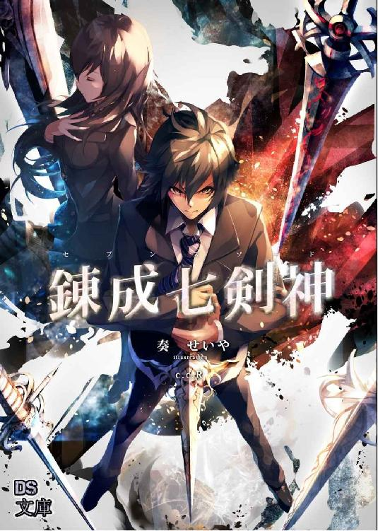

| 天下界の無信仰者（イレギュラー） 6巻 慈愛連立編 | |
| 奏せいや | |
| (2018) | |
天下界の無信仰者 六巻
---------------------------------------------------------------------------------------------------------------------------
奏 せいや


約束があった。なによりも大切な約束が。
それは当たり前のことだった。疑ったことなどないし、当然のものだと思っていた。
だけど違う。それは当たり前だけど、かけがえのないものだった。
何気ない日々に救われて、その笑顔に守られた。
辛いばかりの人生で負った傷。深く刻まれたその痛みを癒やすのは、当たり前にあった日常だった。
友がいて、笑ってる自分がいる。
そんな当たり前が、孤独だった人生でどれだけ幸福な時間だったのか。
だからこの勝負、勝たなくてはならない。
なによりも、自分のため。
望む未来のために。
そのために彼は赴いた。
さあ、はじめよう。
二人の、はじめての喧嘩を。
第一章 最高の友達
ゴルゴダ美術館前の広場には神愛とウリエルがいた。ウリエルは入り口前、階段の上から神愛を見下ろし、神愛は広場の中央からウリエルを見上げている。
二人はにらみ合う。ウリエルは鋭い中に炎の熱を込めて。神愛は真っ直ぐな気迫を宿し彼女を見据える。
二人の決闘を前に周囲は興奮とうねりを見せていた。数千度にもなる火柱と輝く金色の柱がいくつも噴き出し、二人の戦意を表している。
目の前には敵であり友。
にらみ合う中で、二人には分かっていた。今目の前にいるのは、紛れもなく友なんだと。
ずっと会いたかった。また話をしたかった。一緒に歩き、笑い合いたかった。
その相手が今、目の前にいる。本当なら喜びたい。また会えて良かったと。本当の友人のように話したい。
けれど、状況はそれを許してくれない。相手がそれを認めない。
ならば、決着だ。
ただ、大切な友を救いたい。
これは、そのための戦いだ。
ウリエルから言われた「君を倒して、ここから離脱してもらう」という言葉に神愛は負けじと言い返した。
「来いよ。俺が勝つ！」
「いいや、勝つのは私だ！ 君だけは救ってみせる。それが！」
ウリエルは階段から飛び神愛めがけ剣を振り下ろす。
「君に返せる、想いのすべてだ！」
対して神愛も走り出し、黄金を纏う拳を突き出した。
互いに相手を想うから。
二人は戦う。二千年前の使命も名誉も関係ない。人類と天羽の決戦も関係ない。
恵瑠を連れ戻すために。
神愛を救うために。
そのために。
二人は全力を出して戦う。
激闘が、始まった！
「うおおおおお！」
「はあああああ！」
神愛の拳とウリエルの剣が衝突した。生まれる衝撃波は周囲の熱を帯びて熱風となり漂う金粉を吹き飛ばす。
神愛とウリエルは力を押しつけ合った。
「どうした恵瑠、お前の力はこんなもんかよ！？」
「舐めるな！」
ウリエルは後退し間合いを離した。白衣のドレスが揺れ、鎧が掠れる音が響く。白い長髪が風になびいた。その姿は王族の姫のように優雅であり、騎士のように苛烈であった。
「私には勝てない」
それがウリエル、四大の天羽。神の炎。悪を焼き滅ぼす正義の剣。
「たとえ、君であっても」
ウリエルは左手に炎を宿した。彼女の顔ほどもある燃え上がる焔。それを神愛に向け打ち放った。鋼鉄すら蒸発させる圧倒的な熱が神愛に迫る。
だが、それを見逃す神愛ではない。
「させるかよ！」
神愛の正面に黄金の壁が現れる。周囲を漂う黄金の粒子が集まり障壁となって防いでいた。
「フン」
ウリエルは左手を下ろす。
神愛は本気だ。友人を救うために、取り戻すために今まで全霊で挑んできた。そして大勢の仲間が自分を支えてくれた。
彼は誰にも止められない。そして絶対に諦めない。
それはウリエルも同じ。彼に救われた。感謝した。大切な人だという想いは変わっていない。
彼女はこの想いを絶対に諦めたりしない。
二人は、一向に退かなかった。
「いくぞ恵瑠！ 勝負はこれからだ！」
「来い！」
神愛が仕掛ける。振り上げる黄金の拳を以て、超加速でウリエルに迫る。強化された肉体は多大な神化と同じ。物理法則を古い輪ゴムのように引き千切り、ウリエルに打ち付けた。
彼女は、それを剣で軽く跳ね除ける。
「ち！」
神愛は打ち付けた片手を軽く振るう。
ウリエルは剣を振った姿勢で神愛を冷たく睨みつけていた。
神愛はすぐに次の攻撃を出す。両手で繰り出すいくつもの打撃、一つ一つが嵐のような風圧を伴ってウリエルを襲撃する。
「はああ！」
津波のように押し寄せるその猛威を、ウリエルは斬り返していた。彼女が振るう一刀が黄金を切り裂き、神愛の一打と衝突し互いの攻撃をぶつけ合う。すさまじい力と力の激突だ、両者の間で爆弾がいくつも破裂しているかのような轟音を響かせて神愛の拳とウリエルの剣が交わっていく。
神愛が右ストレートを放つ。ウリエルに対する思いは神化となってすさまじい一撃だ。これだけで決着が付きかねない。
だが、ウリエルは見切った。神愛の拳を体半分をずらして躱し、隙だらけの神愛に剣を突きつけた。当たる。百戦錬磨のウリエルが確信する一撃、これは外れない。防御も不可能だ。
「く！」
しかし予想は裏切られる。ウリエルの剣は黄金の光に動きを鈍らされ、神愛は回避したのだ。
忌々しい。ウリエルの表情がひどく歪む。
神愛は止まらない。王金調律の二重属性、強化と妨害の両輪が神愛を押し上げる。相手の攻撃を気にせず前に出れるのだから攻勢一方だ。
だが、その一歩が踏み止まった。
「ハッ！」
ウリエルが振るう剣。その刀身に火炎が宿り神愛を襲ってきたのだ。
神愛の鎧、妨害の光が砕かれる。ウリエルが振るう連続攻撃がみるみると神愛の光を剥いでいった。
「くそ！」
さらには空間転移で姿を消してくる。四方からの突然の攻撃に一気に防戦に立たされる。ウリエルの攻撃を躱すか防ぐで精一杯。反撃しようにもすぐに姿が消えるのだからタイミングがない。
神愛は集中した。ここで焦っては一気にもっていかれる。ここを凌ぎ切り、次のチャンスへ繋ぐしかない。
空間転移による急襲、それも高速という、不意打ちの連続を凌ぎ切るのは至難の業だ。
だからこそ、それは強化によって得た神化の形、四次元への入口。未来予知だったのかもしれない。
「なに！？」
ウリエルが驚愕する。
死角から攻める不規則な攻撃を、神愛はすべて拳で迎撃していた。横から迫る刀身を裏拳ではね返し、ウリエルが現れるよりも早くに振り返り拳を打ち付ける。それを十五回、止まることなく繰り返した。
ウリエルは一旦離れ神愛の正面に現れた。距離は三メートルほど。左手には巨大な炎が渦巻き神愛へ放射する。
「フン！」
火炎は神愛を呑み込むほどに大きい。触れたものを一瞬で灰にする攻撃。
それを、神愛は殴りつけた。
「うおおお！」
ウリエルの炎を神化の拳が迎え撃つ。ウリエルの強大な炎が一瞬で吹き飛び、この場で一番の爆風が起こっていた。ゴルゴダ美術館前の広場全体を白煙が覆っていく。
神愛はその場を動かずウリエルを見つめていた。
ウリエルは強い。さすがは伝説の四大天羽。その力は絶大だ。なまじ人間だった頃の恵瑠を知っているだけに衝撃が大きい。
しかし、だからだろうか。
「ハッ......」
神愛は、小さく笑った。
「そう言えば、てめえとこんな風に喧嘩することはなかったよな。てか、加豪くらいか」
「......そうだな」
懐かしい日常を思い出す。まだ数日しか経っていないはずなのにかなり昔のように感じる。
それはウリエルも同じなのだろう。どこか郷愁を思わせる表情だった。
しかし、少しだけ緩んだ雰囲気が引き締まる。
「お前をそこに連れ戻す」
「いいや、世界は変わる」
二人は見つめ合った。神愛の表情も引き締まり、真剣な瞳を向け合った。
まるで鏡のようだ。想いまでもそっくりそのままで、願いは同じなのだから。
「お前を救おうと、俺は必死だった」
神愛は拳を丸める。ここに来るまでにあった多くの出来事、それは替え難いほど大切なもので、神愛の拳を重くする。
「いろいろ馬鹿もやったよ。周りからはスゲー怒られたけどさ」
「加豪さんか」
「へ」
よくわかってらっしゃる。図星に苦笑いを浮かべた。
「君は、初めからめちゃくちゃな人だった」
ウリエルは懐かしそうに、どこか緩やかな声でつぶやいた。
こうして話していると、やはり二人は友達なのだと思い知らされる。いつだって、しようと思えば他愛ない話ができる。意味のない、けれど楽しい時間が始まる。
「そりゃお前もだろうが。俺は覚えてるぞ？ お前、俺と初めて会った時殺される〜とか言って逃げ出しただろうが」
「覚えてないな」
「んだとてめ------」
「いいや」
「？」
ウリエルの言葉に怒りかかった神愛だが、すぐに否定されクエスチョンマークが顔に出る。
ウリエルは勝ち誇ったように目を伏せていたが、その目を細く開くと、温かく微笑んだ。
「覚えているさ、君といた時間はすべて」
「............」
その言葉になにも言い返せない。茶化すことが出来ない。それほどまでウリエルの言葉には信愛の情が乗っていた。
「忘れるはずがない。私の幸福を。一番の安らぎを。あの時を、忘れるなんて私には不可能だ」
自分の胸に片手を当てる。ウリエルの語る想い。その時の彼女は笑い、安らぎに包まれていた。けれどその温かい光に陰が落ちる。避けられない現実を思い出したように。
「だけどね、神愛。無理なんだよ。この世界にある悲劇を無くすためには世界そのものを変えなければならない。この世界に必要なのは慈悲じゃない。変革だ」
胸に当てていた手が拳に変わる。強く握り締められたそれは震えていた。
「私は、もう！」
感情が溢れる。今までため込んできた想いを叫ぶ。
「誰も悲しむ姿なんて、見たくないんだ！ たとえそれが、私の傲慢でも！」
生まれた時から見続けてきた。人の笑顔と不幸。それに一喜一憂している自分。ただ人々を眺めていただけの日々。
いつからだろう。何故なのだろう。
いつしか、人の悪事しか目に入らなくなったのは。
憎悪は幸福で相殺できない。たとえ人々の笑顔を目にしても、それを嬉しく思っても、憎悪というのは消えることなく残り続ける。そうして積み重なった増悪は彼女の価値観を偏らせていった。
悪を裁くこと。人々の幸福のために、それしか考えられなくなっていた。
憑りつかれたように。
もう、人の悲しむ姿は見たくない。それだけ。本当にそれだけだった。最初から抱いた思いは一つだけ。今も変わらない想いは一つだけ。
みんなが、笑顔でありますように。
彼女はそれだけを思い続けていたのだから。
「じゃあ、なんで」
そんな彼女に、神愛が聞いた。
「お前はそんなに悲しそうなんだ？」
「！？」
ウリエルの体がビクッと震えた。
神愛は心配していた。ウリエルの言う理想、想い、願い。それを否定しようとは思わない。
けれど、彼女が願いを語る時、彼女は笑っていない。むしろ逆、辛そうだった。
悲しそうに、夢を語るのだ。
「悲しむお前を、誰が救ってやるんだ？」
そんなのはおかしい。誰だって自分の願いが叶えば喜ぶはず。それなのに悲しむなんて。
間違っている。神愛は言った。
「恵瑠、お前のやろうとしていることは間違っている。お前たちが平和と言ってしようとしていることは、しょせん管理体制を整えるための支配じゃねえか。それを無理やり平和だと自分に言い聞かせてるだけだ。お前だって分かってるはずだぜ恵瑠。こんなのは間違ってるって。そんな世界で、どうやって俺たちは笑えばいいんだ？」
誰かにあれこれ指示されて、自分のやりたいことも願いも持てず、なにを楽しみにすればいい。なにより、
「どうやって、お前と一緒に笑えばいいんだよ！？」
その先に、彼女と一緒にいられる日々があるのか。
「私が」
神愛の叫びに、ウリエルは顔を逸らした。
「君と笑い合うことは、もうない」
神愛の視線から逃げる。君の願いには応えられないと。
「そうか、分かったよ」
ウリエルの答えを知って神愛も決める。
「お前は絶対に止める」
彼女がしようとしている世界の変革、その未来に自分と彼女が共にいる時間がないのなら。
そんなの願い下げだ。そんな未来はいらない。だから止める。神愛は決意を新たにする。
「私もだ」
それはウリエルも同じ。誰に否定されようと退く気はない。理想を実現せんと昂る炎は胸に渦巻いている。
「君には分からない。人類が行なってきた愚行と、これからも起こる争いが。そこにあった多くの悲しみと苦しみはいつ報われる？ いつになったら、人は誰しもが笑える世界になるんだ！ このままじゃ、人類はいつまで経っても報われない」
平和のため。それを誰よりも願う天羽が、神愛に問い質す。
「君に分かるのか、人類の歩むその果てが！？」
多くの悲しみと苦しみを見届けてきたウリエルが、激情を表した。
二千年の想いが、この場の空気を震わしていく。
それを、
「知らねえよ！」
神愛は、否定した。
「知るかんなもん！ 世界？ 人類？ みんなお手て繋いで平和を作りましょうだぁ？ 知らねえよ。知るわけねえだろ。俺にとってこの世界がどれだけクソだと思ってるやがる。蔑視と罵倒、罵詈雑言。そんなもんクソ食らえだろうが。そんな中で、お前たちは俺の宝物なんだ。俺にとって大切なもんなんてそれだけだ！」
ウリエルの目が丸くなった。
神愛は叫ぶ。むしろ吠える。彼女の想いすら上回らんほどに、神愛も激情をぶつけていった。
世界の底辺で生きてきた男が、想いを叫ぶ。
その思いは二千年と比べれば程遠く、歴史もない浅いものだ。
けれど、人の想いに月日なんて関係ない。一目で異性に恋をすることもある。
全世界から向けられる憎悪を浴びて生きてきた。胸にあるのはいつも怒りと悔しさだけで、それ以外のものなんて存在しなかった。
そんな自分の人生に現れた、友達という神より希少な存在。
神愛は神を信じない。信仰しない。世界すら憎んでる。
だが、
しかし、
だとしても。
友達という恩人だけは、なにがあっても諦めない。
「俺にとっての世界っていうのはな、お前たちと笑い合ってた、あの『場所』なんだ！」
それが宮司神愛という、無信仰者のすべてだった。
「ふ、ふふ......。はははは......」
神愛の言葉を黙って聞いていたウリエルだったが、突然笑い出した。躊躇いがちの、どこか呆れた笑い声だったが、それは楽しそうだった。
初めて見たかもしれない。こうして彼女が笑うところは。
ウリエルは神愛を見つめる。
「相変わらずだな、君は」
「ハッ」
ウリエルの雰囲気に合わせて神愛も気負いなく笑う。まるで戦場とは思えない自然なやり取りだった。
「神愛」
「ん？」
そこでウリエルに声をかけられる。改まって聞かれ、神愛は振り向いた。
ウリエルは、神愛を見つめていた。
「君と出会えて、本当に良かった」
優しい声と優しい顔で。ウリエルは、炎に包まれた戦場で微笑んでいた。
きれいだった。それは儚い線香花火のような、細く繊細な雰囲気だった。
「ったく、なーに最後の別れみたいなこと言ってやがる。俺たち、これからだろうが」
でも、神愛は認めない。ウリエルがなにを諦めようとしていても、自分だけは決して諦めない。ウリエルに理想があるように、神愛も求める日常を取り戻すまでは。
「いくぜ恵瑠、俺の全力を見せてやる」
「来い。それでも私が勝つ！」
友との語り合いはこれまでだ。久々の再会に興じるのもここでお終い。
これからは倒すべき相手。互いに望む未来を手にするため。
友としての時間は泡沫のように消え、空気は再び戦意に震える。
「我が名はウリエル！ その誇りに賭けて、君はこの場で倒す！」
ウリエルは片手を上げる。すると曇天からいくつもの火球が降り注いできた。まるで隕石の襲来だ。衝突に建物は砕かれ破片が街に四散する。災厄だ、街ひとつ壊滅させんほどの大災害がこの場を襲う。これは世界の行く末を決める大勝負、空も大地も荒れ狂う。
その中を、神愛は走っていた。天から降り注ぐ建物の瓦礫、地面は爆撃のように飛び散りひどい有様の中を。
「うおおおおお！」
ウリエルに接近し拳を打ち出す。渾身の一撃。しかしそれはウリエルの刀身に防がれた。押し付け合う力に黄金の火花が散っていく。気炎の声を吐きながらいくつもの拳を振るい、ウリエルは華麗な剣技で拳を逸らし、もしくは受け止めた。
彼女の振るう剣、それは剣術から芸術の域だった。洗練された力と技。計算された型と研磨された心は合一し彼女を炎の剣へと変えていく。神愛の妨害を一身に浴びながらも剣技に衰えは見えない。
対して神愛の戦い方はまさにケンカ戦法だ。路上で行うものと変わらない。力任せに殴る、蹴る、技術も減ったくれもない。ただ強化した体で戦うだけ。それで駄目ならさらに強化して殴る。神愛らしい単純な戦法だ。だが、だからこそ強い。無限に強化されるその肉体は彼自身の想いと連動してどこまでも強くなる。
相手の強さは関係ない。自分の想いが神化となり、相手の強さを上回れるかどうか。
神愛の勝負はいつだって自分との戦いだ。
ウリエルが剣を上段から振り下ろす。高速かつ力強い一撃。しかし神化を得ている神愛は体を横にずらした。見える。まるでスローモーションのように。次に横一閃の大振りがくる。それを背中を反って躱した。三撃目は強烈な突きだ。体ごと打ち込む片手突き。一点に収束された力が迫る。
その脅威を前にして、神愛は同時に一歩前に出ていた。相手の技に怯まず前に出るのは誰にでも出来ることではない。体を剣線から外し、ウリエルの伸びきった腕を捕まえた！
「おらあ！」
もう片方の手でウリエルの肩を掴み、彼女の腹部へ膝蹴りを行う。
「ぐ！」
その威力にウリエルの体が浮いた。
神愛はウリエルの腕を掴んだまま自分の体を回転させ彼女の腕を捻ると、彼女を回した。神愛の周りをウリエルが早足で歩く。神愛は手を離すもウリエルは体勢を整えられず、その隙に神愛は大振りの回し蹴りでウリエルのこめかみを蹴り飛ばした。強烈な蹴り技にウリエルはゴルゴダ美術館の入り口へと突っ込んでいく。扉のガラスが割れ中へと消えていった。
「どうした、その程度かよ恵瑠。お前はもっと強いんじゃないのか？ そんなんじゃ俺は止められねえぞ？」
神愛が両手を広げ挑発する。
その直後だった。ゴルゴダ美術館の入り口すら覆う炎が噴き出し、その中からウリエルが飛び出してきた。剣を構え、飛んだまま神愛に打ち付ける。神愛は両腕を交えガードした。
「ぐぅう！」
神愛の両足が地面にめりこんだ。
（マジかよこいつ！）
ウリエルの剣は妨害の黄金に阻まれ神愛の体には当たっていない。そのため体は切れていないが、問題はその衝撃だ。斬撃はないがその剛剣、山すら砕かんほどの威力が体に響く。華奢な体からは到底想像も出来ないが彼女の神化は超越者だ。弱いわけがない。神化された神愛の体でも、一撃一撃が鉄バットで打ちのめされるように痛む。ガードした両腕が痛みに震える。
ウリエルは着地すると次々に剣を打ち付けてくる。速い。神愛は前をボクシングガードするも体がよろめく。
「はああああ！」
そこへウリエルは突きの連撃を打ち込んできた。その速度はまるでマシンガンだ。腕に感じる衝撃がまるで同時、点ではなく面のように痛む。今どこを突かれたのかも分からない。ウリエルの連撃に身動きが取れず、その間にウリエルは突きをしている腕を引いた。大きく溜め、最大の一撃を放つ。
「ちぃいい！」
その威力に今度は神愛が吹き飛ぶ番だった。両足が地面から離れる。すぐに両足をつけさらに片手を地面に突き刺す。それでも勢いは止まらず、神愛の体がひと回転してようやく止まった。
「このぉ！」
神愛は走った。今のお返しをせんと離れた距離を勢いよく走る。
「ファイヤーウォール」
それを阻まんとウリエルは片手を小さく上げた。地面から彼女を囲うように炎の壁が噴出する。二人を隔てるように。それはいくつも現れた。あらゆるものを阻む猛熱が近づくことすら許さない。
が、
「ワンツー！ ワンツー！ ワンツー！」
神愛の左ジャブ、右ストレートが次々に炎を打ち消していく。
「なにッ？」
数千度の壁をいとも容易く突破してウリエルの前に現れる。神愛は左手を振るい、ウリエルは剣で防御の構えを取った。
「デス------」
神愛の左アッパーが刀身と激突する。強い。ガードが崩される。それだけでなく体が浮かんだ。
「トロイ！」
その無防備な体へ、背中まで振り被った右ストレートを叩き込む。
ウリエルの体はまたしてもゴルゴダ美術館へと激突していった。建物の三階に吸い込まれるように消えていく。建物が壊れる豪快な音がなる。しかしそれだけでない。建物を貫通してさらに奥へと飛んでいったのだ。
「ふん！」
神愛は後を追う。両足に力を入れ、一回の跳躍でウリエルが激突していった三階までジャンプする。破壊された建物の入り口に着くと、反対側の壁が空いているのでそこへ走る。ゴルゴダ美術館の裏の先は庭園になっていた。それはラファエルが守護していた結界の支点の場所でもあった。そこにウリエルの姿を見つけ神愛は飛び出す。その跳躍の飛距離といったらもはや飛行のレベルだ。今の神愛なら高層ビルでも飛び越えていける。
ウリエルは神愛に殴られ数百メートルも吹き飛ばされていた。起き上がったばかりか剣を地面に突き刺し顔が下がっている。そんなウリエルの頭上から、神愛は拳を振り下ろさんと降下していく。
「終わりだぁ！」
これが決まればトドメの一撃だ。
「くっ！」
神愛の襲撃にウリエルが顔を上げた。すぐに体を起こす。そして四枚の羽を動かした。羽の先を前に出し、それぞれが神愛の手足に巻き付いた！
「なに！？」
白い羽がツルのように巻き付き動きを封じる。神愛は空中に固定されてしまった。
ウリエルの残りの羽が地面に突き刺さる。それは彼女の体を支える杭であり、ウリエルは左手で右手首を掴み、右手を神愛に向けた。手の平のさきでみるみると炎が膨れ上がっていく！
神愛はもがくが振り解けない！
「倒れろぉおおお！」
逃れられない神愛へ、ウリエル渾身の爆炎が放出された。反動が羽を伝って地面を砕く。
「があああああああ！」
全身を覆う業火、魂を焼却するほどの炎熱が襲う。それはウリエルの羽の先を一瞬で燃やし尽くし、神愛ははるか彼方へと飛んでいった。
神愛は飛んでいく、文字通り空を飛んでいた。体の上には黒い雲、体の下には街の建物が見える。
ウリエルは灰になった羽の先をすぐさに復元し、地面に刺していた剣を引き抜いた。そしてその場から姿を消す。
空間転移によって神愛の頭上に現れ、両手で握った剣を振り下ろす！
「ぐぅう！」
なんとか両腕でガードするが神愛は急降下、地面に落下した！ 衝撃に爆音が起こる。
「なんだ、なにが起こった！？」「何事だ！？」
そこはゴルゴダ軍と天羽軍で大混戦のサン・ジアイ大聖堂前だった。突然空から落ちてきた神愛に周りが騒然としている。
神愛は煙が舞う地面から起き上がる。落下の衝撃で地面は砕け瓦礫の上に立ち上がる。
見上げれば、空からゆっくりとウリエルが降下してきていた。
「ウリエル様？」「ウリエル様だ！」
彼女の登場に天羽たちからも声が上がる。
この場で一番の激戦区に現れた二人に人も天羽も驚いていた。みなが彼らに注目している。
その中で、二人は激突した。
全力で行われる拳と剣のぶつかり合い。その衝撃が生む空気の渦に騎士と天羽が吹き飛ばされる！
「ぐあああ！」「離れろ！ 危険だ！」「退避ぃ！ 退避ぃ！」
ウリエルの剣が振るわれる。それを神愛は躱す。ウリエルの剛剣は地面を砕いていき神愛の背後にいた騎士が弾け飛んでいった。
ウリエルの攻撃を躱し神愛も拳を打つ。攻撃した直後の姿勢、躱せない。だがウリエルは空間転移を用いこれを回避した。神愛の拳が生む風圧はウリエルの背後にいた天羽たちを吹き飛ばす。
二人が戦うだけで周りは自然災害級の危険域だった。弱者では観戦すら許されない。普通の人でも動けば埃が舞うように、二人が戦えば人が舞っていく。
ウリエルは剣を振るう。余波で地面や街を砕きながら。まるで竜巻の擬人化だ、剣を振った剛風が対する者に叩き付けられる。
それを、神愛はねじ伏せる。彼の発する闘志は神気、物理的な脅威など意味をなさず前に出る。
ウリエルの攻撃、それを躱していく。上段からの攻撃を横に躱し、横一線の攻撃を背中を反らし、渾身の突きを前に出て捕まえる！
「いくぞ！」
神愛はウリエルの片腕を掴みながら彼女の頭を抱えると腹へと何度も膝蹴りを行なう。その威力、彼女の体が何度も衝撃に浮き重い打撃音がなる。さらに神愛は片足を持ち上げウリエルを跨ぐと、腕を巻き込みながら自分を回転して横になり、肘の関節技、腕挫十字固に繋いだ。ウリエルも地面に倒れる。
「オラぁ！」
「がああ！」
剣を持つウリエルの右肘が可動域を超える負担に悲鳴を上げる。
神愛は腕を持ったまま立ち上がった。ウリエルを起たせる。肘の痛みにウリエルは手を当てながら片膝を付いていた。その隙、神愛は体ごと回す大振りの回転蹴りを彼女に打ち付けた！
「があっ！」
その威力に猛スピードで吹き飛んでいく。地面を何度も転がり、彼女が通った後には何枚もの羽が宙に散らばっている。
「終わりだ！」
神愛は跳んだ。決めるならダウンしている今の内しかない。追撃の手を緩めずこのまま押し切る。右の拳を振り下ろさんとウリエルの場所まで十メートル以上を跳んだ。
「舐めるな！」
だがウリエルは諦めていなかった。これほの痛手を負いながらも目はまだ負けていない。
迫る神愛に向け四枚の羽を伸ばす。それぞれが手足に巻き付き縛り上げた。
「ちぃ！」
攻撃が決まらず神愛から舌打ちが出る。
ウリエルは右手を神愛に向け炎を充填していく。神の炎とまで呼ばれた極大の炎が完成へと形を整えていく。
「二度も食らうかよ！」
それに合わせ神愛は叫んだ。神愛の正面に黄金の光が集まっていく。妨害の光は障壁となり神愛を守る。
ウリエルの炎が神愛を襲った。しかし神愛の光がそれを阻む。放たれた火炎は乱反射を起こし周りを襲い始めた。無差別に辺りの人や天羽を吹き飛ばしていく。
「うわあああ！」
「逃げろぉ！ 巻き込まれるぞ！」
「ここも駄目だ、別の場所だ！」
「あいつら、なんて戦いしてやがる！」
神愛とウリエルの周囲は壊滅状態だ。舗装された道も建物もことごとくが破壊されている。
ウリエルの攻撃が終わった後、神愛は両手に巻き付く羽を掴んだ。それを引っ張り両足をウリエルに突き出した。ドロップキックのようにウリエルの顔面を直撃し束縛から解放される。空中で一回転し着地した。
「どうだ！」
ウリエルはよろめき顔面に手を当てている。その手を下ろすと神愛を睨み空中へと飛び立った。
「まだだ、まだ終わっていない！」
神愛を見下ろす位置でウリエルは左手を空に向けた。手の平に彼女を覆うほどの巨大な火球が現れる。火の玉と呼ぶには大きく、極小の太陽のようだ。内部では核融合を繰り返し小さな爆発が表面を揺らしている。放射能は致死レベル。細胞が一瞬で壊死する破滅の星だ。
「ふん！」
それを、神愛目掛け投げつけた！
「オラぁ！」
それを殴り返した！
「なに！？」
弾き返された火球はウリエルに直撃し吹き飛ばされていった。爆発が生んだ力は自分に跳ね返り数十キロも飛んでいった。
ウリエルが落下した位置。そこは本来サリエルが守護している東の支点だった。駅前の広場に体を何度も打ち付けようやく停止する。
直後神愛も空中から飛び降りてきた。きれいに着地しすぐにウリエルに駆けつける。そのまま勢いに乗って殴りつけた。
「くっ！」
ウリエルはまたも吹き飛ばされ駅の建物を壊しホームへと入っていった。半壊する駅のホーム。そこへ神愛も入っていく。
ホームで神愛とウリエルの攻防が行なわれる。拳を打ち、剣を振るいながら移動し駅のホームから出て線路の上に出た。列車はなく遮蔽物のない広い場所に出る。神愛は小石が広がる地面を踏み締めた。
神愛とウリエルの戦いは首都ヴァルカン全域に渡ろうとしていた。この街すべてがバトルフィールド。行動範囲が広すぎる。街を行き交いながら戦うなど尋常じゃない。
だが、それだけに二人の力が強大であり、それを支える想いが絶大な証だった。
それは、恵瑠との日常を取り戻すため。
そして、
「はあああ！」
彼女は、神愛を救うために。
ウリエルは烈火の気合で神愛に斬りかかる。まだ距離がある神愛に向かって飛行しながら炎をまとう剣を投げつけた。それを神愛は躱す。ウリエルから剣がなくなる。が、神愛の背後。空間転移していたウリエルが投げた剣を掴み斬りかかる！
「ちぃ！」
間一髪で避けるもののウリエルは止まらない。剣を乱舞するように振り回す。その迫力は怒涛の炎のよう。大振りだが受け切れない。神愛は体を投げ込みウリエルの間合いから離れる。
ウリエルは左手を上げ神愛の地面から火柱を噴き出した。神愛は走るがいくつもの火柱が執拗に追いかける。
「しまった！」
気づいた時には神愛の周りは火柱によって封鎖されていた。炎の壁にぐるりと囲まれている。
追い詰めた。ウリエルは剣を構え直し神愛に剣を打ち付ける。
「ぐぅ！」
ガードする神愛へ右上段、左上段から剣を振り下ろし最後に両手で握り横に一閃する。ウリエルの剣撃に押され神愛の両足が地面を滑る。
さらにウリエルは姿を消すと炎の壁から高速で突撃してきた。そのまま通り過ぎ炎の壁に消えていく。まさに一瞬の出来事。まるでビリヤードの玉を弾いたように縦横無尽に行き交い神愛を攻撃する。前後左右、炎の壁に姿を消しては電光石火で突撃する攻撃に成す術がない。
「ぐ、がっ、があ！」
斬る。斬る。斬る。斬る。斬る。何度も何度も斬り付けていく。
それは何度も車に轢かれるような衝撃だった。ついには神愛の体が地面から離れる。そのまま木の葉のように数メートルも舞い上がっていった。
火柱がなくなり代わりにいくつもの火の玉が神愛を包囲していた。ウリエルはきれいに着地すると長い髪を片手でさらりと流し、剣を「ふん」と振り下ろす。
直後、彼女の背後で火の玉が一斉に神愛へと襲撃した。
「がああああ！」
いくつもの爆発が体を打ちのめし神愛は地面に落下する。
「くぅう！」
ウリエルは振り返り神愛は立ち上がる。
まだ立つか。彼女はそうした目で見下ろし。
まだ終わっちゃいねえ。神愛はそうした目で睨み上げた。
神愛は体の痛みから前のめりになっている。なんとか姿勢を正し気合を入れる。
「ハァ！」
黄金の闘気が発散される。
「やるじゃねえか......」
痛みを堪え、それでも笑みを浮かべる。
「だがな、俺はまだ生きている。生きている限り、俺は諦めねえぞ！」
強化の属性。神愛を包む黄金が神愛の傷と痛みを癒していく。
「いいや、君は諦める」
神愛の熱い視線に、ウリエルも白熱の眼差しを送る。
「私が、君に勝つからだ！」
神愛を見つめ、想いを叫ぶ。
負けられない。
守ると決めた。
そのためにも、この戦いは負けられない！
「言ってくれるぜ。だがなぁ、そりゃ俺の台詞なんだよ！」
神愛が前に出る。ウリエルも剣を構え前に出た。
二人の戦いは終わらない。その想いが折れぬ限り。その想いが尽きぬ限り。
「うおおおおお！」
「はああああ！」
二人の戦いは終わらない。
ウリエルが攻める。これほどの激闘、受けた傷や痛みは数えきれない。今も体が訴える痛みに思考が揺れそうになる。しかしそんな素振りも様子も見せず、彼女の剣閃は力強さを増していく。
「ちぃ！」
だが、そんな彼女が忌々しく声を漏らす。それは痛みよりも厄介なもの。
神愛の周囲を漂う、妨害の黄金だ。神愛に近づき害をなそうとすれば、それは自動的にウリエルの体に纏わりつき束縛してくる。まるで水中にいるかのような身動きの悪さにせっかくの剣技も精彩を欠いていく。
さらに、強化の属性は妨害の威力をも強化し、その呪縛はさきほどよりも飛躍的に上がっていた。
ウリエルは神愛から離れた。
それを、神愛は逃さない。
「はあ！」
神愛がウリエルに向け右手を伸ばす。それに合わせ黄金の光がウリエルに伸びた。彼女に纏わりつき十字架のように固定したのだ。
「く！」
油断した。敵対行動に対し自動的に反応するだけでなく、遠隔操作もできるのか。振り払おうとするもすぐには出れない。
「うおおおお！」
神愛は走り出した。相手は身動きを封じられている、さきほどの意趣返しだ。
神愛はウリエルの前に立ち両手で殴りつけていく。何度も何度も、高速で打ち出される拳がウリエルを叩く！
「ンンンンンンンンン------オラぁ！」
最後に大振りの一撃を打ち付けた！
「がああ！」
神愛の最後の一撃は妨害の光ごと破壊しウリエルを吹き飛ばす。彼女の体が地面に叩き付けられ転がっていく。
「まだだ......まだ......」
ウリエルがゆっくりと起き上がる。その表情は苦悶を浮かべダメージが積もってるのが分かる。しかしその意志は未だ健在。折れていない。尽きていない。
彼女の想いはまだ、神愛を救うと諦めていない！
「私はまだ、負けていない！」
ウリエルは浮上した。左手を天に掲げ、そのさきには破滅の火球が浮かんでいた。さきほどよりも大きい、全長二メートルはあるか。その熱と放射能に駅周辺の草花は全滅する。
「私は負けない！ 負けたくない！」
けれど、その熱にも負けない想いが叫んでいた。
「君を、失ってたまるかぁああ！」
破滅の星を希望に変えて。
救済の祈りを戦意に変えて。
投げる。失いたくないと叫びながら、本気の攻撃を打ち下ろす。
彼女の想いは届くのか------
「オラぁ！」
神愛殴り返す！
「ふん！」
それを叩き返す！
二人の間で火球が行き来する。
「オラぁ！」
「ふん！」
「オラぁ！」
「ふん！」
「オラぁ！」
「ふん！」
「くたばれぇえ！」
「がああああ！」
打ち負けた。火球はウリエルに命中し吹き飛んでいく！
自身が作り出した破壊力に大きく飛ばされる。空中を十数キロ飛んでいるが勢いはまったく止まらない。
そのまま落下していき、たどり着いた場所はゴルゴダ美術館前広場。最初の場所に戻ってきた。
神愛も上空から着地する。ウリエルが墜落した場所は陥没し煙が上がっていた。スタっと地面に足を乗せ煙の先を見つめている。
「ぐ、うう......」
煙の中に影が見える。煙は晴れ、ウリエルは苦しそうな表情で立っていた。剣先は下を向き反対の手を肘に当てている。
これまでの戦闘で負ってきたダメージは大きい。ここは畳み掛け決着を付ける。神愛はすぐに走った。助走をつけ勝利に向かい突き進む。
黄金を纏う拳がさらに輝く。
神愛の勢いは止まらない。二人で交わした約束を叶えるまで。
しかし、
ついに、
現した。
「無価値な炎！」
目の前に噴出する青白い猛炎に神愛の足が止まった。直感で感じ取る、これはまずいと脳が警報を鳴らした。神愛はすぐに後退する。
「なんだ？」
見たこともない炎に眉間にシワが寄る。分からないが全身があれを拒絶している。
青白い炎は神愛とウリエルを隔てるように出現していた。その炎は他の炎をすら燃やし尽くし、触れた地面すら抉られたようになくなっていた。まるでゼリーをスプーンですくったようにそこだけ地面がなくなっている。あり得ない。どれだけ高温であろうともこうはならない。
それで理屈は理解できないが意味は理解した。
あれは、触れたものを即座に消滅させるものなのだと。
「なんだよ恵瑠、ずいぶんと危険なものを隠してたじゃないか。必殺技はピンチになってからしか使わないのか？」
「これは、使いたくなかった......」
神愛の軽口にウリエルは疲労の溜まった声で応える。姿勢も前屈みになっている。八枚の美しい羽も疲れたように下がっていた。
「これは、手加減ができない。触れたものをすべて消してしまう」
「だと思ったよ。文字通りの必殺技か」
厄介なことこの上ない。攻撃面でも防衛面にしても触れてはならないという無価値な炎は。迂闊に近寄ることが出来ないのはもちろんのこと、離れたところで狙い撃ちにされる。ジリ貧だ。
ウリエルは姿勢を正した。下がっていた羽も持ち上がる。表情は痛みに引き攣っていたがその眼差しには炎が宿っていた。
「私は負けない！ 絶対に！」
ウリエルは歩き出した。割れた地面を踏みつける。
青い炎が彼女の周りを覆っていく。腰まで伸びる高さで燃え盛り段々と勢いを増していった。まるでウリエルの戦意と呼応するかのように、その高さを上げていく。
ウリエルは壊れた地面から離れた位置で立ち止まった。
「神愛......」
つぶやかれた名前はなにを意味していたのか。真剣な響きで吐かれた声にはしかし悲しげな色があった。
「私だって、本当は......！」
彼女の唇が震えた。無価値な炎を出した以上決着の時は近い。一撃で勝負が決まりかねない。
終わりの予兆を前にしてこれが最後のやり取りになると悟ったか、ウリエルの本音がこぼれた。
「私だって......！」
それは戦意の隙間から、決壊した洪水のように現れた。
「君と一緒にいたいよ！」
言った。飾らない思いを。何度も口にした言葉を、最後の最後で今一度言う。
まるで泣きそうな目で。泣きそうな声で。
「ずっと、ずっと。君と一緒に！ これからも！」
片手を胸に当て、必死な表情を神愛に向ける。そこに伝説とまで謳われた天羽の恐怖はない。少女と変わらない純粋な瞳だった。
その目が下がる。変えられない現実に屈するように。
変えられないのだ。今も曇天の下、ゴルゴダでは人類と天羽が争っている。この戦いを止めることも、ミカエルの野望を止めることも不可能だ。
天羽は無限。目的を果たすまで終わらない永遠の戦奴。無限を前に、戦況を変えることは出来ない。
故に、ウリエルは諦観の中必死の抵抗を続けていた。
「だけど。無限の天羽軍は止まらない......。そして、このままだと君はミカエルに殺される。無限の天羽と共に。そんなのは、絶対にいやだ......。いやなんだよ、神愛......」
胸が引き裂かれるような思いが伝わる。自分を友達だと言ってくれた大切な人。なによりの宝物。それを失いたくない。それが死別など、想像しただけで涙が零れる。
死んでほしくない。望みはそれだけ。他はなにもいらない。一緒にいる未来もなにもかも、すべてを諦めてもいいから。だから。
神愛にだけは、死んでほしくない。
「負けねえよ！」
「神愛......」
そんな彼女の諦観を、神愛は真っ向から否定した。
ウリエルは顔を上げる。そこには激情を露わにし、ウリエルを見つめる神愛が立っていた。
（なぜ？）
その姿勢に、ウリエルは胸の中で聞いていた。
（どうして、諦めない？）
神愛は諦めていない。伝説の天羽を前にしても。無限の天羽を敵にしても。彼女が諦めたすべてを。
彼女と一緒にいるという未来を、諦めていない！
だからこそ！
叫ぶのだ！
進むのだ！
心の底から望む、希望が差す未来へと！
「死んだりしない！ お前のそばにずっと居てやる！ 何度でも言ってやるよ！」
神愛の背後で五つの黄金の柱が噴出した。噴水のように溢れ周囲へと飛沫を散らす。
黄金。それは永遠の輝き。あらゆるものを照らし、己のみで輝き続ける不屈の光。
神愛の全身が黄金のオーラに包まれていた。神気を纏い神と一体となる。
対してウリエルも全力を発揮した。周囲に無価値な炎を展開する。触れるものは即消滅。概念すら通さない反則的なまでの力。
黄金のオーラと青白い炎熱が空間で鬩ぎ合う。神愛とウリエルは睨み合い、二人同時に踏み込んだ。
「恵瑠ぅうう！」
「神愛ぁああ！」
黄金と青き炎が混ざり合い渦巻いていた。二人の闘気が大気を震わせ大地がひび割れていく。
「終わりだ！」
ウリエルが叫ぶ。手を翳し無価値な炎を放射した。狙いは神愛を覆う黄金のオーラ。それを剥がし神化を解く。強化さえなくせばあとは地力で勝てる。この力を発動した今、ウリエルに隙はない。勝利へ繋ぐ絶対的な力。
無価値な炎が迫る。しかし神愛は逃げなかった。
「なに？」
そんな素振りすらない。ただ真っ直ぐウリエルへ突き進んでいく。
まるで、ゴールがそこにしかないように。
そして、神愛を覆うオーラとウリエルの無価値な炎が激突した。
「うおおお！」
黄金と青が混ざり合う。黄金は威光を発し主張する。しかしそれがどれほどのものだろうがウリエルの炎は否定する。黄金の輝きを無価値だと言うかのように炎を消滅させていく。
はずだった。
「なに？」
だが、ここで必定が覆る。黄金の光は消えていない。
「馬鹿な！？」
目の前で起こる現象に、ウリエルが驚愕の声を上げる！
「なぜ、私の無価値な炎が！？」
目を疑った。頭が混乱する。こんなことあり得ない。
無価値な炎はすべてを消し去る。だが神愛の黄金光までは消えていない。
それは神愛の思いが無価値な炎を超えているということだ。
黄金の光。それは神愛の思いそのもの。恵瑠を思う気持ちが神化となって条理を超えていく。
ウリエルの無価値な炎すら超える、圧倒的信仰だった。
越えろ。
そして願え。それに向かって走り続けろ。
諦めたくない願いがあるのなら。
叶えたい望みがあるのなら。
想え。
絶対に叶えてみると叫んでみせろ。
その想いが奇跡を起こす！
「うをおおおおお！」
迫り来る青い本流を神愛は突き進む。
神愛は、無価値な炎を突破した！
直後ウリエルの体に妨害の光がまとわりつく。彼女の全身が、八枚の羽が黄金に覆われる。
（動けない！？ 空間転移は？ 駄目だ、妨害されているッ）
ウリエルも振り解こうとするがすでに遅い。
神愛は右手を背後まで反り、拳に黄金が収束していく。
「これで------」
これが決着の一撃。
「終わりだぁあああ！」
神愛は放った。拳は下から上に振り抜き、ウリエルの腹部を直撃した。
「がっはぁ！」
拳の勢いは止まらず頭上にまで持ち上がる。ウリエルの足が地面から離れた。
神愛の拳の勢いに大気は黄金とともに渦を巻きウリエルの体を貫通していった。ウリエルの体を突き抜け空高く伸びていく。
その光が暗雲に当たった時、雲に穴が開き一瞬で消えていった。黒い曇はなくなり多くの光が地上に降り注ぐ。
世界が、光で満ちていた。
「あ......あ、あ......」
ウリエルは体をくの字に曲げ神愛の拳の上に乗っていた。互いの横顔が触れ合い、白い長髪が神愛の頬に掛かる。神愛全力の一撃に意識が揺れていた。
「恵瑠。お前に言いたいことがある」
そんなウリエルに、神愛は耳元でささやいた。
「............？」
ゆっくりとウリエルの顔が動く。神愛の横顔をそっと見る。
神愛は真剣だった。気を緩めることなく、油断なく、決意を感じさせる声で。
「たとえ、なにがあろうと------」
言うのだ。
かつてした、二人の約束を。
「俺たちは、友達だ」
夕焼けの噴水で交わした、あの時を忘れない。
学園で友人だと言ってくれた、あの時の気持ちを忘れない。
世界に自分の居場所がなくて、敵しかいないこの場所で。
二人は出会った。
その奇跡を、その感謝を忘れない。
その時、ウリエルの胸に去来した思いはなんだったのだろうか。彼を救うと必死に抗ってきた。どんな炎にも負けない意思で戦ってきた。負けたくないと。失いたくないと。
なのに。
ウリエルの瞳から、一筋の涙が零れた。音もなく。静かに頬を流れていき、それは落ちていった。
そして、『恵瑠』は微笑んだ。
彼女の全身に光が集っていく。彼女を覆い、光は小さくなっていった。そこにいたのは神律学園の制服を着た恵瑠だった。ぐったりと倒れ目を瞑っている。
神愛は恵瑠の体を支え突き上げていた拳を下げる。彼女の華奢な体を肩に乗せゆっくりと地面に寝かせた。その表情は安らかで、口元は微笑みを残している。
よかった。彼女の笑顔に神愛も微笑んだ。
戦いは終わった。二人の戦いは激しく苛烈なものだったがこうして無事に終わった。その決着は、二人の笑みで締めくくれていた。
「主ー！」
すると背後からミルフィアの呼び声が聞こえ立ち上がりながら振り返る。
「主、ご無事ですか？」
二人の激闘によって荒れ果てた地面を器用に走りミルフィアは神愛の前に現れた。
「ああ、見ての通りさ。こいつも眠ってるだけで無事だよ」
言われミルフィアも横になる恵瑠を見た。
「恵瑠......、そうですか」
ホッと一息。ミルフィアは目を瞑り胸に手を当てる。神愛のことを信じてはいただろうが戦いの結末がどうなるかまでは分からない。彼女なりに心配していたが、こうして決着がついて安心している。
ミルフィアは瞳を開けて微笑んだ。
「勝ったんですね」
青い瞳が愛らしく見上げてくる。
「当然だろ？」
ミルフィアの雰囲気に合わせ神愛は余裕っぽく笑ってみせる。実際にはどちらが勝ってもおかしくなかったが。もし神愛に恵瑠を助けるという思いがわずかに届かなければ神化が追いつかず敗北していただろう。
けれど勝った。こうして無事にミルフィアと会えたことを嬉しく思う。
そして、本当の決着はまだ終わっていない。
「そんじゃ、そろそろ終わらせないとな」
神愛は振り向き上空を見上げた。先の一撃で青色を描く上空、そこに浮かぶ巨大な扉を。わずかに開かれた隙間からは今も天羽の部隊が流出している。
「あれを止めないとこの戦いは終わらない。なにも解決しない」
神愛は右手を丸め胸の位置まで持ち上げる。
「この戦いにはいろんなやつの思いが詰まってる。俺の、みんなの。大事な思いが。だけど、相手は無限の天羽だ。このまま戦っててもキリがねえ」
このまま長引けば地上はいずれ天羽に覆い尽くされてしまう。人々は破れいつしか天羽の支配の下生きることになる。戦争も飢餓もない、同時に夢も希望も持てないそんな世界へと。
「俺は嫌なんだ。俺はもっとあいつらと一緒にいたい。馬鹿なことしたり遊んだりしたいんだ。当然ミルフィアともな」
「はい、私も同じです。主」
視線を動かせば彼女もまた力強い眼差しで応えてくれる。戦争を無くすこと。平和な世界にすること。それは素晴らしいことだし大切なことだ。でも、それで生まれる犠牲に耐えられない。一緒にいること、自由に遊ぶこと、笑い合うこと。
彼女たちと過ごす未来を奪われたくないから。
「ミルフィア、手を貸してくれ。あれを破壊するには俺だけじゃ無理だ。お前の力がいる」
神愛はミルフィアへと手を伸ばした。二人の目的を、ここで戦っているみんなの思いを叶えるために。強大な天羽の軍勢を打倒するため。
この戦いに、決着をつける。
「主」
神愛の真剣な眼差しと共に差し出される手。その手に彼女は優しく手を乗せた。彼の意思に賛同して。彼の気持ちに応じて。ミルフィアは小さく笑い、己の全身全霊を誓う。
「はい、あなたがそれを望むなら。私は、ずっと主のそばにいます」
彼のそばにいること。彼のためになること。彼と共に目的に向かえる幸福に包まれる。
これから先の未来で自分がどのように関わっていくのか。それは分からない。ただ彼のためにありたいと願ってる。それを阻むものがあるのなら容赦はしない。
彼のそばにいることが彼女の望みであり幸せ。
彼と一緒にいる未来を奪うことを、ミルフィアは認めない。
だからこそ。
進むのだ。
未来永劫、彼のそばで仕えるために！
「戦いましょう、二人で」
「おう」
二人は手を取り合った。天羽の管理による平和？ そんなの願い下げだ。
自分の未来は自分で決める。それを邪魔するものは踏み潰す！ 神が創った世界を土足で荒す者たちを成敗するために。
神が目覚める時だ。
「「憑依形態！」」
二人の声が天高くに届く。彼女が黄金の粒子となって姿を再構築していく。服装は純白のコートにミニのタイトスカート。コートには五つの黄色のボタンが二列に並び胸元には赤いリボンが咲いている。膝上まである白のブーツに足を通し、ミルフィアは新生していた。姿は半透明ではあるがその神聖は比べるもののない、正真正銘の神の傑作だ。
そして神愛も姿を変える。学園の制服は白のロングコートと長ズボンに変わった。前はコートを折り重ねボタンで留めてある。
ミルフィアは浮遊し神愛の背後に立つ。後ろから見ればミルフィアの姿が透けて神愛の背中が見える。
ここにいるのは神と神造体。神気一体となり至高の存在が地上に降り立つ。規格外の神格に大気は爆発しオーラはこの街全域へと伝播していった。ここで争う者たちは知る。今、とてつもない何かが生まれたのだと。
それは当然、サン・ジアイ大聖堂にいるミカエルにも伝わっていた。座っていた椅子から立ち上がる。なによりこの場所を覆う五次元結界が消えていく様を信じられない目で窓越しから見つめていた。
「馬鹿な......」
地上から空まで伸びる光のベールが消えていく。それは自分を除く四大天羽の敗北を意味していた。
「負けたのか？」
ミカエルの胸を驚愕が打ち抜く。サリエルとウリエルはともかくとして、ラファエルやガブリエルは万全の状態だったはず。実際にガブリエルは破れたわけではないが、それにしても、五次元結界の崩壊はまったく予想だにしていないことだった。
彼らが負けるなど、信じられない。
表情からは余裕が消えていた。勝利を確信した戦い、天界の門が開いた時点で決着済み、しょせんは消化試合だと思っていた争いがここにきて急展開を迎える。
さらに今しがた伝わってきた濃密な神気。全宇宙すら覆い尽くして余りあるオーラを一点に収束したかのような、膨大という言葉でも言い足りない圧倒的な存在感。
「くっ」
ミカエルは確信する。こいつをなんとしなければこの戦い、負けるのは我々だと。そしてこのオーラ、感じたことがある。
「イレギュラー......！」
侮蔑を込めて、怒りを込めてその名を口にする。
イレギュラー、宮司神愛。間違いない、やつだ。どうやってこれほどの力を身に付けたかは分からないがあの男なのは疑いようがない。
五次元結界が破れた今、要の天界の門は無防備にその威容を晒している。このままではあの男に破壊までされてしまう。
もう、傍観しているだけで勝てる戦いではなくなった。
「残念だよ」
つぶやかれた言葉は本心だが皮肉った響きは一切ない。あるのは目前に控えた戦いに挑む全力の戦意だ。
ゴルゴダ美術館広場で立つ神愛は天界の門を見上げ浮上していった。足が地面から離れ猛スピードで目標へと飛んでいく。ゴルゴダの美景を支える白い建物群を一瞬で抜き去り街の中央にて頭上、中心部へと現れた。
人々は見上げた。羽を持つ者たちでさえ驚愕の眼で彼を見る。彼が放つ黄金の粒子は今や街の全域へと降り注いでいたのだ。まるで雪のように。気づかぬ者などいるはずがない。この光景に戦うことも忘れすべての者は見上げていた。
「これは、いったい......？」
街道の大通りで天羽と戦い続けていた聖騎士ペトロも困惑の表情で降り注ぐ黄金の粒子を見ていた。手をかざし粒子を手のひらに乗せてみる。瞬間だった。光に触れた途端、傷は癒え痛みが退いていったのだ。
「これは？」
奇跡の光だ。勝利へと導く栄光の光が地上を満たしていく。
ペトロだけでない。天羽に囲まれながらも戦っているヨハネや彼と共に戦うヤコブもその恩恵に驚いていた。
「なんだ、これは？」
「この光は」
これに見覚えがあるヨハネは頭上を見上げるとその口元を持ち上げた。
その光は大勢の天羽の身動きを封じながら自身も戦っていた神愛の母、アグネスにも届いていた。長年のブランクもあり心身疲れ果て、額には玉のような汗を浮かべ苦悶の表情を浮かべている。もともと戦闘経験自体が少なく病み上がりの体だ。それを神愛への思いだけで奮い立たせてきたが限界がきていた。天羽の小隊が迫るが精神操作が間に合っていない。
やられる。アグネスは覚悟を決めた。
が、そこで彼女の体に黄金の粒子が舞い降りた。体の負担はなくなり気持ちまでもがフッと軽くなる。
「え」
突然の事態に驚くがそれも一瞬。力を取り戻し迫る天羽たちの動きを止める。疑問はあるがそれは後、今は目の前の戦いに集中しアグネスは戦闘を続けていった。しかし、頭のどこかで感じていた。
（神愛。あなたなの？）
関係性などどこにもないのに、アグネスは不思議とこの光に息子の気配を感じていた。
大通りで戦う加豪と天和も神愛の黄金の粒子に気づき頭上へと視線を上げていた。
「これは？」
「宮司君のね」
二人は一度体育館でこれと同じものを見たことがある。だからこそ分かる。この光が降ってくるということは、
「神愛、やったんだ」
彼は勝利した。成功したのだ。それを知って加豪は小さく笑みを浮かべた。
この戦場にいるすべての者が黄金の恩恵を受けていた。傷はなくなりそれどころか力すら上がっていく。これがなんなのかほとんどの者は知らない。見上げる先に人がいるのは分かるがそれが何者であるかなど理解できるはずがない。
そこにいるのは黄金を纏う男。第四の神理を謳う異端者。天下界に生きるただ一人の男。
誰が知ろう。彼こそが、この無限に連なる次元の宇宙を創造した者など。誰も知らない。本人ですら。知っているのは彼の背後に控えるミルフィアだけだ。
知らなくていい。
しかしこの時、出会ったのだ。
神の中の神。
創造主と。
今やこの戦場の中心に立つ神愛は片腕を天に向け声を張り上げた。
「我が神造体、ミルフィアに命ずる。地上を侵攻する天羽へ、我が理を布教せよ！」
黄金を振りまく少年の命に少女も全霊で応える。
「はい！ 主、あなたがそれを望むなら！」
ミルフィアも片腕を天に指す。すると天空に金色の波紋が円形に広がっていった。いくつもの波が空を走っていく。それは真の神を称える紋様であり世界の書き換えだ。神理で得た強化すら打ち消していく。
それは天羽を狙い撃ちにし、地上で戦っていた天羽たちは弱体化、飛べないほどに弱まっていた。次々に地上へと降りて膝をついている。如何に異能が通じない天羽といえど神愛のこれは格が違う。神理を作った神を作った創造主の法則。無効にできるはずがない。
戦況を覆すほどの強化と弱体化が戦場を覆っていた。これにより一気にゴルゴダ軍が盛り返す。
しかし、敵もそれを見逃すほど甘くない。
天界の門から現れる新手が一斉に神愛たちに向かってきた。まだ弱体化の影響が出ていない。しかもその数は開いた扉と相まって劇的に上がっており、神愛に殺到する数は十万を超えていた。
圧倒的な白、白、白。突如現れた強大な敵に天羽たちの猛攻が迫る。
しかし、神愛には驚きも不安もなかった。
「我が神造体ミルフィア、やつらを弾圧せよ！」
「はい、我が主！」
背後に控えるミルフィアが両手を左右に広げる。それにより生まれる黄金の光は周囲へと走り天羽の大軍すらも吹き飛ばしていった。
無限といえど有象無象。自ら手を下すまでもない。従者であるミルフィアの手により一掃され跡形もなく消えていった。
天羽から見れば悪夢だろう。ヘブンズ・ゲートから呼び出した十万もの軍勢、それが一瞬で、なにも成す前から消滅したのだ。
計画と違う。
想定と違う。
予想と違う。
イレギュラーだ。
紛うことなきイレギュラー。
彼らの思惑を根底から覆す、それは最大のイレギュラーだった。
「まったく、残念だよ」
そこへ、この計画の首謀者が現れた。
ミカエルは神愛の正面へ空間転移で現れた。揺れる空間をかいくぐり現れた彼の表情は苛ついている。目はつり上がりすでに八枚の翼が広がっていた。
「まさかこんなことになるとはね。お前は真っ先に始末しておくべきだったよイレギュラー」
この計画の大詰めでまさかの展開だ。ミカエルの焦りと怒りが伝わってくる。
それに対し神愛は指を突きつけ言った。
「勝負だミカエル！ てめえとの決着を付けてやる！」
この戦いを終わらせるため、すべてに決着をつけるために。
「いいだろう。お前を倒しこの戦いを終わらせてやる！」
二人は同時に空間転移を行った。ここで戦っては周囲への被害が大きすぎる。そのため二人は場所を移動し、宇宙空間へと現れていた。暗黒の場所で白をまとった二人が対峙する。
神愛デュエット・モードと天羽長ミカエルの、決闘が始まった。
第二章 最初の奇跡
かつて、まだ神理がなく、後に人理時代と呼ばれる時の中。そこには神も、信仰も、奇跡もなかった。
だが、
しかし、
それは現れた、空高くから。
「多いなる人よ、聞きなさい」
地上で暮らしていたすべての者が見上げていた。そこには青空、白い雲。そして大いなる翼があった。
「神が誕生しました。貧しき者よ、飢える者よ、もうあなたは苦しむことはありません。大いなる愛があなたを救いましょう」
空から無数に舞い降りるそれは天の使い。
無数の羽、一つの奇跡。
天羽降臨。人類が初めて奇跡を目撃した日だった。
それから数年後。
天羽による人類への布教は順調に行われていた。奇跡を前にして信じないという選択肢はなく、受け入れるか受け入れられないかの違いだった。半分近くの国と民は彼ら天羽を受け入れ大使を常任させ、布教の拠点とし人類の救済に努めていた。ここ数年で受け入れる国はほぼ受け入れてもらえたと言っていいだろう。
目下の課題は、反対国をどう説得するかであり、
「......んー」
黒髪の天羽は木製の机に座り、頭を悩ませていた。
「さて、どうするか」
天羽長室の白い部屋に彼の独り言が漂った。
天羽長、ルシフェル。人間でいう、二十代後半ごろの男性だった。
黒い髪は磨いたように美しく腰まで伸びているが毛先までも柔らかい。高身長に鍛えられた体は神の傑作と名高く、細い眉に切れ長の瞳、整った鼻筋と細部にまで作り込まれた美天羽だった。また実力も天羽のトップであり、名実ともに天羽の一番だ。
しかし本人はそれを鼻にかけることはせず、誰にでも明るく接する性格と天羽長としての自覚と気品を併せ持ち、そのあり方から『完璧なる善性』と呼ばれ、天羽はもとより人々からも賞賛されていた。彼が座っている机も人間から献上された、職人が心血注いで作った芸術品だ。それは今でもルシフェルお気に入りの机として愛用されている。
しかし、解決の糸口が見つからない課題に、彼の気分は落ち込むばかりだった。
「悩んでいても仕方がない、か」
気分を変えよう。ルシフェルは悩みの種を机上に置いておくことにして立ち上がった。ロングコートの白衣。机に立てかけてあった剣を腰に差し、ベランダへと続く扉を開ける。
瞬間、視界に飛び込むのは幻想的な景観であった。
天界。青空に漂う白い雲に並んで、いくつもの島が浮いている。彼が立つ天界中央指令局も一つの島の上にあり、その他にもいくつもの島が浮いているのだ。空中には天羽たちが翼を広げ移動し、島々を行き来している。特に中央指令局のあるこの島は一番上にある島にあるため天界をよく見渡せる。
ルシフェルはベランダに立ち吹き抜ける気持ちのよい風を受け止めた。
「いい天気だな、部屋で悩むばかりではもったいない」
ルシフェルは翼を広げた。背中には一二枚の羽が現れ足がベランダから離れる。ゆっくりと降下し島の地面を目指した。中央指令局は巨大な建物群が集まっている。その中でも天羽長室のあるこの建物は最も高い。
ルシフェルは降りていくが、その姿にも優雅さがある。その途中、三体の天羽が話しかけてきた。
「ルシフェル様、おはようございま〜す」
「ああ、おはよう」
赤ん坊に羽をつけた姿をしたキューピット。白いワンピースを来た彼、彼女らはルシフェルと同じ速度で降りていく。
「ルシフェル様はどこかにお出かけですか？」
「いや、特に目的があるわけじゃなくてね。ただの散歩だよ。君たちは気分転換に向いてる場所を知らないかい？」
「だったら！」
その中の一人がちょうどいいと手を合わせた。
「これからラファエル様が歌を披露してくれるんですよ。僕たちこれから向かうところだったんです」
「ほう、彼女の歌か」
キューピットたちの興奮に併せて彼の表情にも関心が現れる。彼女の美声が奏でる歌はさぞかし心に響くだろう。
「でももう始まってるよ」
「お前が遅刻してくるから」
「それさっき謝っただろう！」
キューピット同士で言い争いが始まるのをルシフェルはやれやれと優しい目で見つめた。
「じゃあ、私も拝聴させてもらおうかな」
「こっちですよ！」
三体のキューピットは言い争いを止め、急ぎ気味にルシフェルを案内した。
中央指令局の中庭はいくつもあるが、その一つに大勢の天羽たちが集まっていた。木々に囲まれた広場にはいくつもの椅子が並ばれているが満席となっており、席からあぶれた天羽は宙を浮遊している。キューピットから大人の天羽まで様々な天羽がその美声に耳を傾けていた。
彼らの見る先にあるのは、椅子に腰掛けたラファエルだった。彼女は巨大なハープを弾きながら、その音色に自身の声を乗せる。
「あー、やっぱりもう始まってる！」
「しっ！ 静かに」
キューピットたちに案内されルシフェルも会場にたどり着く。キューピットたちはまた争いをしそうになったが聞こえてくる歌にすぐに気を取られ、三体とも穏やかな表情で聞き入っていた。
ルシフェルは会場の一番後ろ、木の幹に背中を預け彼女の歌を聴くことにした。瞳を閉じると彼女の歌に包まれる。
ラファエルの細い指が弦を引く度ハープの澄んだ音程が耳に心地よく、彼女の歌声が届く度みなの心を惹きつけた。揺れる黒髪と踊る指先、奏でる歌声。
ここにいる全員が彼女の歌と音を静かに聞いていた。誰もが彼女の美しさに魅了されている。清楚な美貌、穏やかな笑顔、癒される声。
演奏する彼女の姿は終始優美であった。ルシフェルも美性においては引きをとらないが、こと可憐さとなっては彼女にはかなわない。
ラファエルの演奏は終わった。余韻を残したまま皆は静かに拍手を送った。中には大げさなキューピットたちが喝采を送る。
そんな中ルシフェルも彼女の歌声を讃え控えめな拍手を贈った。
「あ！ ルシフェル様だ！」
そこで彼に気づいた一体の天羽が大声を挙げた。つられて全員が振り返る。そこにいる天羽長の姿に歌の余韻も吹き飛ばしみなが彼の名を叫んでいた。
「ルシフェル、いたの？」
彼に気づいたラファエルも目を丸くして驚いている。その後気恥ずかしそうに小さく笑った。
「もう、驚かさないでよ。来るなら来るって、前もって教えてくれればいいのに」
ルシフェルは木から離れるとラファエルに近づいていった。
「飛び入りですまなかったな。いや、実は今知ったとこでね。美しい歌だったよ」
「もう、お世辞はいいわ」
「世辞しか出てこない歌では、これだけ多くの者を魅了することはできないよ」
「はいはい。天羽長は口もお達者なのね」
そうは言うもののまんざらではないらしくラファエルはうれしそうに微笑んでいた。
「最近忙しそうね」
「まあな。近頃は部屋に閉じこもりがちになっていた。今日はたまたま部屋から出たが正解だったよ」
「地上のこと？」
「ああ、進行が滞っている。なにかしら手を打たないと難しいだろうな」
「......仕方がないわよ」
ラファエルはどこか寂しそうな表情で人間に共感を示した。
「私たちが来て、まだ三年。まだ三年よ？ いきなり受け入れろという方が無理な話よ。時間をかけて説明していくしかないわ」
「君らしい意見だ」
無理強いはせず、相手が十分に納得してくれた上で受け入れてもらう。それは彼女らしい優しい意見だ。
ルシフェルの言葉を受けてラファエルは少しだけ微笑んだ。
「ねえねえ、せっかくだからルシフェル様も歌ってみてはどうですか？」
そこでキューピットが話しかけてきた。彼の提案に会場に集まった天羽たちからも期待の声が持ち上がる。天界一の天羽の歌声だ、みな心を躍らせている。
「いや、遠慮させてもらうよ。私は歌は苦手でね、特に彼女の後では」
その期待に応えられず申し訳ないが、ルシフェルは苦笑しながら断った。断られては仕方がないと天羽たちは残念そうに顔を下げる。
ラファエルは上目遣いでルシフェルを見上げた。
「少しくらいよかったんじゃない？」
「いや、こればかりはね。歌と踊りは君に任せるよ」
「あら、神の傑作とも言われる天羽長様にも弱点があるなんて。これは思わぬ収穫ね」
「君もいじわるだな」
「ふふふ」
ルシフェルは両肩を持ち上げラファエルは口元に手を当てて笑っている。それは美男と美女による優雅な一場面だった。
「ラファエル様〜！」
そのとき、ラファエルに向け二体のキューピットが大急ぎで飛んできた。
「あ、ルシフェル様だ！」
「本当だ！ って、それどころじゃないだろ！？」
「どうしたの、そんなに慌てて。まーた悪さでもしてたの？」
「............」
「............」
「もう」
どうやらこの二体は常習らしくバツが悪そうに顔を逸らした。
「まったく。それで、今度はなにをしたの？」
「それが！ 確かに僕たちが悪いんだけど！ その、それが」
「？ どうしたの？ そういえばいつもいるもう一人がいないけど」
キューピットたちの表情は緊迫しているが言いにくいのかなかなか次が出てこない。ラファエルは仲良しのもう一体のことを聞くと、二体は大声で叫んだ。
「それが、そいつが大変なんだ！」
「サリエルに見つかっちゃったんだよ！」
「はあ〜」
ラファエルは聞きたくなかったと言わんばかりに盛大にため息を吐く。同時に額に手を当てた。
「ラファエル様助けてよ〜」
「助けてよ〜」
「も〜、あんたたちはぁ......。よりにもよってあいつに見つかるなんて......」
ラファエルは分かり切った苦労にどんよりと顔を伏せる。
そんな彼女を見て、ルシフェルは嘆息すると声をかけた。
「私が行こう」
このままではあまりにもラファエルが不憫だ。
ルシフェルからの救いの手にラファエルは申し訳なさそうに見上げた。
「ごめんなさいルシフェル。せっかく息抜きで来てくれたのに、余計な仕事を増やしてしまって」
「いいさ。これも私の務めだ」
そう言ってルシフェルは浮かんでいる二体のキューピットを見た。
「君たち、案内してくれるかい」
「はい！」
「こっちです〜！」
彼らに先導されルシフェルは飛んでいった。
案内されたのは宿舎の裏でありほとんど天羽は通らない場所だ。
「ここです」
キューピットに小声で言われルシフェルは地面に降りた。二体は宿舎の角に隠れ裏を見ている。
ルシフェルも裏を見てみると、そこには四大天羽の一人、赤髪のサリエルがいた。包帯で目を隠している。さらに一体のキューピットがいたが彼は恐怖で固まっていた。というのも、
「そんじゃ確認だ。正直に答えた方がお前のためだぜ？」
サリエルは漆黒の大鎌の刃先を、彼の首もとに突きつけていたからだ。
「お前は相手が動けないことをいいことに好き放題してたわけだ。そりゃあ楽しそうだなぁ〜、お前が夢中になるのも無理ないさ」
「いや、聞いてくださいよサリエル様！ ちょっとだけ、ちょっとだけちょっかいを出しただけで」
「ほう、ちょっとだけ？」
「そうですそうです！」
サリエルからの質問、というより脅迫まがいの尋問にキューピットは顔が取れそうな勢いで縦に振っている。めちゃくちゃ必死だ、すぐにでもここから逃げ出したいだろう。怖すぎる。
「それじゃ一方的に相手をいじめるのがどれだけ楽しいかちょっとだけ教えてくれよ、てめえの体でなあ？」
「ひぃいいいい！」
キューピットの悲鳴が宿舎裏に響く。大鎌の刃先が近づいてくる。
「すみません！ ちょっとだけじゃなくけっこうやっちゃいました！ すみませんでした！ もうしないんで許してください！」
「ああ！？ 謝って済めば監査庁なんていらねえんだよ！」
「ぎゃああああ！」
「まったく......」
これ以上は見ていられないと、ルシフェルは角から現れた。
「サリエル」
「ゲッ、ダンナ」
ルシフェルの登場にサリエルは目隠しした顔で振り向いた。すぐに突きつけていた鎌をキューピットから離す。
「ゲッ、じゃないだろう。なにをしているんだお前は」
「なにしてるって、仕事ですよ仕事。こいつがちょいと悪さしてたもんでね、ちょいと躾ってやつをしてるんですよ」
「お前の躾には鎌が必要なのか？」
「道具ってのは効率を上げるためにある。効果的なんっすよ〜」
「しまえ」
「はいよ」
ルシフェルの命令にサリエルは鎌を回した後渋々消した。
「君、もう帰っていいぞ。ただし、悪ふざけもほどほどにな」
「すみませんでしたー！」
キューピットは猛ダッシュで逃げ出すと、角で待っていた仲間と合流し飛んでいった。
ここにはルシフェルとサリエルだけになり、サリエルは踵を返した。
「そんじゃ、一段落したみたいなんで俺もここいらで------」
「待て」
「〜〜〜〜」
だが、それを許すほどルシフェルは甘くない。
サリエルは居心地の悪そうな顔で向き直った。
「サリエル、お前は悪いやつではないのだが、もっと加減を覚えるべきだ。説教というのは恐怖で行うものではない、教え、説得させるものだ」
ルシフェルは真剣な顔でサリエルを見ると、完璧な善性と言われるに相応しい態度で伝える。
しかし彼の言い分にサリエルは思うところがあるらしく、その姿勢はややうんざりとしている。
「ダンナ〜、天界にいったいどれだけの天羽がいると思ってるんです？ そいつら一体一体説得させるのにどれだけ時間がかかるか、考えるだけで気が滅入るぜ」
サリエルの言うとおり、天界に住む天羽は数え切れない。さらに今後も増えていくとなると気が遠くなるのも無理はない。
そんなサリエルにルシフェルは言ってやった。
「ある天羽の言葉だ。時間をかけて説明していくしかない」
「ハッ、まるでラファエルみたいなセリフだ」
「その通りだ」
「やっぱりだ」
予想的中にサリエルは鼻で笑う。
「お前の苦労は察する。だが重要なことだ。いいか、叱る根底に必要なのは怒りではない、慈愛だ。それが相手を成長させる。いいな？」
「うーす」
そう言ってサリエルは消えていった。どうも納得して行ったようには見えないが、そこは自分で言った通り時間を掛けて説明していくしかない。ルシフェルは胸中で重い息を吐くが、気を切り替えてこの場を立ち去った。
ルシフェルは宿舎の近くにあった花壇に立ち寄った。いくつものブロックにはそれぞれ別の花が植えられており、色とりどりの花弁が並んでいる。周りは木々に囲まれ、ルシフェルは一人穏やかな空気に身を委ねる。静かな時間の流れと目に優しい自然の美景。心が和み、ルシフェルも自然と表情を緩ませていた。
ここにはルシフェル以外誰もいない。しかし、彼は孤独というわけではなかった。ルシフェルは聞こえない声へと返事を返す。
「久しぶりだな。いやなに、仕事が忙しくてね。ここに来る機会がなかっただけさ。許してくれ」
彼が話す相手。それは花壇に生える花々だった。彼は植物と、また動物とも会話が行える。
「今日はいい天気だ。君たちは特にそう感じるだろうな。......ん？」
日差しのよい天気に花たちは活気に満ちている。しかしルシフェルは元気のない声を聞き振り向いた。
そこには花弁を失った花がうつむいていた。その周りにはその花のものであっただろう黄色い花弁が散らばっている。そうした花が他にもあった。
ルシフェルは近づくと花の前で屈んだ。落ちている花弁を拾い上げる。
「これは君の？」
そう聞くと花は一段と頭を下げた。このままでは地面に付きそうだ。
「花占い。そうか、先ほどのキューピットのいたずらは君のことだったか。すまなかったね」
花占い自体を咎める気はルシフェルにもなかったが、彼らはいささかやりすぎたようだ。彼らに断りもなく無闇にやるというのはいただけない。
ルシフェルは立ち上がった。すると片手を花の上に置いたのだ。手のひらを花に向ける。
そこから、雨のように水が流れた。
彼の手からはじょうろのように水が出てきたのだ。こぼれ落ちる水滴が花に当たる。ルシフェルはゆっくりと手を動かし花弁がなくなった花たちに水を与えた。彼から水を受け葉に乗った水滴が日差しを受けて輝く。
ルシフェルは片手を退かした。花たちは十分な水を得ている。その後変化が起こった。花たちが一斉に花弁をつけたのだ。すぐさまここ一帯は満開の花壇となる。
「元に戻ってよかった」
さきほどまでうつむいていた花たちも今では元気に顔を上げ咲き誇っている。
「今回は失礼したね。いたずらをした天羽たちだが、天界一怖い天羽が注意していたからそれで許してやってくれ。もしまたしたら今度は私から言っておこう」
ルシフェルは謝るが花たちはもう気にしていないようだった。
いつの間にか木々には小鳥が止まりルシフェルたちのやりとりを見つめていた。
ルシフェルは小鳥に向かって片手を差し出した。一端手を握り、手の平を開ける。そこにはえさが乗っており、小鳥たちは近寄るとそれを食べ始めた。ルシフェルは優しく彼らを見つめる。
「もういいのか？」
満足したか小鳥たちは木の枝へと戻っていく。そして可愛らしい鳴き声で答えた。
「そうか。これくらいならいつでも作るさ」
ルシフェルのえさに惹かれたのか、他の小鳥たちもルシフェルに寄ってきた。彼の手の平に乗りえさをついばむ。他には彼の肩で羽を休める小鳥もいた。気づけば多くの小鳥たちが花壇に集まっている。
ここにいる誰しもが彼のことを好いていた。その優しさと気高さを認めていた。
すると、
「ん？」
小鳥たちは鳴き声を合わせ、歌い出したのだ。それだけではない。花もその体を揺らし、踊り出したのだ。統率の取れた動きで、合唱とフラッグダンスならぬフラワーダンスを披露する。
すべては天羽長、ルシフェルを讃えて。
そんな彼らの贈り物を、ルシフェルは一言「ありがとう」と受け取った。
天羽長ルシフェル。彼の周囲はいつも優雅で笑みが絶えない。彼の歩くところでは花まで踊り鳥も歌う。それがルシフェル。無数の天羽を統べる長。
みなが愛する、明けの明星だった。
そんな彼を、宿舎の渡り廊下から遠目に見つめる一人の女性がいた。
四大の天羽、ガブリエルだ。ちょうど渡り廊下を歩いていると聞こえてきた鳥の歌声に目を向ければ、そこに天羽長の後ろ姿を見つけ足を止めていた。花壇とは離れているが、彼ほど美しい者を見間違うことはなく、また花と鳥が彼を賛美しているのを聞き違うこともない。
それは彼が持つ品性ゆえだ。尊敬に値する天羽であり、天羽長として申し分ない素養だ。ガブリエルは遠目に見えるルシフェルに向かい静かに会釈し、そのまま向かいの宿舎へと歩き始めた。
「行ってしまうのかい？」
その足を、彼の一言が止めた。
「......すみません、失礼のないよう配慮したつもりでしたが。邪魔をしてしまいました」
「邪魔なんてことはないさ」
ルシフェルはゆっくりと振り向きガブリエルを見た。彼は翼を広げ、乗っていたいた小鳥たちは飛び立った。ルシフェルは宙を浮かび彼女の目の前に着地する。
「一言声をかけてくれればよかったものを」
「いえ、ご友人たちと談話をされていたようなので。お邪魔かと」
「なるほど、それはそれで君らしいか」
ルシフェルは少しだけ寂しそうに笑った。ガブリエルとはあまり打ち解けて会話をする仲ではなかった。会話をする機会そのものが少ないのも原因かもしれないが、彼女はこういう性格なのだろう。
「仕事の方はどうだ？ 私でよければ力になるが？」
「いえ、天羽長の手を煩わせるほどのものでは。それに、これくらいのことが務まらなければ四大天羽の名が廃れますので」
「そうか。頑張っているんだな」
「いえ、それほどのことではありません。そもそも、天羽とは役割を持って生まれてくるもの。それを全うする使命と義務があります。私はそれに準じているだけです。それに、あなたほどではありません、天羽長」
彼女の会話は丁寧だがやや固い印象がある。優秀な部下なのはルシフェルも認めているが、正直に言えばもっと距離感を縮めたかった。
「仕事熱心なのはとてもよいことだ。私もうれしいよ、ガブリエル」
「あなたからお褒めいただけるとは。光栄です」
「時に、君はどうやって息抜きをしている？」
「息抜きですか？」
「ああ。君がする楽しいことは？ どんなことで笑うんだ？ 君の笑顔を私は見たことが無くてね」
ルシフェルは変に気遣っていると伝わらないよう、気さくに声をかける。
「いえ、特には」
「ないのか？」
ただ、彼女の返答は期待したものとは違った。
「はい。必要だと感じたこともありません。私は自分の責任を果たします。それにやりがいも感じていますので。楽しむ余裕は私には不要です」
「そうか......」
彼女の答えにルシフェルは残念そうに目線を下げた。
ガブリエルは厳格な女性だ、他者にも厳しいが自分にも厳しい。それが彼女のいいところではあるのだが、もう少しだけ融通が利いてもいいだろう。
「しかし、そう区切るものでもないだろう。仕事をすることと楽しむ時間を持つことは両立できる。君もそうした時間を見つけてみてはどうだ？ 私たちには生まれた理由はあるが、笑ってはいけないという理由はない。楽しみがないというのはそれだけで損というものだ」
仕事だけの人生など歯車と同じだ。自分の役割を果たすだけの部品。天羽も本来はそうしたものかもしれないが、しかし機械とは違う。自分で物事を考え、楽しむ心を持つ。
ルシフェルはそう思ってガブリエルに声をかけ、彼女は顎に手を添え考え込んだ。そのまま数秒してから口を開く。
「難しいですね」
「うーん。そう難しい話ではないはずだが......」
考え方は天羽それぞれということか。ガブリエルは逡巡している様子だったが、けっきょく答えは出なかった。
「すみませんが、仕事の途中ですので。ここで失礼します」
「そうだったか。こちらこそ時間を取らせて悪かったね」
「いえ。それでは」
ガブリエルは会釈し、宿舎へと入っていった。残されたルシフェルはしみじみとつぶやく。
「ふーん、難しいな」
彼女と打ち解ける日は来るのだろうか。これも時間をかける必要がありそうだ。思えば四大天羽の面々はみな個性があるというか、クセが強い。
元々気分転換が目的だった散歩だがどうにも怪しくなってきた。これは早々に部屋へと戻った方がいいかもしれない。
そう考えて、行動に移す前。ルシフェルは自室とは違う方向を向いていた。
「ここからだと、遠見の池が近いか」
ここで帰るにはあまり気分が晴れていない。最後に一つ寄って行くかとルシフェルは翼を広げた。
宙を飛び別の島へと移る。ここより少し下の島に着地した。木々が生い茂る庭のような場所だ。
ルシフェルは整理された道を歩いていき、洞窟の中へと入っていった。ごつごつとした固い地面を進んでいく。
遠見の池と呼ばれるこの島には小さな池が一つある。それはただの池ではなく、そこの水面では天下界の様子を見ることができるのだ。そのため地上に降りることなく人々の姿や暮らしが見える。仕事で使うこともあるが、今回はあくまで気分転換だ。人々の幸せな暮らしを見て重くなった気分を晴らすことにしよう。
そうしてルシフェルはしばらく歩いていくと遠見の池が見えてきた。洞窟は行き止まりとなり、ドーム状の洞窟の中央に池はあった。
ここなら変なトラブルに見舞われることなく落ち着けるだろう。
だが、そこには先客がいた。ルシフェルが来たことに気づいた天羽がこちらを見てくる。
「天羽長？」
天羽は遠見の池に映っていた映像を消し、彼に会釈した。
「すみません、今退きますので」
天羽はそのままこの場を立ち去ろうとする。
「いや、構わないよ。よければ一緒に見ていいかな？」
そんな彼女をルシフェルは呼び止めた。一人でなければならないという理由はない。それにせっかく出会ったのだ、相手さえよければ、このまま二人で水面に映る光景を見ていたい。
ルシフェルは立ち去ろうとする天羽を止め、その名を呼んだ。
「ウリエル」
呼ばれ、白髪の彼女は振り向いた。
白い長髪が揺れる。着ている服も純白のワンピースだった。清楚さと品を併せ持ち、しかしその内向的な性格のせいだろうが、彼女は落ち着いた、弱気のような印象がある。
それはその通りらしく、ルシフェルを遠慮がちに見つめていた。
「いえ、私は」
「これから用事でもあるのか？」
「そういうわけでは」
「では少しだけつき合ってくれ。そう時間は取らせないさ」
「......はい」
天羽長からの頼みとあれば断るわけにはいかない。ウリエルは渋々といった感じで受け入れた。乗り気ではないのはルシフェルも知ってはいるが、こうでもしなければ親しくなれないのならば強行もやむなしだ。
相手が誰であれ、ルシフェルは仲良くなりたいと思っていた。
「なにを見ていたんだい？」
「いえ、その」
ルシフェルはウリエルの隣に立つ。緊張しているのかつき合いが苦手なのか、ウリエルは顔を下げ口ごもっている。
しかしいつまでも質問に答えないというのは失礼だ。ウリエルは躊躇いがちに、今は透明な水が揺れる水面を見て言った。
「人の暮らしを」
ウリエルは恥ずかしそうだった。一人で人の暮らしを見つめていたことが後ろめたそうに。暗い趣味だと思われるのが嫌なのだろう。
そんなウリエルに、ルシフェルは明るく話しかけた。
「いいじゃないか。恥ずかしがるようなことじゃないさ」
「しかし」
ルシフェルは微笑みながら水面に手をかざした。すると水面に天下界の様子が映し出された。そこには昼の時間、街の中に並ぶ露店を行き交う人々がいた。
「大勢の人が暮らしているな」
そこに映る人々には活気があった。賑やかで、元気な姿がある。人々が平和に暮らしている光景に二人の表情は柔らかくなるが、ウリエルは少しだけ残念そうに歪めた。
「はい。ですが、ここから探し出すのが大変で」
あくまでも今は全体を目で撫でているだけだ。それも一部に過ぎない。ここからピックアップしようとすればかなりの労力になる。ルシフェルが来るまでは、きっと一人で四苦八苦していたことだろう。
その苦労はルシフェルにも分かる。
「なら、これでどうだい」
ルシフェルはさらに手をかざした。
すると、池の水に動きがあった。
「これは......」
その変化に彼女から驚きの声が出る。
池の水が山のように盛り上がったのだ。どんどんと水が上がり、空中に集まっていく。池の水は球体となり宙に浮かんでいた。さらに、ミラーボールのような多角面になり、その一面一面に人々が映し出されたのだ。三六〇度、そこには別々の場所が映し出されている。
水の投影機はゆっくりと回転を始める。映像の一部は画面から飛び出し、空間に映し出されていた。
「すごい......」
ウリエルは感嘆する。空間に浮かび上がる人々の、それも喜ばしい場面の数々が目の前を横切っていく。目移りし、ゆっくりと顔を動かしていく。
その顔は、まるで純粋な乙女のようだった。
「これなんかいいじゃないか」
ルシフェルは一つの画面を指さすと、空間に映し出され二人の前に固定された。ルシフェルは両手を使ってズームの仕草をすると画面が広がった。
「あ」
そこに映っていたのは、新郎新婦の晴れ舞台だった。新たな家族の誕生を周囲の人たちが祝っている。笑って投げつけられる花びらを二人は笑顔で受けていた。
「どうだい？」
ルシフェルはウリエルに振り返る。彼女は、見入っていた。
「うわ〜......」
内気な子供のように、控えめだけれど興味津々なのが丸わかりな顔だった。ルシフェルが映し出すその映像に目を輝かせ見上げている。その後、彼女は優しく微笑んだ。
「笑ってる......」
まるでその場にいるように。遠目に眺める彼女は憧れるようにつぶやいた。
それは、本当に幸せそうな横顔だった。知らない相手だし、なにより相手は人間だ。天羽ですらない。
なのに、彼女は笑っていた。人の幸せ。他人の幸福。それを見ただけで。
彼女は自分までも幸せになっていた。
なんて清らかで、純真で、優しい心なのだろう。彼女は本当にみなの幸せを願っている。世界よ平和になれと。そして彼女も笑うだろう。人々の笑顔をそっとのぞき見て、よかったと心の底から祝福するに違いない。
それがウリエル。一人野に咲く内気な少女だった。
彼女の笑顔を確認して、ルシフェルは視線を画面に戻した。
「人の笑顔、幸福な暮らし。誰かの苦しみに共感し、手を差し伸べる優しさ」
「？」
ルシフェルの語りに、ウリエルは隣を見上げた。
ルシフェルは見つめ返す。
「それは、見ているだけで胸を満たす。そうは思わないか？」
「......はい」
ウリエルは頷く。ルシフェルの言うとおりだ。こうしているだけで彼女の胸はどこか温かく、満たされているのを感じていた。
ウリエルは胸に手を当て、小さな声で喋る。
「彼らの笑顔を見ると、なぜか安心できるんです。安心？ と言っていいのか分からないのですが。見ている私の方まで嬉しい気持ちになれるんです。変ですよね。でも、不思議と安らげるんです」
「分かるよ、私も同じだ」
「天羽長もですか？」
「ああ」
ウリエルの告白にルシフェルも同意する。
人の笑顔は見ているだけで嬉しい気持ちにしてくれる。それがたとえ他人でも。心には共感する機能がある。それが伝えてくれるのだ、人の幸せを。
「心というものは、繋がっているんだ」
言葉がなくても分かる。心とは感じるものだ、だから惹かれる。だから忌避する。相互に影響を与えている。
そして、だからこそ知っている。人の幸せを。人の苦しみを。誰に教えられなくても。
心があれば知っている。痛みを。幸せを。
知っているのなら。
そこまで考えて、ルシフェルの表情が引き締まった。前を見て、精悍な顔つきになる。
「だから、分かり合えないということはない」
「天羽長？」
決断を秘めたような口調にウリエルは小首を傾げる。
ルシフェルを悩ませていた人類との友好。頭打ちとなっていた進展に時には不安も過ぎったが、出来ない理由なんてない。可能性は残ってる。ならそれを諦めず、進むだけだ。
ルシフェルはウリエルを見た。
「ありがとうウリエル。迷いが消えたよ。君と出会えてよかった」
分かり合えないことはない。それに気づかせてくれたウリエルへ、ルシフェルはお礼を述べた。
しかしなにに対してお礼を言われたのか、そもそもなぜお礼を言われたのか分からないウリエルとしては戸惑うばかりだ。
「あの、私はなにも。むしろ手伝ってもらったのは私の方で、お礼をされても困ります」
「いいんだ。君は私を助けてくれたよ」
そんな彼女に微笑みかけ、ルシフェルは出口へと体を向けた。
「時間を取らせて悪かったね。君はもうしばらくここにいるといい。それはそのままにしておくから。それと、君は友人を作ってみたらどうだ？ きっと一人で見るよりも楽しくなる」
「え」
「君ほどの天羽が一人きりではもったいない」
ルシフェルはそう言うと歩き出した。洞窟の外を目指し、出口の先にある光へと進んでいく。
洞窟を抜け光に包まれる。眩しい光に片手を翳す。青空には雲と島が浮かび、澄んだ空気が流れていく。
ルシフェルは目をつぶり一度深呼吸した。大きく膨らんだ胸の空気を吐き出し、目を開けた時、彼の顔には精気が満ちていた。
「これから忙しくなるな」
翼が広がる。ルシフェルは羽ばたき、心機一転、自分の部屋へと飛び立つのだった。
第三章 新たな仲間
ルシフェルが遠見の池でウリエルと別れてから数日後。
会議室には天羽長ルシフェルが座っていた。他にも四大天羽のガブリエル、ラファエル、サリエルもいる。机の上座にルシフェルが座り、右側にガブリエルとラファエル、左側にサリエルがいる。窓からは光が差し込み部屋を満たす。
四大天羽による定例会議。ここでこれまでの成果と今後の方針を確認し合う。最近では進展の無かった定例会議だったが、ルシフェルは今回新たな方針を打ち出した。
「地上での布教活動は継続して行っている。しかし好転の気配はなく、今まで以上の理解を得られていないのが現状だ」
三人は静かに天羽長の言葉を聞いていた。何度も確認してきた現状の認識。
「我らが父、天主イヤス様の使命を全うするのが私たち天羽の役割だ。その意思は人類のことを想ってのこと。私も実現したいと思っている」
人類の恒久的平和。そのため天羽は遣わされた。
「しかし、人類のためを思っての行動でも、彼らにしてみれば押しつけでしかない。私たちを侵略者だと罵る者もいる。否定はしない。そう思うのも至極当然だ」
それが大儀であれ正義であれ、押しつけられれば反発する者も出てくる。平和という束縛を嫌い、危険な自由を求める者もいる。
「だが、分かってほしいのだ。無益な争い、繰り返す過ち。それは、いつかは、どこかで、止めねばならない！」
天羽長ルシフェルの語気に熱が入る。言葉の端々から彼の思いが伝播する。
「争いに苦しみ、犠牲に悲しむ気持ちは彼らにもある。なら分かり合える！」
それは遠見の池で行ったウリエルの会話の中で気づいたことだった。
心は繋がっている。幸せも苦しみも。なら天羽と人間という違いはあれど、分かり合えないなんてことはないと。あの時ルシフェルは気づけたのだ。
分かり合うことを諦めない。どうすれば分かり合えるのかを考え続けること。それは一番困難なことかもしれない。それでも可能性を信じることを。ルシフェルは決意した。
その布石として、あることを用意していた。
「そのためにも、今後は人類との会談を増やし、対話によって理解を得ていく。今までは私自ら地上に下り話を進めてきたが、それだけではどうしても回数に限界がある。これを解消するためには私の代理、補佐となる者が必要だ。それで天羽長補佐官を一人設けることにした」
天羽長からの当然の発表に三人にもわずかに驚きが走る。天羽長補佐官。いったいどのような人物なのか。
「紹介しよう。入ってきてくれ」
三人は振り返り扉を見た。ルシフェルからの指示に従い扉が開いていく。
そこから現れたのは、金髪の青年だった。
「彼が私の補佐を務める、ミカエルだ」
ミカエルと呼ばれた青年が入室する。白の制服をきちんと着こなし、その顔には快活なやる気に満ちていた。テーブルの前で立ち止まると背筋を伸ばし、健やかな表情で自己紹介をした。
「はじめまして。ただいま天羽長ルシフェル様からご紹介に預かりましたミカエルといいます。四大天羽の皆様とこうしてご対面できるなんて光栄です！ よろしくお願いします！」
ハキハキと元気良く、どこか初々しさを出しながら。ミカエルは天羽のトップ四である彼らに挨拶をした。四大天羽とは全天羽にとって憧れだ。それは彼らが敬愛する天主イヤスに選ばれた証。言ってしまえば雲の上にいる方々だ。そんな彼らを前にしてミカエルは緊張と同時に興奮しているようだった。逸る気持ちが抑えられないといった具合に表情が輝いている。
「ラファエルよ。よろしくね、ミカエル」
「はい！」
緊張気味のミカエルを気遣ってか、ラファエルはニコッと笑いながら声をかける。彼女の優しさにミカエルも勢いよく返事をした。
ガブリエルはというと平静に彼を見つめ、サリエルはどこかうんざりという態度だった。
天羽は成長しない。造られた時が完成形だ。よって見た目からは天羽の年齢は分からないが、彼の態度からミカエルが造られてまだ新しいのは見て取れた。古参の三人もミカエルという名は聞いたことがない。
それが天羽長補佐官という大役に就くことに、サリエルは乱暴に声をかけた。
「おい坊主。お前、自分がこれからなにをしようか分かってるのか？ こうしたことをした経験はあるのかよ？」
上司である四大天羽からの威圧感たっぷりな態度に、それでもミカエルは真面目に答えていく。
「いえ。まだまだ勉強中の身で。しかし自分の責任は自覚しています。一日でも早くお役に立てるよう、精一杯努力していきます！」
「精一杯、ねえ」
彼の答えにサリエルは露骨に顔をしかめる。
「あー......、ダンナ。ちなみに人選は誰が？」
「私だが」
「だと思ったよ」
天羽長直々となれば文句も言えない。そもそもこんな素人をスカウトしてくるなど不安しかない。
「なにか言ったかサリエル？」
「いやいや、なにも。オーライ。新たな仲間を歓迎しようじゃないか。これから楽しくなりそうだぜ。お前もそう思うだろう、新入り？」
「もう、やめなさいよねサリエル」
新人いびりの先輩をラファエルがいさめる。対面初日、先輩であり上司からこうも当たりの強い態度を見せられれば畏縮してしまう。
けれどもミカエルに臆している様子はなかった。
「いえ。ここにいる皆さんは私の憧れです。そんな方々と一緒に仕事ができるなんて。私の方こそ、緊張はありますが楽しみで仕方がありません。これから、よろしくお願いします！」
「............」
あまりの好青年っぷりにサリエルも出る言葉がない。これではサリエルの威圧感も形無しだ。
そんなサリエルにガブリエルが「フッ」と笑った。
「これから楽しくなりそうじゃないか、先輩？」
「けっ」
おもしろくないと言わんばかりにサリエルが舌打ちする。
「彼には今日から仕事をしてもらう。みな、よろしくしてやってくれ」
天羽長ルシフェルから出された新たな方針と新たな仲間。
天羽と人間の未来に光あれ。使命と願いを胸に新たな動きが起こる。
天羽長ルシフェルとミカエルの物語は、ここから始まっていた。
＊
両側に木々が植えられた道をルシフェルが歩き、その隣には手帳と筆を持ちミカエルが必死に歩いていた。青空から降り注ぐ光が青葉を照らし、木漏れ日が二人を包む。
「ルシフェル様。ジュルーム国ですが、依然として我々との関係を築くことには否定的です。ですが、王族の中には内政干渉の条件として我々天羽の知識を望んでいる者もいます。それ次第では」
「うーん、知識の譲歩は禁止されている。製造法は秘匿し、我々の道具を貸し出すなどで融通を図ってみよう」
「道具の貸し出し......、はい！」
ルシフェルの言葉を手帳に書き記し元気に頷く。
「次にアッタル国との会談が一週間後に控えています。アッタル国も否定的な姿勢を崩していません。翌日私が先行して外交官と話をしてきますが、どう話をつければいいものか......」
「あの国は隣国のバザル国と親しい。幸いバザル国は我々に好意的だ。ミカエル、バザル国王に一週間後の会談に参加し我々の意向に助力してもらえるよう頼んできてくれ。見返りは用意する」
「それはいいですね！ これからすぐにでもバザルに向かいます」
元気よく返事をする。ルシフェルからの提案に瞳を輝かせて。まるで子犬のように無邪気な顔を見せる。
そんなミカエルを見てルシフェルは快く頷いた。
「うん」
彼は仕事熱心だ。今もこうしてつき従ってくれている。
ルシフェルは足を止めた。
「ミカエル」
「はい」
突然立ち止まるルシフェルにどうしたのか疑問に思いながらミカエルも立ち止まった。
ルシフェルは柔らかな表情でミカエルに尋ねた。
「仕事は大変じゃないか？」
「え？」
何事かと身構えていたミカエルにとって、その質問は予想外だった。
「いいえ、そんなことはありません！」
咄嗟に否定する。もしやミスでもしたか？ 無理をしているような振る舞いでもしてしまったのだろうか。不安が過ぎるがルシフェルは小さく笑った。
「いや、不安がらせる言い方をしてすまなかったな」
必死なミカエルにルシフェルは苦笑した。そんな態度を取られてはどんな風に返せばいいのか分からずミカエルは困ってしまう。
「ただ慣れない仕事で苦労は多いだろうと思ってな。君とはまだ十分話し合っていない。そうしたこともあってさ」
慣れない部下を気遣い声をかける。彼の思いやりにミカエルは緊張していた顔をほころばせた。
「いえ、大丈夫です。ご心配には及びません。むしろこの仕事にやりがいを感じています」
慣れないのは事実だ。判断に迷う時やうまくいかない時もある。けれど天羽として生まれた意義、それを果たすいわば第一線で活躍できるという名誉と喜び。ミカエルの胸には苦労に負けないほどの充実感があった。
「不安があるとすれば」
「なんだ、言ってみてくれ」
そんな彼に不安があるとすればそれは仕事とは別のことだ。ミカエルはわずかに表情に陰を差しルシフェルの様子を伺った。
「なぜ、ルシフェル様はこのような大役を私に？ ルシフェル様も知っての通り、私はしがない大天羽に過ぎません。識天羽や、そうでなくても権天羽の方々もいたはずなのに。それなのになぜ？」
天羽の階級を位置づける九のヒエラルキー。天羽長の補佐官という立場なら当然選任される天羽は最高位の識天羽か二番目の権天羽が妥当だろう。
しかしミカエルは大天羽。下から数えて二番目という、お世辞にも高位の天羽とは呼べない階級だった。
ミカエルの不安はそれだ。なぜ自分が？ 選ばれたことはうれしい。やりがいもある。けれど理由が分からない。ルシフェルがなにを考え自分を補佐官に指名したのかまるで分からないのだ。
それが不安。ミカエルが抱く唯一の悩みだった。
ミカエルは心の重石を吐露した。それを聞いてルシフェルは顔を正面に向けた。その目は遠くを見るように細められ、懐かしそうにつぶやいた。
「君を見つけたのは偶然だったんだ」
「？」
ルシフェルは話し続ける。
「遠見の池で地上を見ている時にね、干ばつがひどく作物が取れない土地があった。そこへ有志の天羽たちが彼らに食料を渡していたんだ。私はその様子を見ていた」
「え、天羽長がご覧になっていたんですか！？」
ルシフェルの話にすぐさにミカエルが反応する。まだ自分の名前は出てきていないが心当たりがあった。この場で出てくるということは間違いない。
ミカエルの慌てように小さく笑い、一度ルシフェルは彼に振り向いた。
「君は少しだけ、他の者たちよりミスが多かったかな」
「お、お恥ずかしい限りです......」
「ははは」
まさか自分の不祥事を見られていたとは。恥ずかしい過去をのぞき見られていたことにミカエルは顔を伏せルシフェルは快活に笑う。
その後ルシフェルは再び正面を向いた。
「けれど、見ていて思ったんだ」
その顔は健やかで、当時の思いを振り返っていた。
「君は誰よりも働いていた。自分で考え、失敗しながらも多くの者に食料が渡るよう努力していた。なにより、その時の君は輝いていた。誰よりもまっすぐで、積極的で。失敗しても諦めない強い意志。それは天羽の階級では図れない、素晴らしい才能だ」
ミカエルは顔を上げる。
天羽長ルシフェル。彼の横顔は、真っ直ぐと正面を向いていた。
「この役目は大変だ、多くの困難があるだろう。それは力でどうにかなるものじゃない。大切なのは」
その顔がミカエルに向いた。表情は真剣で、きれいな双眸が熱い眼差しを送っていた。
「どんな困難にも諦めない、情熱だ。ミカエル、君は誰よりも情熱がある。そう思ったから私は君を選んだのさ」
ミカエルを補佐官に任命した理由。それは階級でも経験でもない。
気持ちなのだ。どれだけ力が強かろうと、階級が上であろうと困難を前に諦めてしまっては意味がない。
力と諦めない意志の強さは別だ。そして、この役目に必要なのは力じゃない。諦めないという強さ、すなわち、情熱だ。
ミカエルの階級は低い。経験もない。でも彼には情熱がある。
誰にも負けない、意志の強さが。
「............」
「............」
しばし二人は無言で見つめ合った。二人の間を暖かい風が横切っていく。
この間、語り合うよりも濃密な時間が過ぎていった。会話では不可能なほどこの時間に二人の意思は交わっていく。
「分かりました」
天羽長ルシフェルの想いを受け止め、ミカエルは気丈な態度で答える。
「お約束します、天羽長」
その顔にはもう憂いも不安もなかった。真っ直ぐな顔つきは決意を新たにした力強さがあり、ミカエルは言った。
「私は、絶対に諦めません！ 必ずや成功させましょう！ 使命を果たし、地上から争いを無くし平和を作りましょう！」
胸にある想いを。使命と名誉。純真な願いを込めてミカエルは宣言した。
必ずや叶えてみせる。
これからさき、どれほどの困難に阻まれようと。
諦めない。
挫けない。
成功するその日まで、歩み続けるのだと。
「ああ、約束だ」
ミカエルの決意にルシフェルも想いのこもった声で応じる。
そして、手を差し出した。
「いえ、天羽長。さすがにそれは......」
握手は対等な者同士で行うものだ。ミカエルとルシフェルでは釣り合わない。もとより天羽長と握手を交わせる者など天界に存在しない。
ミカエルは躊躇いを見せるが、ルシフェルは変わらず手を差し出してきた。
「ミカエル。私たちは仲間だ。ともに願いを叶えんとする同じ意志を持つ者だ。そこに貴賤はない」
彼はミカエルを認めていた。同じ仲間だと。これは、その証だ。
「叶えよう、いつの日か。約束だ」
「......はい」
ミカエルは返事をし、二人は固く握手した。
木漏れ日に塗れる穏やかな木の下で、二人は誰に知られることなく約束を交わした。使命を果たし地上から争いを無くすこと。その願いを持つ者同士として。
それを縁に、二人は固い結束を感じていた。
＊
それからルシフェルは頭として、ミカエルは手足として活動していた。人類との架け橋となるべくミカエルは奔放し、ルシフェルに結果を報告していく。そのたびにルシフェルとミカエルで話し合い次の行動を決めていった。
お互い真剣だった。この使命を果たしてみせると本気だった。二人を両輪として夢に突き進む。
しかしそれだけではなかった。仕事の合間、二人は時に何気のない会話をし笑い合った。その時は仕事は忘れ、まるで親しい友人のようだった。ルシフェルが話す苦労話はミカエルに新鮮で、サリエルがまた過剰な罰を与えていただの、ガブリエルとのつき合い方が分からないなど。それを聞く度にミカエルは興味を示し笑っていた。天羽長の人並みの悩みに親近感を覚え、憧れの四大天羽たちの日常に引きつけられるばかりだ。いつしか会話に夢中になり時間を忘れるほどだ。
それはルシフェルも同じだった。自分の愚痴を言える相手に親近感を覚えていた。思えばこうして楽しく会話を出来る相手はいなかったかもしれない。ラファエルとは似たように話せるがどうしても男女の違いがある。
二人は時に上司と部下として、そして時には友人として目標に向かい歩んでいた。
そんな日々が続いていた、ある日。
木々に挟まれた道をルシフェルとミカエルは歩いていた。その顔は真剣だが時折楽しそうに笑っている。
そんな二人の姿を建物の中から見下ろす者がいた。
サリエルは三階にある洋室の窓際に立っていた。包帯越しの視線の先には天羽長と、彼の後を必死に追いかけるミカエルの姿がある。
サリエルの表情が不機嫌そうに歪む。
「ケっ。生まれたばかりのアヒルのようにダンナを追いかけてやがる。あれじゃ補佐官どころかただのファンだぜ？ ガブリエル、お前はどう思うんだよ」
洋室にはサリエルだけでなくガブリエル、そしてラファエルもいた。それぞれ別のソファーに腰を下ろし、ガブリエルは目をつぶって足を組み、ラファエルは紅茶を飲んでいた。
サリエルからの質問にガブリエルは目をつむったまま答える。
「初だが仕事が出来るのなら文句はない」
「そうかい。ったく。よりにもよって、なんだってあんなやつをダンナは選んだんだ」
不満を吐き出すサリエルだが反対にラファエルは歓迎ムードだった。
「あら、私はいいと思うわよ？ 彼、誠実そうだしなにより心が清らかだもの。彼の主な仕事は人類との外交でしょう？ どこかの誰かさんとは違って、彼に危機感を覚える人なんていないわ」
「おい、それは俺に言ってんのか？」
「あら、そう聞こえたの？」
「ちっ」
ラファエルの嫌味に露骨に顔をしかめる。
サリエルはミカエルを気に入っていない。誰が見てもそう思うだろう。そしてそれは最初から変わっていない。
ガブリエルは目を開くとサリエルを横目で見つめた。
「不服そうだな、サリエル」
「別に。そんなんじゃねえよ」
サリエルは否定するがバレバレだ。気にくわないでいるのは一目で分かる。
ガブリエルは再び瞳を閉じた。
「お前は形にこだわる男だからな。下級天羽が天羽長の隣を歩くのが気に障るように見える」
「だったらなんだ、問題でもあるのかよ」
「あるに決まってるでしょ」
ラファエルがつっこむ。
「彼は天羽長が自ら選んだのよ。階級がなんであれ彼は天羽長補佐官という立場なの。そこに四大天羽のあんたがそんな態度じゃ不和が起こるわ。あんたの気持ちも分からなくはないけど、彼は私たちの仲間よ。ひがむのは良くないわ」
「僻む？ 俺があいつにか？」
「違うの？」
「んなことするか。ただ普通に考えて場違いだろうが。それが気に入らねえんだよ」
「それを僻みって言うのよ」
「ちっ」
サリエルは窓際を離れると扉に歩いていった。
「どこ行くの？」
「自室だよ。横になってくる」
サリエルは二人を横切り扉を開けた。分が悪いと思っているんだろう。そもそもラファエルの言うとおり、天羽長直々に選任したのだから議論の余地はない。はじめからサリエルは負けている。それが分かっているからサリエルの苛立ちは収まらない。
そんな彼の後ろ姿にラファエルが声をかける。
「あら残念。ケーキもあるのに」
その一言にサリエルは足を止め、扉を開けたまま振り向いた。
「チーズケーキか？」
「モンブランよ」
「ハッ、いらねえ」
サリエルは乱暴に扉を閉め部屋から出て行った。
暴れん坊がいなくなったことで洋室は静けさを取り戻す。ラファエルはやれやれと顔を振った。
「サリエルはあんな調子だけど、まあ分からなくはないかな。他の天羽たちにも似たような感想を抱いているのはいるだろし。特に高位の天羽はね」
ルシフェルは天羽長という立場を抜きにしても人気者だ。彼の側で仕えたいという天羽はいくらでもいる。特に高位の天羽であればいつか声がかかるのではと期待を抱いていた者も多い。
しかし、いざ選ばれたのは下級の天羽。これが自分と同格か格上ならともかく、下級の天羽となれば納得いかないのは天羽も人も同じだ。
表面に出すことはないだろうが不満が出るのは至極当然なことだった。
「彼を選任すること。それをすれば周りからの反感を買うとあの人も分かっていたはずなのに。それでも押し通したのはなぜかしら」
「いや、案外分かっていないかもしれないぞ。あの方は完璧と形容することになんら躊躇いを覚えんお方だ。そのため嫉妬というものがないかもしれん。ないのであれば察することも出来んだろう」
「それはあり得そうね......」
完璧ゆえの欠点ということか。ガブリエルからの指摘になるほどと納得してしまう。
「大丈夫かしら、彼」
周りからの反感にミカエルは晒されている。それだけでプレッシャーだ。おまけに補佐官という重大な役目。心労は計り知れない。
「それは問題ないだろう」
ラファエルは彼のことを案ずるが、しかしガブリエルは言い切った。
「彼の試練は大きいものだ。しかし、彼は乗り越える」
「なぜ？」
なぜそうも断言できるのか。ラファエルは尋ね、ガブリエルは瞳を開けた。
「天羽長。あのお方が選んだからだ」
「なるほどね」
その答えにラファエルは微笑んだ。
ミカエルが立たされている状況は険しいものだ。それは自身が一番感じているだろう。
けれどもミカエルならやり遂げるだろう。
天羽長ルシフェルの目に狂いはない。その彼が選んだのならばそれは最善ということだ。
彼以上の者はいない。天羽長に対する信頼が彼への信頼に繋がっていた。
＊
別の日。ルシフェルは一人で空を飛んでいた。目の前に広がる天界の広大な青空を自由に飛んでいく。一二枚の翼を広げその姿は優雅だ。
そうして彼がたどり着いた場所。そこは、遠見の池だった。
洞窟を通り突き当たりに出る。ドーム上の空洞には池があり、澄んだ透明な水面がある。
そして、そこには白い髪の天羽、ウリエルが佇んでいた。
ここに現れたルシフェルにウリエルが気づく。
「天羽長？」
「やあ、久しぶりだな」
ルシフェルは立場を感じさせない気さくな声で話かける。しかしウリエルは萎縮してしまい俯き加減に返事をするのが精一杯だった。
「はい、お久しぶりです......」
ルシフェルはウリエルの隣に並んだ。水面には町の様子が映っている。今日も町は平和だ。
「君も好きだな」
「天羽長こそ」
そう言って二人は小さく笑った。
「私はともかく、天羽長はいいのですか？ 最近は特にお忙しいみたいですが。聞きました。補佐官を新たに設け積極的に人間たちと対談の機会を増やしていると」
「まあな」
天羽長ルシフェル、並びに補佐官ミカエルの活躍は天界でも話題になっている。停滞していた状況を打開し少しずつだが賛同してくれる国が出始めていた。
「確か、補佐官はミカエルという名前でしたね」
「ああ。優秀な天羽だ」
「はい、活躍は聞いてます。それに、あなたが言うのですからそうなのでしょうね」
天羽と人類の交流。それは天羽という第三者に治安を委任してもらうこと。見返りに平和を約束するとはいえ、言ってしまえば内政干渉だ、権力者たちからの反発は未だ根強い。
それでもミカエルが加わったことにより外交が活発になり状況は好転している。少しずつでも賛同国が増えてくれればそれを意識して賛同を示してくれる国もあるだろう。
天羽たちの使命が、そしてルシフェルとミカエルの夢が着実に実現していく。
そのことにウリエルも前向きな表情を見せるが、ふとその顔に陰が差し込んだ。
「ただ残念なのは、彼を疎む者が僅かながらいることですね」
「そうなのか？」
「天羽長......」
隣で素の質問をしてくる上司兼人気者にウリエルはうつむいた。
「失礼ですが、あなたはもっとご自身の立場を自覚された方がいい。私でさえ、こうして二人きりで話すことに躊躇いを覚えるというのに」
「君と話すのは初めてではないだろう」
「そういう問題ではなくて......」
どうやらこの天羽は根本から少し、お勘違いをされているようだ。そこを訂正しておかなくては今後も同じ問題が起きてしまう。そう考えウリエルは少々表情を固くしてルシフェルを見る。
「あなたに憧れ、尊敬している者は多い。それは同時に嫉妬も生みます」
「んん」
ウリエルの指摘にルシフェルはうねる。顎に手を添え難しい顔をしていた。
「だが、それは心が弱い証拠だ。己というものをしっかり持っていれば誰かに左右されることもあるまい。他者を妬むのではなく己を鍛えることこそが最善の解決であろう」
「天羽とはいえ、誰しもが強いわけではないのですよ、天羽長」
「んん」
ウリエルは言うが、ルシフェルはまたもうねり首を傾げている。要領よく人望もあり、優しい彼だがこういうところで疎いのは善性の欠点か。
「ふふ」
「なぜ笑う」
すると隣でウリエルが小さく笑った。口元に手を当てている姿は慎ましく、けれども顔は乙女のように無垢な笑みだった。
「いえ」
ウリエルはルシフェルに振り返り、青い瞳を向けた。
「あなたは本当に純粋な方なんだなと」
彼こそは善性の化身、明けの明星。誰もが羨む天羽の長。その曇りのない心にウリエルは静かに賞賛していた。彼は強く美しい。なによりも心が清らかだ。彼を尊敬せず、誰を尊敬できよう。
けれど当の本人は少々不機嫌そうで、どうもからかわれている気がしたらしい。
「そうなのか？ 自分ではよく分からん」
「ふふ」
そんな彼を、再びウリエルは笑っていた。
その時、洞窟内に悲鳴が響いた。何事かと二人は遠見の池に視線を落とす。
「あれは」
そこに映し出されていた光景にウリエルが声をあげる。
見れば昼間の大通り、露店が並ぶ場所で盗難があったようだ。物を盗んだ男が猛然と走り邪魔な通行人たちをはねのけている。それにより女性が倒れていた。
それを見てウリエルは顔を手で覆った。見たくないのだろう。痛ましい姿と、人が犯す罪そのものを。人の幸福を見ただけで笑える彼女だが、同時に人の痛みは見ただけで辛くなってしまう。
その後盗人は衛兵に捕まえられ連行されていった。
事件が収まったことでウリエルも顔を覆っていた手を下ろす。けれど消沈した感情はまだ残っており、悲しそうな雰囲気を漂わせていた。
「ウリエル？」
彼女に声をかける。彼女は水面を見つめていた。
「......いえ。ただ」
ウリエルの視線の先。そこには、倒れた女性が池に映されていた。盗人によって転倒した女性だ。
そんな彼女を見つめ、ウリエルの表情は悲しそうだった。
「なぜでしょうね。そうすれば誰かが傷つくと分かっているはずなのに」
彼女は優しい。傷ついている人を思いやる心がある。
だからこそ彼女の心はいとも簡単に傷ついてしまう。誰かの幸福に共感できる。それは誰かの痛みにも反応してしまうということだ。地上で起こる争いや痛み。それは容赦なく純真な彼女を襲う。
「それはな、ウリエル」
そんな彼女へ、ルシフェルはそっと声をかけた。
「自分が今、傷ついているからだ。ウリエル、苦しんでいる人を恨むな。私たちは人びとから苦しみを取り除くんだ。憎むべきは人ではない、苦しみそのものだ。それがなくなれば、人は善き行いをする」
「............はい」
ルシフェルからの言葉に、ウリエルは悲しそうにそう答えた。
そんな彼女の表情を見てルシフェルも寂しそうな顔をするが、すぐに真剣な顔へ切り替えた。
「信じよう。いずれ誰しもが笑顔で暮らせる時代がくる。そのために今を努力するんだ」
「はい」
ウリエルは目をつむり祈るように言う。
誰しもが笑顔で暮らせる時代。そんな世界ができればいいと。
「そうですね」
ウリエルは微笑んだ。その横顔は美しい。
「......うん」
ルシフェルは正面に向き直り一回頷いた。やる気が今一度高ぶる。
作ろう。よき時代を。誰しもが笑顔で暮らせる世界を。そのためにがんばっていくのだと、その目は期待に輝いていた。
＊
某日。地上、天下界。
人が住む天下界には夜の帳が下り街は静まり返っていた。夜遅くまで営業している酒場も店を閉じ空には星々の輝きが広がっている。
「ひっく。うー......」
そんな寝静まった街道を一人の男が歩いていた。片手には酒の入った瓶をぶら下げ足並みは安定しない、今にも転びそうだ。顔は真っ赤に染まり一目で酔っ払いだと分かる。酒場の帰りか、その大柄な男は酒を飲んでは街をぶらついていた。
「おーい、誰かー。酒を持ってないか。おい、ちょっと呑ませてくれよ」
そう言いながら適当に目についた家の扉を叩いている。
「ったく、付き合いが悪いぞ！ もう寝ちまったてか〜。ゴクゴク......、かあ〜」
家の住人から反応がないことを乱暴に言い捨て男は去っていく。住人からしてみれば迷惑な男だ。けれど当人は気にする様子もなく好物の酒を飲んでは上機嫌に笑い声を上げていた。
そんな時だ。
「人間よ、自分の家へと戻ってください。この時間帯は外出禁止となっています」
穏やかな声とともに、夜空から羽を持つ者が降りてきたのだ。純白のワンピースの裾を宙に揺らし、可愛らしい女性が男の前に着地する。
この国は天羽との協力関係を結んでいた。それにより天羽の治安維持が行なわれている。なにか問題があれば天羽が赴き、また街の巡回など犯罪を未然に防ぐために活動している。
すべてはみながよりよく過ごせるため。その誇りある使命と優しい願いを持って、今しがた現れた女性の天羽も仕事をこなしていた。
「みな一日の疲れを癒すため眠っています。その眠りを妨げぬよう、あなたも家でお休みください」
女性の天羽は微笑を浮かべ男に接する。そこには威圧ではなく慈愛によって平和を作ろうという彼女の想いが伝わってきた。
「ああー？ 俺は帰らねえぞ！」
しかし男は指示に従わず大声で怒鳴り散らしている。自分の行動を咎められ暴れ出す勢いだ。
「ですが、これは規則です」
「うるせえ！ 俺に指図してんじゃねえ！」
彼女はただ、平和を作り上げたいと、その理想に頑張っているだけだった。人間というものを愛し信じていた。
「え？」
その顔が驚きと恐怖に引き攣る。
男は、瓶を持った手を振り上げた。
＊
天界中央指令局、天羽長室。
天界には夜というものがない。常に光に満ちたこの世界でルシフェルは机に座り筆を走らせていた。書類に目を通し指示書の製作をこなしていく。先日ウリエルと会ったからか、今日はいつもより筆の走り具合がいい。順調な仕事ぶりにルシフェルはやや上機嫌だった。
------ドン！ ドン！ ドン！
そこへ乱暴に扉を叩く音が響き渡った。ルシフェルの手が止まる。
「天羽長、大変です！」
「なにごとだ、騒々しい」
せっかく順調だった仕事に水を差されやや不機嫌に返事をする。
扉が勢いよく開かれ一人の男性が入ってきた。急いでここまで来たのか息が上がっており、その表情は必死で、じっとルシフェルを見つめてきた。
そのただ事ならぬ気配にルシフェルも身構えた。
そして、男は報告する。
「天羽が、人間に殺害されました」
その言葉に、ルシフェルは冷水を頭からかけられたようだった。
「......なんだって？」
この瞬間、本当にルシフェルは時が止まったかと思った。それほどの衝撃だった。思考が僅かとはいえ完全に止まり、時間の流れすら忘れるほど我を失っていた。
当日、天界中央指令局は物々しい雰囲気に包まれていた。いや、今や天界全土に渡って緊張が走っている。
ルシフェルは険しい表情を浮かべながら指令局の廊下を歩き、会議室の扉を開けた。
中にはすでに他の四大天羽たちがおり、一つの長方形のテーブルの右側にはサリエルが、左側の奥にガブリエル、手前にラファエルが座っていた。また部屋の左奥にはミカエルが立っていた。ルシフェルが入って来たことに三人ともすぐに立ち上がる。ルシフェルはテーブルの奥である上座に座った。
「座ってくれ」
ルシフェルからの言葉に三人は着席する。
雰囲気は張り詰めている。着席を促したルシフェルの声も固い。みなが真剣な表情でこの会議室に集まっていた。
重苦しい空気の中、ルシフェルが口を開いた。
「本日集まってもらったのはみなも知っての通りだ。......地上で活動していた天羽の一人が、人間に殺された」
ルシフェルが言うがみなに動揺はない。すでに知っている。というよりも、知らない者は天界にいない。
これは、重大な事件だ。
ルシフェルの言葉を引き継ぎミカエルは手帳を開いた。
「私から簡単に説明させていただきます。先日深夜、無断外出している男を天羽が注意しました。ですが男は指示に従わず、その場で天羽殺害に及んでいます。この件についてすでに容疑者の身柄引き渡しを要請していますがその国は拒否しており交渉は決裂に終わっています。私からは以上です」
手帳から顔を上げる。この事態にミカエルの顔も緊張に固まっている。
人間による、天羽の殺害。この報せはすぐさに天界に知れ渡り多くの驚愕と悲嘆を与えた。天羽たちは同胞の死に涙を流し、犯人には激しい怒りを投げる者もいた。天界は今これまでにないほどに荒れていた。
そして、この事態にどう対処するのか。その動向に全天羽が注目している。
この会議はその方針を決める、四大天羽によって行われる最高位の会議だった。
「この事態に対して」
ルシフェルの言葉にみなが彼に顔を向けた。なにを言うのか、それに集中した。
「まずは、亡くなった天羽に哀悼の意を捧げる」
ルシフェルは真剣ながらも悲しみを滲ませていた。眉間にシワを作り目を瞑り、祈るように顔を下げる。それに倣いみな犠牲になった天羽に祈りを捧げた。
ゆっくりとルシフェルが瞳を開ける。
「そして、残念でならない」
目を瞑っていた四人へ、悔しそうな声が聞こえてきた。
人の幸福。地上の平和。それだけを願ってきた。人を愛していたのだ。だからこそ天主の使命にも心から賛同できた。
だが、今回の事件が起きてしまった。油断していた。どこかで人を善性だと思い込んでいた。自ら問題を起こすようなことはしないと。
油断していた。それを今回の件でルシフェルは痛感していた。
「今回の事件により多くの天羽が心を痛めている。それだけに天羽の殺害はあってはならない、重大な事件だ。事件が起こった国には引き続き容疑者の引き渡しを要求し事件の解明につなげていきたい」
そこまで語ったルシフェルだが、そこから急に視線を下げた。
「だが」
口調が変わる。その表情は心苦しいように歪み、もしくは消沈していた。
彼の油断。それは人が天羽を殺害しないと思い込んでいたこと。そのことにより重要なものを欠いていたことだ。
「天羽殺害の事件。これは重大な事件だと認めている。しかし、天羽を殺害した者、害した者。これを裁く法ができていない」
そう、天羽と人類では内政干渉の取り決めはしていたものの、それ以外の決まりがまだ空白だったのだ。
そこには人間が天羽を殺害した場合、どういう刑罰を与えるか、それすらも決まっていなかった。
しまったと思うのも遅すぎた。むしろなぜこれを最初に決めていなかったのか。それは分かってる。
人間を、愛していたからだ。まさかこのようなことをするとは思っていなかった。
甘かった。ルシフェルは重苦しい息を吐くのをぐっと堪え、話を続けていく。
「もしここで我々が我々の裁量で、強引に容疑者を裁くことがあればそれは明確な事後法となる。それは人類に大きな不信感を抱かせるだろう」
事後法とは起きた事件に対して、その後に出来た法で裁くことだ。いわば不意打ちであり、法律の意義を壊してしまうため事後法はしてはならないとされている。
今回の事件、最大の争点がそれだった。この事件を裁くことは事後法に該当する。
それは法律的観点からすればしてはならないことだ。
だが、そうだとしても今回のこれは重大、かつ悪質だ。これを裁かないというのはそれはそれで問題がある。
この前代未聞の大事件を前にして、天羽長としての器量が試されてる。
ルシフェルは険しい顔でみなに向かって言った。
「結論を言えば、私はこの件を、ジュルーム国に任せようと思う。同時に今後このようなことがないよう、法を作り上げていく。それが私の意見だ」
彼は、己の考えを述べた。
それは事後法にならぬよう、天羽側で裁かないということ。人類側に配慮した形だ。感情ではなく理論を優先した、今後の両者にとって最善の選択だ。
「みなの意見を聞かせてくれ」
が、そうだと思っても百パーセントの賛同を得られないのも分かっている。欠点がないわけではない。ルシフェルはみなの意見を募った。
それに最も早く答えたのはサリエルだった。
「ダンナ、俺から言っていいかい？」
「かまわん」
サリエルの声にはいつになく元気がなかった。落ち込んでいるとまではいかないが大人しい。普段粗暴なこの男でもこの事件には感じているものがあるようだ。
「天羽殺しの男を裁くことが事後法だというダンナの言い分は理解できるんだ。たぶん、一番それがいい。だが、天羽の全員がそれで納得できるような理性的なやつばかりじゃない。はっきり言うと、ダンナの考えは俺の仕事が増える」
正しい選択をしたとしても百％の賛同が得られない以上、反感を覚える者はいる。サリエルが言う俺の仕事が増えるというのは反発する者たちを取り締まる事態に発展するということだ。
「別に仕事が嫌ってことじゃない。ただ、そうなるってだけだ」
「分かっているさ」
この決断をすればそれで終わりというわけではない。その後始末として一波くるだろう。それは覚悟して置いた方がいい。
サリエルに続いて声を上げたのはラファエルだった。
今までルシフェルの意見を黙って聞いていた彼女だったが、彼の選択を聞いてか彼女は話し出した。
「ルシフェル。あなたの言い分は私も理解できる。でも......」
彼女の声は震えていた。そして、しゃべる途中に涙が頬を流れていった。涙で濡れた瞳をルシフェルに向け、訴えるように言う。
「彼女の遺体を見たわ......無抵抗のまま殺されたのよ......？」
彼女の言葉に、ルシフェルは片膝を突いた手に額を乗せた。
彼女は優しい天羽だったのだろう。男に暴行を加えられてもなお反撃せず、人を信じて、必死に訴え、
最後に、殺されたのだ。
あまりにも痛まし過ぎる。彼女のことを思うとルシフェルは気持ちが底のない穴に落ちていく感覚だった。
「それなのに、殺した本人が無実なまま生きているなんて、それはあんまりよ......」
こぼれ落ちる涙を拭うこともせず、ラファエルは懸命に訴えていた。心が痛い。悲しみで胸が裂けそうだ。彼女はこれ以上にない心の痛みに声を絞り出していた。
「ラファエル、感情的になるな。お前の気持ちは分かるが、それと議場では別にしろ。議論が乱れる」
「......ごめんなさい」
ガブリエルに諫められラファエルは涙を拭う。しかし本人の意思とは別に涙はあとからも流れ続けていた。
憔悴した様子のルシフェルは彼女に顔を向けた。
「ガブリエル、君の意見を聞かせてくれ」
この中で最も冷静なのはガブリエルだ。これほどの事件に直面していてもなおその顔つきは平常通りであり動揺の類いは見られない。
ガブリエルは姿勢を正しルシフェルを見た。
「今回の件ですが、天羽が人間に殺されるという前代未聞の事であり、またラファエルの言うとおり無抵抗の天羽を一方的に殺害したこと、さらに男の差し出しをジュムール国は拒否していることもあって悪質極まりない事態となっています。このことに多くの同胞が悲しみに暮れ、一部では人間とその国に対して怒りを表している者もいます。このままでは暴動の危険もある、重大な事件です」
状況を説明し、この出来事がどれだけ深刻かを改めて認識させられる。それに一度は注意したもののラファエルの言い分もちゃんと汲んでいた。
「ですが」
しかし、それでも彼女は冷静沈着だった。天界一理知的な天羽である彼女だからこそ物事を広い目で見つめ、考えることができる。
「それによって殺害した者を処する決まりはなく、強行によって彼を裁くことは我々にとって大きな汚点となるでしょう。天羽長のおっしゃる通り、強引な姿勢に人間の中には不信感を抱く者もいるはずです。それが与える今後の影響は、とても大きなもののはずです」
そこまで言うがガブリエルは答えを出さず、その決定は天羽長にあると小さく頭を下げた。
「視野を広く持ち、大局的なご決断を」
「......そうだな」
ガブリエルからの助言にルシフェルは俯いたまま答えた。
その後顔を持ち上げる。
「みなの意見は聞かせてもらった。その上で、天羽長として今後の方針を伝える」
天羽長が下す最終的な決断に皆が彼を見つめた。
みなからの視線を受け止め、ルシフェルも表情を引き締める。一つの大きな決断をするのだ、悲観も落胆もしていられない。するべきは今後のために今なにができるのかということ。
そのために、ルシフェルは選択した。
「今回の件は、ジュルーム国に任せよう。ただし、今後このようなことがないよう警告するとともに法の整備を急務とする。以上だ」
半ば決まり切っていた内容に三人は静かに納得していった。
方針が決定しガブリエルが口を開く。
「でしたら、すぐに演説の用意をした方がよろしいでしょう」
「そうだな」
今回の件は全天羽が注目している。浮き足だってなにかするものだって出てくるかもしれない。そうした事態を未然に防ぐためにもすぐにでも知らせるべきだ。
話はまとまり、会議は終了となった。
演説の用意が調ったのは午後を回ってからだった。中央司令局にある広場を会場として道具を揃え、天界中に報道を行えるようにした。
演説が始まる前、ルシフェルはミカエルとともに遠見の池へと来ていた。地上の様子を確認するためだ。この事態に人間たちも困惑しているに違いない。混乱が起こり二次災害が起こっていないか、それが心配だった。
洞窟の道を進んでいき遠見の池へと到着する。しかし、そこにはすでに先客がいた。
ウリエルだ。何度かともに遠見の池で地上を見てきた彼女だが、その様子はどれとも違った。
池にはなにも映っていない。彼女は池の前で膝を付き、泣いていたのだ。
「う、う......う......！」
彼女のすすり泣く声が洞窟に木霊する。悲しい、なんとも痛切な雰囲気だった。
ルシフェルは足を止め彼女を見つめる。彼女はこちらに気づいていない。そんな彼女になんと声をかければいいのか。彼女はただ悲しみに暮れ涙を流すばかりだ。
ルシフェルは立ち止まっていると、背後に控えていたミカエルからそっと耳打ちされた。
「殺害された天羽ですが、彼女と親しい仲だったようです」
「ウリエルと？」
「はい」
言われ再び彼女を見た。そうか。友人だったのか。
それでハッとする。そういえば以前、友人を作った方がいいと言ったことがある。もしかしたらそれをきっかけにできた友人だったのかもしれない。どちらも人間を愛する者同士、気が合ったのかも。見たところウリエルには友人が少ない。その数少ない友人が愛していた人間に殺されたのだ。
彼女の心痛は計り知れない。
ルシフェルはウリエルに近づいた。片膝を付き、彼女と位置を合わせる。
「ウリエル。......すまない。なんと言葉をかければいいか」
彼女は俯いている。両手で顔を覆い、近づいてきたルシフェルに顔を上げることもしない。
彼女はそのまま声をかけてきた。
「......天羽長。教えてください。なぜ？ どうして彼女が殺されなければならなかったのですか......？ なぜ？ どうして？」
言葉の合間にも彼女の嗚咽が聞こえてくる。途切れなく流れる涙をなんとか堪え、ウリエルは聞いてきた。
なぜ心優しく、人を愛していた彼女が殺されなければならなかったのか。直に彼女を知っているウリエルからすればよほどその思いは強い。数少ない友人となればなおさらだ。
「彼女はなにも悪くない。悪いのは殺害した者だ」
その問いにルシフェルも真剣に答えていく。彼女の涙を前にして顔は険しい。
「しかも、ジュルーム国は容疑者の引き渡しを今も拒んでいる。事件の全容は明かされず、犯人も依然罰せられていない状況だ」
まったく許せない事態だ。馬鹿にしているとしか思えない。ルシフェルの言葉にウリエルは堪えきれず声涙を上げた。
「それは認知している。しかし、私はこれからする演説で、今回の一件を、ジュルーム国に任せることを発表するつもりだ」
「！？」
が、その涙が止まった。
ウリエルは勢いよくルシフェルに顔を向けた。信じられないといった瞳で。あれほど流れていた涙が止まるほど彼の言ったことは衝撃的だった。
「どうして？」
彼女は殺された。無抵抗のまま殺されたのだ。それほどのことをした男が、今後ものうのうと生きていくというのか。
それを、許せというのか。
「では、なぜ彼女は殺されたのですか？ 彼女の死は？」
「彼女の死を無駄にはしない。今後このようなことがないよう、ジュルーム国を含めすべての国と交渉をしていく」
ルシフェルはそう言うがウリエルは納得していない。彼女から向けられる視線にルシフェルは顔を逸らした。
「......すまない」
ここでなにを言っても彼女を納得させることはできない。分かっている。だからルシフェルは謝った。すまないと。
ウリエルとてこの決定が政治的なものだと理解していた。彼がそう決めたのならそうなのだろう。
だけど、だとしても、友人の死が報われないという現実に、彼女は再び俯いた。
「う、うう」
止まっていた涙が流れ出す。それはさきほどよりも大きく、彼女は思いを爆発させた。
「うわあああああ！」
大声が洞窟を震わせた。叫ぶような泣き声が響く。悲しみが止まらない。悔しくて仕方がない。愛していた人間に裏切られ、それに対しなにもできない。
ウリエルの泣き声を聞いてルシフェルも顔を下げた。
自分の決定で誰かを悲しませている。これほど彼女は泣いているというのに、自分はなにもできない。自分のせいで彼女を苦しめているのも同然だ。
ルシフェルは目を瞑った。強く、噛みしめるように目をつぶる。彼女の泣き叫ぶ声と悲しみが自分の心を殴りつけてくる。
胸が痛い。胸が痛い。胸が痛い。
胸が、ただただ痛かった。
その後ルシフェルは立ち上がり、遠見の池を後にした。
演説前、ルシフェルとミカエルは会議室で待機していた。ルシフェルは席に座ったまま両肘を机に立て顔は俯いている。意気消沈というべきか、今の彼にはいつもの覇気がない。
ルシフェルの様子をミカエルは背後から見つめる。その瞳が憂いに細められた。なんという弱々しい背中だろう。普段の彼は自信と快活さに溢れ、星のように輝いていたというのに。目の前にいる彼の背中は翼をもがれた鳥のように、行方を失い途方に暮れているみたいだ。
ミカエルの目線が寂しそうに下がる。
「ミカエル」
「はい」
ルシフェルから名前を呼ばれすぐに返事をする。緩んでいた背筋を整えた。
「君は、どう思う？」
「私ですか？」
背中越しに聞かれる。どう思うとは、人間による天羽殺害事件のことだ。それについてミカエルの意見が聞かれている。
「私が意見するなど」
「いや、いい。聞いてみたいんだ」
本来補佐官が口出すことではない。これは四大天羽によって決められる最重要問題だ。ミカエルは口を濁すがルシフェルは改めて聞いてきた。
声は疲れの色が滲んでいた。
「私は......」
天羽長からの質問にどう答えたものか。ミカエルは思案する。軽々しく言えることではない。とても複雑な問題だ。天羽たちの心情をくみ取らなければならないが、人間たちとの関係を悪化させることもできない。判断が天秤のごとく揺れ動き思考を鈍らせる。
「よく、分かりません。ただ」
「ただ？」
複雑な問題だ。絶対に正しいと言い切れる答えなど導けない。いや、そんなものははじめから存在しないのかもしれない。
思考はきしみを上げる。
けれど、思いならば一つだ。現実の問題とは反対に自分の心は一つのことだけを訴える。
思いとは、時に現実よりも純粋だ。
「一人の悪行で、人類すべてを憎むことは誤りです。そうならないか、それが心配です」
それが答え。具体的な方法など分からない。どうすればいいのかもてんで思い浮かばない。それはそれで無責任な発言だと叱責されるものかもしれない。けれど思いは本物だ、こう思うことに嘘も偽りもない。
人類の平和。それを願っている。
この思いに、嘘は吐けない。
「そうだな......」
ミカエルの答えにルシフェルは小さく呟いた。具体性に欠ける役に立ちそうにもない意見だ、聞き流しているだろう。ミカエルはそう思った。
すると、ルシフェルは俯かせていた顔を持ち上げた。どうしたのかと疑問が過ぎる。
ミカエルが見つめる先。そこにある背中が、さきほどよりも大きく見えた。
「私たちと人類の交渉はまだ始まったばかりだ。困難の一つや二つ、あって当然だ。試練はその者の本質を暴く。重要なのは、なにを選択するかだ」
声は、以前より力強くなっていた。
「この問題を解決するには、どちらか一方だけを見ていてはだめだ。どちらにも気を配り判断しなくては」
事後法という厄介な問題。これを無視すれば人類は不信感を抱くだろう。しかし飲んだとしても天羽の怒りは収まらない。どちらを選んでも悪化する。あちらが立てばこちらが立たずだ。考え出せば迷宮のように答えが見つからない。雁字搦めのパズルだ。
けれど一つの指針が道を示してくれた。それは荒れ狂う大海での羅針盤か、見失いかけていたものを教えてくれた。
「人に怒り、人類を憎まず、か」
答えは決まっていた。ルシフェルの声には自信と活気が宿っていた。落ち込んでいた意気が晴れ渡っているのが分かる。
ルシフェルの答え。それはどちらも立たせること。思考の天秤は右でも左でもなく、真ん中を選んだ。
しかし、それはもっとも難しいことだ。秤はすぐに揺れる、乱れる。それを水平に保ち続けることなど困難だ。
それでもその道を行くのか。
試練はその者を試す。ここでどちらかを選択することも可能だ。それは容易い。けれど真に志しが高い者ならば、困難こそ正しい道。それを選べるかどうか。試練はいつも、自分を見つめている。
「私たちの同胞を殺めた者は間違いなく悪だ。それは人類たちにも訴えるべきことだ。しかし裁くことはしない。人類とともに歩むべき道をここで閉ざすことはない。それに反感を覚える仲間もいるだろう。それらの者に対し、私は訴え続けていく」
「天羽長......」
彼の迷いのない言葉にミカエルは聞き入っていた。落ち込んでいる彼など彼らしくない。いつもの彼が戻ってきた。その喜びを感じるとともに、その強さに憧れる。
夢が阻まれ、情熱に水を差される。ショックを受けるのは当然だ、普通の者なら諦めてしまう。
しかし彼は諦めない。それだけの、強さがあるからだ。
ルシフェルは椅子を動かしミカエルへ振り向いた。その顔は英気に溢れ、微笑んでいた。
「ミカエル、つき合ってくれるか？」
憧れの者からの誘いに、ミカエルは元気に答えた。
「はい。当然です、天羽長」
＊
ルシフェルによる演説は予定通りに行われた。そこで彼は今回の事件を悲劇であると説明する一方、人類との関係を終わらせるような選択はしてはならないと天羽に説明した。このことはリアルタイムで天界中のいくつもの空に映し出され全天羽に伝えられた。当然失意をあらわにする者もいた。このことに憤りを覚えていた者は少なくない。
しかしルシフェルの説明は続く。一つの誤りによってすべてを憎むのは間違いであると。この困難を乗り越えた先の未来と平和のために選択しなければならない。
ルシフェルが説く言葉には強い情熱があった。平和を作りたい。その願いが言葉の節々から感じられた。悲しみと苦しみ。それを踏まえ、平和を作る難しさを話し、その上で言う。
人類との共栄のため、平和を実現するために。
必要なのは怒りではなく、罪を許すという慈愛の心なのだと。
その演説に初めは反感を覚えた天羽も徐々に考えを改めていった。彼が演説を終える頃、この決定に反論するものは減っていた。
それはルシフェルの強い意志があってこそ実現できた、歴史に残る演説だった。
時を同じくミカエルはすぐさに地上へと降り王族たちと話をまとめ上げた。他国からはその高貴な姿勢に敬服を表され、事件を起こした国の王族からも一部感謝が伝えられた。政治だろう、表だって自分たちの非は認められなかった。だが、もしかしたら粛正として侵攻されるのではないかと、ある高官は夜も眠れなかったと話してくれた。その者と話をしてミカエルは思い知った。
彼らも怖かったのかと。今日に至るまで天羽の決定に怯えていたのだ。
苦しみを憎み、人を憎まず。かつてルシフェルが教えてくれた言葉を、ミカエルは理解できた気がした。
それからも、ルシフェルは天界での演説に走り回っていた。
同胞殺害という訃報に胸を痛めていた仲間たちへ実質上の無罪を言い渡すのは心苦しかった。会場に、時には木の下に。場所を問わず集まってもらった天羽の目の前で話をする。中には途中で泣き出す者もいた。それでもルシフェルは懸命に話した。人類全体との友好のため、ここは抑えて欲しいと。彼の情熱は本物だった。ルシフェルも亡くなった天羽のことは悲しいが、それでも理想を語った。その熱は彼らの心にも次第に伝わっていき、ルシフェルがそう言うのならと改めて賛同を示してくれた。
ルシフェルとミカエルの行動、それに他の四大天羽たちもルシフェルの決定を受けてから縁の下で活動していった。そうしてこの問題は収束を見せ始め、ついには解決へと至ったのだ。
人類は尊敬を。天羽は未来への理想を。ルシフェルたちはその架け橋となり、和解へと至った。人類と天羽との法ができたのだ。
努力が、報われた結果だった。
「よかったな」
とある丘の上でルシフェルは隣に立つミカエルに話しかけていた。芝生がそよ風に靡かれ気持ちよさそうに揺れている。頭上には青空が広がり眼下には浮遊する島と雲が流れていく。ここには二人しかおらず穏やかな時が流れる。
「はい」
ルシフェルの声にミカエルは清々しい顔で答えた。よかった。本当にそう思う。はじめはどうなることかと思ったが、結果的に成功を納めた。
多くの者たちの協力があった。ここにはいないがガブリエルもラファエルも、サリエルも熱心に取り組んでくれた。当然他の者たちも。彼らとの連携がなければ今をこうして迎えることは出来なかっただろう。
それもすべて、この天羽の決断のおかげだ。
ミカエルは横をそっと見つめる。
真っ直ぐと正面を見つめる、ルシフェルの横顔がそこにはあった。絹のような滑らかな長髪、精悍な顔つき。他を圧倒する存在感なのに威圧感はなく、周りを引き込む陽性のカリスマ。
ミカエルは小さな高ぶりを覚えていた。以前はこうして間近で見ることも叶わない偉大な天羽で、会うよりも前から憧れていた。それこそそこら中にいるファンの一人のように。
なのに、こうして並んでいる。これまでのことでミカエルは実感していた。
彼は、幻想ではなかった。本当に素晴らしい天羽なのだと。
憧れは実体を持った尊敬に代わり、尊敬は喜びに繋がった。
私が尊敬していた天羽は、真実素晴らしかったのだと、歓喜の思いを禁じ得ない。
ミカエルは、本当にルシフェルを尊敬していた。
丘に風が吹く。その風に当てられて、黒と金色の髪が揺れていた。
そこでルシフェルもミカエルを見つめてきた。目が合う。互いに困難を達成した仲だ。視線が交わるだけでその気持ちが通じ合う。
「ふふ」
「はは」
二人は、どちらからともなく笑い出した。
「「はっはっはっはっは」」
丘の上に愉快な笑い声が広がる。今回、最大の事件を円満に解決できた。困難はあったが胸を埋めるのは疲労でも鬱屈でもない、気持ちのよい達成感だ。
よかった。
これに尽きる。
二人は笑った。互いの功績を称えるように。認め合うように。
「これからも付き合ってくれるか、ミカエル？」
「はい、天羽長」
ルシフェルからの問いにミカエルは明るく答える。断るはずがない。頼まれなくても自分からやるつもりだ。
「ルシフェルでいい」
「え」
が、そこで言われた言葉に一瞬驚く。
「いえ、それは」
さすがに天羽長の名前を呼ぶのは躊躇われる。補佐官とはいえ自分は大天羽でしかない。
けれどルシフェルは笑顔を浮かべ、ミカエルを見つめ続けていた。
「......はい、ルシフェル」
その笑顔に、ミカエルも明るい顔で応えた。
笑い合えること。この時間がたまらなく嬉しくて、二人の絆を深くしていく。固くしていく。
ミカエルは楽しかった。笑顔で笑い合えるこの一時が、最高の宝物だった。
＊
あれから数日後、ルシフェルは天羽長室で自分の席に座り筆を走らせていた。木製の本棚やソファが置かれたこじんまりとした部屋だ。棚の上には花瓶が置かれている。落ち着いた雰囲気で、窓から日の光が差し込み部屋を照らしていた。
机の上は書類の山で占拠されている。残されたスペースは手元で読む分くらいだ。それらすべてに目を通しサインを書いていかねばならない。終わるのはいつになることか。見ただけで気落ちしそうな量だが、しかしルシフェルにそんな様子は見られない。むしろ上機嫌に書類を読んではサインを書いていった。表情にも余裕がある。
それも、状況が好転しているからこそだ。
天羽殺害という至上最大の問題を解決してから人類との交渉はうまくいっている。ピンチこそチャンスという言葉があるがその通りであるらしい。あの試練を乗り越えたからこそルシフェルたちは信頼を勝ち取った。苦労しただけに充足感は一入だ。
胸にはまだその時の達成感が余韻として残り、熱はやる気となって筆を走らせている。
「今日中に終わらせるか」
片づけるべき敵に侵攻された机を見渡し、ルシフェルはよしと気合いを入れて手元の資料へと目を落とした。やる気は十分だ、このまま宣言通りに本日中に終わらせてしまおう。
ドン、ドン、ドン！
「天羽長、大変です！」
が、扉を叩く音に直後背中を反った。せっかくいいところだったのだがタイミングが悪い。とはいえ追い返すことも出来ない。
「なんだ、騒々しい」
水を差されたことに若干気落ちしながらルシフェルは扉へ声をかける。
すぐに扉は開けられ男性の職員が入り込んできた。ここまで走ってきたのか息が荒い。必死な表情でルシフェルを見つめる。彼の入室に部屋は一瞬にして緊迫していた。
ただ事ではない雰囲気にルシフェルは自然と身構えた。
嫌な予感が全身を支配する。
花瓶に差した花びらが、床に落ちた。
「天羽が、人間に殺されました！」
「............」
意識が漂白される。思考はわずかに停止して、現実感が退いていく。。体は固まり、時間だけが流れていく。
「............」
驚きに、言葉も出なかった。
「天羽長！」
そこへさらなる報せが届く。もう一人の男性職員が走って部屋に現れると、息もつかぬまま大声でしゃべった。
「熾天羽であるウリエル様が、無断で天界の門を通過していきました！」
「なに！？」
ルシフェルはすぐに立ち上がり窓から天界の門がある方向を見た。
「ウリエル......！」
険しい表情で視線の先を睨みつける。
「私が降りた後すぐに天界の門を閉じろ！」
背後にいる部下にそう言いルシフェルは空間転移で天界の門に飛んだ。
広大な青空に浮かぶ巨大な門、天界の門。その全長は十メートルを超える。扉の先は光が溢れており見ることができない。通過は許可制であり多くの天羽が運営、管理を行ってる。現在も扉の周りを天羽たちが巡回している。
その門の前にルシフェルは現れた。見てみれば門の前は騒々しい。どうしようかとみなが焦っているように見える。
そこへ現れたルシフェルに警備していた天羽が近づいてきた。
「ルシフェル様！ 今しがたウリエル様が------」
「退いてくれ！」
が、取り合っている暇はない。ルシフェルは近づいてきた天羽を強引に退かし天界の門へと突っ込んだ。
全身が光に包まれる。そのまま落下していく感覚が全身を覆う。これは次元移動を可能とする装置だ。高位次元宇宙である天界から、最下層である天下界へと落ちていく。
青白い空間を下へと降りていく。感覚としては落下に近い。しかし空気抵抗がないからか純粋に引力に引っ張られている感じだ。すると出口である光が見えてきた。その光に全身から突っ込む。
光から出た先、それは天下界の青空だった。背後には今し方自分が出てきたヘブンズ・ゲートがある。
ルシフェルはここの警備していた天羽に慌てて声をかけた。
「ここをウリエルが通ったはずだ！ どこに向かった！？」
「あ、あちらです天羽長！」
警備の者は動揺こそしていたが指を指し教えてくれた。ルシフェルは礼を言うのも忘れすぐさま飛んだ。
（間に合え！）
彼の胸は焦燥に急かされ、危機感が警報を鳴らしていた。
ルシフェルが向かう地上ではすでにウリエルが人間の衛兵たちと対峙していた。槍や弓で武装した人間たちを前にしてウリエルは天羽の証である翼を広げ、その手には巨大な剣が握られていた。その目は灼熱の怒りに燃えている。
「なぜだ......」
絞り出された声は怨嗟の塊で、人間たちを前にして笑顔を浮かべていた彼女はここにはいない。
「なぜ！？」
その目は今にも泣きそうで、それでいて怒りを発している。
「止まれ！ 動くな！」
人間たちから制止の声が届く。武器はすべてウリエルに矛先を向けているが彼女は意に介さない。そんなもので止まらないほどの怒りが燃えている。
「なぜ、どうしてぇ！」
彼女は叫んだ。涙が飛んだ。
愛していた、愛していたはずだったのに。彼らの笑顔と幸福に幸せすら感じていたというのに。
なのに、なぜ？ なぜこんなことをする？
数少ない友人は殺された。その悲しみも痛みもまだ癒えていない。それを飲み、許そうとまでしたのに。
なのになぜ？ なぜまたこんな目に遭わねばならない？
なぜ、誰かを苦しめる？
彼女が叫んだ直後、彼女の背後から炎の柱が噴き出した。十メートルにもなるその炎は轟音をとどろかせ天に伸びていく。
「うわああああ！」
その迫力と熱量に人間たちから悲鳴が上がる。こんなものを見せられて平然でいられるわけがない。殺される。誰もが彼女に恐怖していた。
ウリエルは剣先を人間たちに向け、振り上げる。
「止めろ！」
そこへ声がかけられた。ルシフェルはウリエルの背後に立ち剣を彼女の首筋に当てていた。
議論の余地はない。今の彼女はなにをしでかすか分からない。今もルシフェルが止めていなければ本当に人間を殺していたところだ。
「ウリエル。すぐさに剣を捨て投降しろ。さもなくば天羽長権限によりお前を堕天羽とする」
ルシフェルは初めて威圧的な態度でウリエルに告げた。それを受けてウリエルが小さく振り返る。
「......私が、堕天羽ですか？」
その顔は、悲しそうだった。
愛する人間に裏切られ、友人を失った。それだけでも耐えがたい悲劇だったというのに。
人間は、またしても裏切った。
耐えられない。もう。こんなことがあるか。こんなことが許されていいものか。
だから彼女は行動したというのに。
「そうだ」
ルシフェルは言った。彼女の気持ちは分かる。だが、それとこれは別だ。
「......ふ、ふふ」
それを聞いてウリエルは笑った。もう喜劇だ、こんなものは。滑稽にすら思えてくる。
「ふふふ」
この舞台では誠実さも純粋な願いにも価値はなく、なのに理不尽に怒るだけで堕天羽にされるのか。
この世界では、平和を願う祈りすら道化なのか。
人を愛する心も、幸福を願う気持ちも。そのために死んでいった友人の命すら無駄だというのなら。
ここはなんて、救いようがないほどに悲しい場所なのだろう。
「......う、う、ううう」
その時、ウリエルは泣いた。
剣が、手から落ちる。
ウリエルはその場にうずくまり、力なく俯いた。頬を通る涙がいくつも地面に落ちていく。
ルシフェルの来た道から何体もの天羽がやってきた。ルシフェルは剣をしまい部下に告げる。
「彼女を監査庁に引き渡してくれ」
「はい。了解です」
部下たちはうなだれるウリエルを起こしヘブンズ・ゲートへと連れていった。ルシフェルは彼らを見送りながら険しい顔でつぶやく。
「荒れるな」
人間による二度目の天羽殺害。これから起こる激動の予感に、ルシフェルは今から危機感を感じていた。
第四章 激動
それは最初に天羽殺害を起こした国だった。そこには天羽の迎合を反対する一派があり、その者等が起こした犯行だった。存在自体は天羽側も認識していたがここまでする派閥ではなかった。しかし、最近の天羽の好調を受け武力による排除を行ってきたのだ。それにより再び悲劇は繰り返された。
自分たちの運命を、人生を、第三者に委ねたくない。そうした気概は理解できる。
しかし、望んだのは平和だったはずだ。罪のない者が亡くなることなど、望んでなどいなかったはずなのに。
なのに------
「なぜだ！？」
会議室でルシフェルは大声で叫んでいた。座っている椅子が軋む。ここにはルシフェルとミカエルの二人きりであり、他の四大天羽もすぐに来る予定だ。
「なぜ......」
大声から打って変わり、ルシフェルから弱気な声が漏れる。胸の中で憤りと落胆が忙しなく交代してはルシフェルを苛んでいる。
変われると信じていた。
よくなると思っていた。
犠牲を受け入れ、苦難を乗り越えて、わかり合えるはずだった。
しかし現実は理想を、人間は夢を裏切った。
悔しい思いが胸を満たす。落胆はルシフェルの希望を打ち砕いた。それほど大きな期待だった。
どうすればいいのか分からない。
ルシフェルは、自分の道を見失いかけていた。机に両肘を立て、手の甲に額を乗せる。ルシフェルはうなだれた。
そんな彼を背後から立って見ているミカエルは我慢出来ずにいた。
「ひどい」
言葉が漏れた。言わずにはいられなかったのだ。普段は温厚な彼でも、今回ばかりは。
目の前で落ち込んでいる彼がどれだけ人類の平和のために尽力したか。仲間を殺害されたことに胸を痛める天羽の説得という汚れ役。もっとも困難な役を引き受けて。一番辛いことを成し遂げた。誰より、自分が傷ついていたはずなのに。それを堪えて、みなを説得していた彼を、彼の平和にかける情熱を、私欲でしか考えられない人間は裏切ったのだ。
「すみませんが、私の立場からも言わせてください」
ミカエルの声は、怒りに震えていた。
「天羽長。これは、明確な裏切り行為です！ 私は、今回のことは許せません！」
ミカエルから熱の籠もった声が飛ぶ。当然だ、こんなことをされて許せるものか。殺害された天羽がなにをしたという。なんの罪があった。なぜ殺されなければならない。
なぜ、平和の祈りが、こうも嫌われなければならない。
「ミカエル」
ルシフェルが半身だけを向ける。その表情は憔悴している。よほど今回のことがショックだったのだろう。そんな彼を真っ直ぐと見つめ、なおミカエルは主張する。
「ルシフェル。迷うことなどありません。一度は許した、しかしニ度目はない。前回はともかく、今回は天羽殺害を処罰する法があります！ これを適用すれば------」
「そうじゃない」
ミカエルは熱弁するが、ルシフェルの寂れた声が中断させた。
「そうじゃないんだ......」
「ルシフェル......」
ルシフェルの顔は下を向いている。天羽の中で誰よりも美しい横顔が、この時ばかりは沈んだ太陽のように陰が差していた。
「分かり合えると、思っていたんだ」
未来に希望を抱いていた心は、されど沈み。
「心を持つもの同士、痛みも、悲しみも」
期待は溶けて、涙に変わる。
「なのになぜ、罪のない者を手にかけた......！」
ルシフェルは、泣いていた。彼の涙をミカエルは初めて見た。
いつも気丈で、聡明で、明るい彼が。
「それが、私は、悲しくて仕方がない。辛くてしかたがないんだ」
「ルシフェル......！」
泣いていたのだ、涙を一つ、頬に這わせて。
ミカエルは泣きそうだった。両手を握り力を入れてグッと我慢した。それでも気を抜けば泣きそ出しそうだ。
あれほど頑張ってきた彼が、憧れの者が、失意に泣いている。それがあまりにも悲しくて、悔しくて。この気持ちを言葉では表現できない。それほどまでにミカエルは激情していた。
ルシフェルは一滴の涙をこぼすと、そのまま話しかけてきた。
「なあミカエル。私たちがしていることは、けっきょくは差し出がましい正義でしかないのだろうか......」
「それは」
彼から出た言葉。それは弱音だった。初めて聞いた、彼の弱音など。
天羽の行い。それは天上の神イヤスの命であり、人類の平和という理想だ。そのために天羽は創られた。彼らは神の使命を全うすることに名誉を感じているし、意義あるものだと思っている。
しかし、人類から頼まれたわけではないのだ。自分たちがそう思って行動しているだけで、独善と言われてしまえばその通りだ。押しつけの平和を跳ね返されても本来文句も言えない。
だが、それでも、叶えたい願いがある。
誰しもが笑顔で暮らし、平和に過ごす時間を永遠のものにして、人類に黄金の時代を。
笑っている顔に胸が温かくなる。その純粋な願いを果たしたい。
「勝手な、理想でしかないのか......？」
「そんなことはない！」
その時だった。ルシフェルの弱音を叩くミカエルの大声に顔を上げた。
ミカエルの表情には気迫があった。見つめられるだけで押されているかのような熱量を感じる。瞳は大きく見開かれ口は気炎を吐く。
「平和を願う想いが、間違っているはずがない！」
叫んだ、思いの限り。胸の底から叫びたがっている。悲しんでいる彼に、そんなことはないと。片手を胸に当て、ミカエルは必死な思いを伝える。
「約束したじゃないかルシフェル」
ミカエルは一歩ルシフェルに近づいた。
「ともに、人類の平和を作ろうと。私はまだ覚えてる。その時の決意も、情熱も。その想いは輝いていた、間違っているはずがない！」
「ミカエル......」
普段あまり主張しない、それこそ口を荒げることなどまずしないミカエルの姿にルシフェルも瞠目していた。素直に驚いたのだ、彼が、こうも自分の気持ちを押してくることに。
「はあ、はあ」
慣れないことをしたミカエルは肩を大きく動かし呼吸をしていた。大声を出し疲れたか、それでも止まらない思いはミカエルを突き動かし続ける。
「私は、これだけは言える」
いったん息を落ち着ける。下がっていた目線を再びルシフェルに当てた。残りの思いのすべて、最後の言葉に詰め込んだ。
これまで二人で頑張ってきた理想。
これからの未来に期待を寄せた願い。
その、すべての思いを。
次の言葉に。
「あの時の約束は、間違いなどではないと！」
人類の平和をともに実現させようと、まだ補佐官に任命されて浅い日に二人は約束した。
あの時の二人は笑っていた、明るい未来に輝いていた。困難も苦境も努力でなんとかなると思っていた。
その願いが、裏切られるとも知らずに。
その、時だった。
「ルシフェル」
男性の声に、ルシフェルは飛び上がる勢いで顔を上げた。それはミカエルも同じ。驚愕に全身が震えた。
聞こえてきた声に。
それは、声だけでこの世界を押しつぶすほどの存在感だった。あまりにも格が違い過ぎて自身と比べる気にもならない。誰が自分の背と山の高さを競り合おうとするか。これはそれよりもなお格段に違う。
なぜならば。
その者は至高の神、聖なる父にして全能の王。
その名を、
「イヤス様」
天上神、イヤス。後に三柱の神と呼ばれるうちの一人であった。
イヤスの声がこの部屋に響く。姿はない。声だけだ。にも関わらず充満する神気、それは本体の髪の毛一本ほどの片鱗すらないというのに。
それでも、ミカエルを強ばらせるには十分だった。ミカエルは急いで床に片足をつけ頭を垂れる。反対にルシフェルは立ち上がった。
（これが、イヤス様の気配！？）
言葉が出なかった。あまりの違いに圧倒され体が動かない。次元を越えて届けられた思念、声だけでこの場の空間が歪曲しそうだ。いや、時間軸にすら影響を与えこの場の時間は止まっているのかもしれない。いわば、イヤスの声は二人にだけ伝えられていた。
そのデタラメ、次元すら薄い膜のように突破する存在にミカエルは尊敬と同時に畏怖を覚えていた。
違いすぎる、あまりにも。すべてが違っていた。
その中で、気丈さを崩さないのはさすがルシフェルだった。
「お久しぶりです、イヤス様」
瞑目しルシフェルは会釈する。ミカエルは緊張に体がしびれるほどだというのに彼は自然体だ。姿勢を正し身構えてはいるが動揺はない。それだけで彼の特別さが伺える。この声を前にして、平常を保てるのは四大天羽、その中でも彼と一人いるかいないかだろう。
イヤスの疑似降臨にミカエルは無言のまま固まっていると、イヤスからの声が聞こえてきた。
「今回の天羽殺害の件は、胸に穴を空けるほど痛ましく、悲しい出来事だ」
声はまだ若い。おそらくルシフェルと同じくらい。三十代前半だろう。声だけでは知的さと明るさを感じさせる。今は悲しんでいるのが分かるが、しかし、ミカエルは聞いていて奇妙な感覚に捕らわれた。
声に含まれる感情、観念がそうされるのか。
この声が持つ、人間と表現するには破綻した感覚は。声は悲しんでいる。語気は低く誰が聞いてもそう思うだろう。しかし、同時にどこか醒めているような、達観した含みがある。そのなんとも言えない奇妙さ。声も言葉も人のものであるに、これが人間とはまるで思えない。
神とは人に非ず。ミカエルはそれを実感していた。
「はい、その通りです」
イヤスの言葉にルシフェルはしっかりとした語調で答える。聖なる父に畏まった態度で接する。
人間による、天羽殺害事件。一回目はなんとか解決に導いたルシフェルたちではあるが、連続して起きた惨劇に方法を決めかねていた。
人類を裁くのか。
それとも妥協するのか。
どちらが正解など分からない。答えはまだ決まっていない。だが、
「残念だが、こうなっては仕方がない」
「では」
イヤスから出た言葉にルシフェルは面もちを険しくさせる。
「手荒な真似はしたくないが、これも彼らのためだ」
自分たちの創造主、聖なる父は決断された。
此度の事件、その方針を。
「願いだけでは届かぬなら、やむをえん。人類のため、平和のため。彼らが傷つかぬよう、我々が守るのだ。争いをせぬよう管理しなければならない。愛する人類が、これ以上悲しむ前に」
その根底にあるのは愛だ。人類すべてを痛みや怪我から救いたいのだという愛に溢れている。その愛があまりにも巨大であるがゆえ、一つの痛みや傷も許せない。
そのため、次の言葉は必然だった。
「すべて」
そう、すべて。全人類を傷つかぬよう守れと、そう言ったのだ。
しかしそれでは。
（......すべて？）
ルシフェルは顔を伏せながら言葉の意味することを考えていた。漠然とした表現に戸惑いそうになるが、ある意味でとても明確だ。
今回、天羽殺害の罪を犯した者だけではない。
男も、女も。
子供も、老人も。
すべて、力ずくで管理下に置けと？
「ですが」
はじめて、ルシフェルは反論した。顔は伏せたまま声しか聞こえない主へ異を唱える。
イヤスの言っていることは分かる。その目的、理念、理解できるし共感できる。しかし極論だ。言って駄目だから無理やりなど今までしてきた天羽のやり方ではない。あくまで人類と天羽による協力によって平和を実現させる。これが基本方針だったはず。
「それでは人類との和解は不可能です。敵対関係となり、争いが起こるでしょう。犯行に及んだ者も一部の過激派と判明しています。それをすべてというのは、やや早計かと」
当然だろう。力ずくとなれば人類も力ずくであらがうに違いない。友好的だった国も意向を翻し失意とともに剣を向けてくる。如何に平和を掲げようと内容は自由の簒奪、抵抗は必至。あくまで一部の犯行だったものをその責任をすべてにしては。
争いは、避けられない。
「やむをえんのだ。これ以上、人間が苦しむ姿は見たくない」
「しかし」
そのためルシフェルは考えを変えてもらうよう進言するがイヤスの主張は変わらない。全人類の救済。それはすでに決定事項。手段は問わない。無理矢理となれば多くの反発や新たな問題が出てきてしまう。それを思えばこれは友好的な方法ではない。ルシフェルもそれでどうすればいいか悩んでいたというのに。
しかしイヤスは人ではない、神だ。人の悩みなど持たぬのは必然と言えた。
これは大いなる意思の決定だ。その前に、天羽の意志など無、同然。
「愛する人類を、救済するために」
その言葉を残しイヤスの気配は消えていった。声も聞こえなくなりこの場を押しつぶすほどの存在感がいなくなる。ミカエルは水面から顔を出したような解放感を得るが緊張の糸は切れない。
ルシフェルは、重苦しい雰囲気のまま立ち尽くしていた。それが背中越しからも分かる。ミカエルもさきほどの会話は聞いていた。天主イヤスから伝えられた指示とその内容。今までの行いを無にする代わり、目的成就のために一番確実な方法だ。
ミカエルはゆっくりと立ち上がり、ルシフェルの後ろ姿へ尋ねた。
「......ルシフェル？」
彼からすさまじいオーラを感じる。重大な選択を前に葛藤しているのが分かる。
なぜなら、この選択で多くの命が関わる。多くの者の人生を狂わすことになる。苦渋が、意識に重く圧しかかる。
だが、どれだけ悩んだところで答えは決まっている。至上の存在がすでに示しているのだから。
ルシフェルは振り向いた。
「聞いただろう」
そこに、選ぶ余地などない。
「人類に、侵攻する」
今から人を殺しにいくような顔をして、ルシフェルはそう言った。
＊
イヤスが今後の方針を決定した。それはすぐに天界、全天羽へと伝わり準備に取りかかった。戸惑いを露わにする者もいたがそれも時間の問題だ。天羽とは天主イヤスが作り出した神造体。イヤスの使命を果たすのが彼らの存在意義。
人類への強制的な干渉。天羽を殺害された怒りと悲しみ、そして我らが父の意思を以て天羽たちは地上へ降り立とうとしていた。
会議室でイヤスの声を聞いてから、四大天羽の会議を終えルシフェルとミカエルはかつてともに笑った丘に来ていた。緑の草が微風に揺れる。青空は澄み渡り眼下には島々が悠然と浮いている。穏やかで心地のいい場所だ。
しかし、二人の雰囲気は暗澹としていた。思い出の場所ではあるが二人に以前の面影はない。あの時はときめくほどの達成感に包まれ笑い合っていたというのに。今は陰が差し俯いていた。
「............」
「............」
沈黙が続く。重苦しい空気にこの場が淀んでいく。
しかし、なにを語れというのか。すでにやることは決定された。天主が判断した以上議論するだけ無駄だ。ここでいくら思いを吐露したところで意味がない。それが分かっているから二人は喋らない。四大天羽の会議では天主イヤスから方針の伝達があったことだけが伝えられ各々行動を開始した。驚きこそあったものの天主の命とあれば彼らの動きは早かった。すぐにでも地上侵攻の準備を整えるだろう。
こうして時間を潰しているのは、ルシフェルとミカエルだけだ。
無為に時間だけが流れていく。思いの整理がつかぬまま。心の水面が落ち着くのを時間に任せ、二人は並んで立っていた。
「これから、どうなるんでしょうか......？」
無言の間が続く。それを破ったのはミカエルだった。顔をそっと彼に向け聞いてみる。
「さあな」
ルシフェルは俯いたまま弱気な声で呟いた。寂れた彼の横顔は最近よく見かける。
「イヤス様はおっしゃった。愛する人類を守るため、管理すると。反対が予想されるが関係ない。私たちは、ただ聖なる父の意思を遵守するのみ」
「そうですね......」
ルシフェルの尤もな、それでいて形式的な返答にミカエルは目線を下げる。ミカエルの表情にも陰が差した。どうすることもできない定めは迷いを消してはくれたが、この鬱屈とした思いまでは消してはくれない。
「けれど」
隣から聞こえた声にミカエルは振り返る。ルシフェルは正面を見つめていた。寂しそうな、横顔のまま。
「人類のためとは分かっている。分かっているがしかし」
その顔が、一段と暗くなる。俯き目を伏せた眉間には、しわが寄っていた。
「それで悲しむ人間を思うと、胸が痛むな」
「............」
反対する者、弾圧される者。自由を剥奪され嘆く者。人類の救済を掲げてもすべてを救うことはできない。ルシフェルは優しい男だ。反対者とはいえ、彼らをも救いたいと願ってしまう。自分の夢を阻む者であってもどうか笑顔であって欲しいと思ってしまうのだ。
その優しさをミカエルも知っている。ルシフェルは誰よりも立派な天羽だ。
けれど、こうも思ってしまう。彼は優しすぎる。今回の件で言えば元々の責任は人間側だ。本来ルシフェルがここまで苦心することではない。
その心痛を、少しでも取り除きたかった。
「そうですね。ですが、もとはと言えば天羽を殺害したこと、そしてそれをよしとした者がいた人類側の責任です。イヤス様もそれに多大な悲しみを負っていたご様子」
憧れであり友。彼のまばゆい存在感に惹かれていた。ミカエルも今回の決定に心配な面はあるが、それよりもこれ以上に彼の暗い顔は見たくなかった。
彼の沈んだ顔など、誰も、誰も。
彼だって。
「大丈夫ですルシフェル。夢は実現できます。やり方が変わっただけで、いつの日か笑顔で満ちる時はくる。その時になればあなたもきっと納得する。今は耐える時だったのだと。痛みは一時です。それを乗り越えて、叶えるんです、理想を！」
励ます。ともに叶えたい理想を持ち上げ消えかかった情熱に風を送り込む。もしくは自分の熱を伝えるように、ミカエルは明るく、力強く言った。
「............そうだな」
けれど、ルシフェルの返事は依然として暗いものだった。いくらミカエルが励まそうとそう簡単に割り切れる問題ではない。人の命が、人生がかかっている。
ルシフェルの心に覆い被さる蓋は重く厚い。崩すのは容易なことではなかった。
「ミカエル」
「は、はい！」
そこで名前を呼ばれミカエルは大声で返事をする。何事だろうかと気を引き締めた。
「あの時、正直に言うと、嬉しかったんだ」
「？」
気をつけていた表情が疑問に緩んだ。あの時、というのがパッと分からなかった。言葉だけではない。ルシフェルの表情はじゃっかん嬉しそうにほころび、声は温かかった。
「私との約束を覚えてくれたいたことを」
「ああ」
それで思い出す。人類に裏切られルシフェルは自分の道を見失っていた。理想には裏切られ情熱の炎は消えかけた。
けれど、ミカエルがそばにいた。彼との約束と熱い言葉は間違いなく彼の胸を奮わせた。
「そんなの、当然じゃないですか」
それをミカエルは当然だと言うが、ルシフェルは懐かしそうに上空に目を向けて、遠いどこかを見つめていた。
「私と交わした約束は、間違ってなどいない、か......」
きっと思い出しているのだろう。会議室で落ち込んでいる自分に、熱意を以て励ましてくれた者の場面を。その言葉に救われた。彼の情熱に迷いは消えて炎は再び逆巻いた。
ルシフェルは上げていた顔を正面に戻した。
「なあミカエル、頼みがあるんだ」
「はい、なんでもッ」
ミカエルはやや前屈みになって答えた。彼からの頼みだ、彼の力になれる。使命感のような、それを果たせる喜びのような気持ちがミカエルを動かした。
「もし」
ルシフェルが言う。彼に、ミカエルに、かつての自分を立ち直らせた者に。
ルシフェルは、願いを託した。
「私がまた、道を見失いそうになったとき、同じ言葉をかけてくれないか？」
その言葉を、その願いをミカエルは黙って聞いていた。
「私が迷った時、もしくは道を誤った時、お前が私を呼び戻してくれ」
「............」
その言葉に、はじめなにも言えなかった。
それは、彼の真摯な思いに、そこに込められた大きな願いに、多大な責任を感じていたからだ。
これは易々と首を縦に振っていいものではない。ルシフェルは真剣だ。この厳しい状況にたたされて、彼は自分の人生を、万が一の時にミカエルに託したのだ。この願いは彼の人生、誇り、情熱そのもの。天羽長の苦境を支えられる者など、生半可な覚悟ではできない。
それでも。
言ったのだ。
彼を誰よりも尊敬し、強い友情を信じていたから。
「はい」
ミカエルは真顔だった。目つきは力強く、声ははっきりとしていた。声は大きくなかったが、そこにはすべてを受け入れなお果たすという覚悟があった。
それを聞いて、はじめてルシフェルは振り向いた。
「ありがとう」
ミカエルは小さく、されど覚悟とともに頷いた。
どちらも真剣だった。時代の転換期に揺らぐ思いを感じながらも、決して変わらないものを感じていた。
同じ夢を見て、諦めないと約束した。苦悩と失意に殴られようとも。信念を裏切られたって。
一人じゃない。同じ理想を持つ者がここにいる。
二人は、変わらない固い絆を感じ合っていた。
ミカエルと別れてからルシフェルは天羽長室に戻っていた。扉を開け無人の部屋へと入る。自分の部屋という落ち着く空間。そこに身を置き改めて自分の心と向き合った。
天羽と人類の平和。
地上への侵攻。
理論的には合っているはずなのに実態は目的とは真逆の行為。矛盾は葛藤を生み螺旋のように思考が絡まりついてくる。ルシフェルは途方に暮れたように机の前で立ち続けていた。心の整理が追いつかない。
でも、決断しなくてはならない。苦悩はしているが迷っているわけではない、答えはすでに出ている。これは気持ちの問題だ。
思い出せ、自分がここにいる意義を。
奮い立て、最大の名誉を得られる喜びに。
決断しろ。自分は一人ではない。
「......うん」
ルシフェルは、小さくつぶやいた。自分の胸にあるもの。それは意義もあるし名誉もあった。だが、それ以上にあるのは、ミカエルの言葉だった。彼のまっすぐな情念が自分を後押ししてくれている。躊躇っている自分を。それでも二人でなら進める気がする。
「うん」
ルシフェルは呟いた。今日、迷いを捨てる。理想のため、名誉のため。そして、友情のため。
ルシフェルは、部屋を出ていった。
そして、その日はやってきた。あれから数日後の今日。
宣戦布告はすでにした。降伏を勧めたが多くの国は断った。戦う力のない小国でさえ、大国の意向に合わせ反旗をかかげた。それは分かり切ったことだった。戦うこともせずむざむざ降伏などすれば大国から襲われる。よって、ほとんどの国は握手ではなく武器を取った。
人類との、戦争が始まった。
晴れた日だった。まだ建築技術が発達していないこの時代、並ぶ建物は土を固めたブロックを重ね泥で固めたものだ。土地柄もあり黄土色をした家々が広がってる。とある大国の一つ。昼間のこの時間、今日のような晴れ模様なら町人たちの活気ある声が街道には溢れるはずだが、しかし現在それはなかった。
町の一角、大通りに立つのは鎧を被った兵士の列。全身を鉄の鎧で覆いかぶとも被っている軍団だった。対して距離を空けて対面する天羽の一軍。こちらは空を飛ぶためにも軽装な防具で銅と腕だけに装備している。互いに千にも及ぶ数の両者がにらみ合っていた。
一発触発の緊張が漂う。戦意はこの場に充満し、この場で立っているだけで心の弱い者は吐きそうだ。それほどの重圧がこの場に圧しかかっていた。
天羽軍の一番前にはルシフェルとミカエルが立っている。互いに銅と小手の鎧を付け腰には剣を下げている。正面には数百という敵陣が並び、自国の大きな旗がいくつも風に吹かれて泳いでいた。
状況は動かない。始まりの時を躊躇うように両者じっとにらみ合い、開始の時を待っていた。
「ルシフェル」
その時、隣にいるミカエルから声をかけられた。青さの抜けないミカエルに兵装姿は似合っていない。
「相手からしてみればこの戦いは防衛戦。攻めるのであれば」
ミカエルはそれ以上は言わなかった。続きはルシフェルも分かっている。
攻めるならこちらからだ。この戦いは経緯はどうあれ天羽がしかけたのだから。
「分かっている」
固い声で返事をする。正面にいる敵から目を逸らさないまま。ここで立ち尽くして無駄に時間を過ごしていてもなんにもならない。
自分で決断し、攻めなくてはならない。
（そうだ、その覚悟はしたはずだ）
誰に言う出もなく、自分に言い聞かせた。こうなることは分かっていたはず。
（こちらから攻める。それで、彼らを殺めることになろうと）
理想のための犠牲だ。無駄な死ではない、必要悪の、仕方のない行為だ。
戦うと決意した。逃げる気もない。神の使命、果たすことこそ最大の名誉。
（人を、殺める......）
けれど、どこかで、思ってしまうのだ。
（彼らは、自分を、もしくは誰かを守るために戦っているだけだ。悪でもなく、罪でもない。むしろ、人間の善い面ではないのか......）
戦意に満ちた表情の裏側で、心に引っかかりを感じてしまう。
迷いとは捨てるものではない。解決しなくては雑草のように生えてくる。
「くっ」
ルシフェルは小さく顔を振った。いけない、迷いが生まれている。頭から不審を払い落とす。天羽の長である自分が迷っていては他の者の志気を下げかねない。使命感が自分を正した。
示さねばならない。まず自分こそが、天主の意向を見せるべきだ。
こうしてはいられない。責任感からルシフェルは自身の腰に差した剣に手を伸ばした。
瞬間、敵も勢いよく剣を引き抜いた。即座に構える。不安と恐怖に急かされるように。
敵の動きを注視する中で、ルシフェルは見てしまった。
かぶとの奥から、怯えた瞳が一斉にルシフェルを見つめてきていた。
「............」
それを受け止める。視線から伝播する彼ら一人一人の思いが胸を貫いてくる。それは冷たいナイフのように彼の心に突き刺さった。
柄に伸ばした手が止まっていた。剣を掴む直前で動きは止まり、手は震えている。
「ルシフェル......？」
不審に思ったミカエルが声をかけてくる。けれどルシフェルに応える余裕はなかった。
それどころではない。それどころではなかったのだ。
しまったと思うのも遅すぎた。
ルシフェルほどの実力者ならば人の心を見抜くなど造作もないことだ。呼吸をするほど自然に行える。むしろ戦場というこの状況、防衛本能ゆえか意図せず相手の意思を読み取ってしまった。
無意識に、相手の心が流れ込んでくる。
『死にたくない......死にたくない......』『殺される......！ ここから逃げたい』『怖い！』
「............」
頭の中に入り込んでくる数百という負のオーラ。たとえるなら自殺志願者か鬱患者で充満した密室に入れられた気分だろうか。自分の方までおかしくなりそうだ。感情がダイレクトに入ってくる分それ以上に精神が汚染されていく。
死の恐怖。怯え。不安。この場に満ちているのは勇猛果敢な戦意などではない。恐怖。それだけだ。
ルシフェルの表情が、だんだんと退いていく。額を一筋の汗が流れ落ちていく。
ルシフェルは、剣に伸ばした手を下ろした。
「......ここで待っていろ」
「え？」
唖然とするミカエルを余所にルシフェルは歩き出した。警戒を強める敵に向かい単身乗り込んでいく。
「ルシフェル！？」
ミカエルから心配の声がかけられるがルシフェルは止まらなかった。
距離が縮まっていく。互いの間合いが残り三分の一にまで近づいた時、ついに人間たちは動き出した。
「うおおおお！」
敵将が一人近づいてくるのだ、この好機を逃す手はない。恐怖に怯えていた心が目の前のチャンスに弾けた。剣を振り上げ一斉にルシフェルへと襲いかかる。
対して、ルシフェルは剣を握ってもいなかった。
それどころか、戦意すら消えていた。
背後からはミカエルの叫び声が聞こえる。ルシフェルの行動は自殺行為にしか見えない。武器も戦う気も見せず敵に向かっていくルシフェル。敵は止まらず殺意と剣を向けてくる。
「これは！？」
その時、進軍が止まっていた。
次々と兵士たちが立ち止まる。見れば、自分が握る剣から花が生えていたのだ。柄からツルが伸びていく。
「なんだこれは！？」
ツルはとてつもない勢いで生えていき兵士の手に巻き付いてくる。まるで手錠だ。兵士たちは急いでむしり取るが追いつかない。剣を投げ捨てるが、気づけば本当に手錠のように両手を固定されてしまった。いくつものきれいな花弁が咲き、手に巻き付いた輪はフラワーアートのようだった。
兵士たちは怒りを吐きながら必死に解こうと抵抗している。そんな中変わらない足取りでルシフェルは近づき兵士たちはにらみつけた。
「近寄るな！」
容赦のない敵意がぶつけられた。
そんな彼らに、ルシフェルは悲しい瞳を浮かべた。
「止めろ」
「ふざけるな！ 貴様等がふっかけおいて止めろだと！？」
「............」
「これを解け！ 殺してやる！」
「............」
「クソ、これを解け！」
「............」
「............」
「............」
「............」
ルシフェルは目の前で苦戦する兵士を見つめた。
「止めろ」
まるで燃え尽きた灰のような意思で、静かに声をかけた。
「............」
兵士は黙っていた。戦意が下がっていく。それはまか不思議な技で武器を封じられたこともあるだろう。彼我の差に存在する圧倒的な力を見せつけられれば戦意も喪失する。
でも、それ以上に、ルシフェルの辛そうな雰囲気が大きかった。
なぜなら、彼は今にも泣きそうな顔をしていたのだ。そのあまりの悲しみに、一人、また一人と剣先を下ろしていった。
彼らが剣を下げたのを確認し、ルシフェルは踵を返した。自陣に戻り小さな声で告げる。
「連行しろ」
指示は届いた。委細承知するも、しかし、天羽長への返事は誰も言えなかった。了解しましたの一言でさえ、掛けるのを躊躇うほどに、今の彼は憔悴していた。
（ルシフェル......）
そんな彼を、ミカエルは心配そうに見つめる。
「ミカエル様？」
天羽の一人がミカエルに尋ねてくる。ミカエルは離れ一人きりとなるルシフェルを見つめていたが声をかけてきた天羽に振り返る。
「彼らを拘束。連行してください。......手荒な真似は控えるように」
「はい、分かりました」
ミカエルからの再度の指示に控えていた天羽たちは動き出した。人間たちに近づき収容所まで連れて行く。人間たちに目立った抵抗はなかった。
始まる前まではあれほど濃密な戦意で充満していた、誰しもが血と悲鳴を幻想しただろう。
しかし終わってみれば無血解決。誰一人怪我をすることなくこの戦いは終わっていた。それは慈愛溢れる素晴らしい決着だった。
けれど、この光景にミカエルはむしろ心配を増していた。
敵を攻撃しなかったこと。それは立派だが、逆に攻撃する覚悟がまだ決まっていないということではないか。迷いがまだ消えていない。
それを、ミカエルは尊敬の気持ちとともに抱えていた。
「なんだこの子供は！？」
不安に意識が離れていたミカエルだが大声にすぐさに反応した。
「何事ですか！？」
声がした方を見る。天羽たちの垣根を分けて行けば、そこにはナイフを持った子供が立っていた。
「どうして子供がッ」
町人は全員退避させているはずだ。彼は自主的にここに残り勇敢にも戦おうとしたようだ。
まだ幼い少年だ。家に隠れていたのか、扉から出てきた子供は震えた手でナイフを握り天羽たちに切っ先を向けていた。
「こいつ、やるつもりか？」
一番近くにいる男性天羽が剣を抜く。刃物を向けられたことに表情も険しくなる。鋭い視線で見下ろされた少年は息を飲み、強ばった表情で天羽を見上げた。見れば足も震えている。
「待ってください！」
ミカエルはすぐに男性天羽に近づき肩に手を置いた。相手はまだ子供だ。だが、天羽も戦場に立たされ気が立っている。恐怖が平常心を狂わせている。
それは少年も同じ。敵が攻めてきたのだ、覚悟を決めたのか、少年は走り出した。
「うわあああ！」
雄叫びとも悲鳴ともつかない声を上げて、小さな体は突撃してきた。攻撃してきたことに天羽も剣を振るう。
「止めろぉお！」
その間に、突如ルシフェルが現れていた。走ってきたのではない、空間から現れたのだ。
「天羽長！？」
ルシフェルの登場に男性天羽が驚く。ルシフェルは男性天羽の剣を自身の剣で受け止めると、反対の手で少年のナイフを握りしめていた。
その手から、血がこぼれ出していく。
けれど片手の痛みなど微塵も見せず、ルシフェルは男性天羽を怒鳴りつけた。
「剣を下ろせ！」
「しかし」
「すぐに下ろせ！」
天羽長からの叱咤に男性天羽はうなだれるように剣を下ろした。してはいけないことをしてしまったと認識したのか、俯き落ち込んでいた。
それを見てルシフェルは剣を鞘に納める。少年のナイフもそのまま奪い取った。子供は数歩後ずさるとその場に座り込んでしまった。
見れば、その顔はまだ恐怖にひきつっている。
それを、ルシフェルは見るのが辛かった。
「......この子の親を捜せ。せめて一緒にいさせてやるんだ」
ルシフェルの指示に近くにいた天羽たちが少年に近寄り立ち上がらせた。少年は連れて行かれる。
ルシフェルはその場に立ち尽くしていた。ナイフを握った手を見つめる。傷口からこぼれる血が地面に滴り落ちていく。痛みが走る手を、ルシフェルは握りしめた。力を増すにつれ痛みも増すが気にせず握り込んだ。
自分が負った痛みは数滴の血だけだ。それだけだ。けれど、あの少年の負った痛みはどれだけだろうか。あそこまで追いつめられて。
少年の痛みに比べれば、この程度の痛みは小石に躓くにも劣る。
ルシフェルは天羽を見渡した。この場にいる全員に向かって、大声で呼びかけた。
ここに来た目的は侵攻だ。でも、その根底にある理想を思い出してもらわなければならない。
「いいか、私たちは侵略しに来たのではない。本来の目的を思い出せ！ 人類の救済、それが我らの使命だろう！」
「黙れ偽善者！」
けれど、割り込んできた罵声に言葉は凍った。
遠くで連行されている人間の一人が発したものだった。ルシフェルを憎そうに見つめている。自分たちの長に暴言を吐かれたことに連行している天羽が慌てて兵士に駆けつける。男を黙らせようと掴みかかった。
「止めろ！」
それを、ルシフェルは止めさせた。
「............いいんだ」
天羽は怒りを顔に張り男を掴んでいたが、天羽長の言葉に渋々手を離す。
ルシフェルは俯いた。拳を作っていた手は力を無くし、今しがた言われた言葉が頭を駆けめぐる。
（偽善者）
そうだ、まったくその通り。ルシフェルがここでどれだけ正義だ理想だを語ったところで彼らから見れば侵略でしかない。勝手な正義を押しつけられて、勝手な理想に巻き込まれて、いい迷惑だ。
それが分かる。自分のしていることが、どれだけ身勝手な正義か分かってしまう。
ルシフェルにミカエルが近づいてきた。青い瞳は心配そうに見つめてきている。近づいてきたミカエルに、ルシフェルは尋ねるために小さく名前を呼んだ。
「ミカエル」
「はい」
ミカエルは真剣な表情で答える。ルシフェルは視線を足下に向け顔色は暗かった。
「誰しもを、救いたいと願う私は、わがままだと思うか？」
正義はあるが、冷酷になりきれない。理想はあるが、冷徹にはなりきれない。
行き着いたはずの結論が右に左に行ったり来たり。未だに迷っている、この期に及んでもまだだ。
ミカエルは沈痛な思いを顔に出して問いに答えた。
「あなたの考えはとても立派です。正しいものだと思います。でも......」
ルシフェルの悩みは分かる。痛みも共感できる。それでもルシフェルを案じる身としてはそのまま同意することは出来ない。
「この場において、その考えは危険です」
ここは戦場。正義や理想だけでは生きられない。甘えは死に繋がる。友の死など見たくない。
ミカエルの進言をルシフェルも当然理解していた。自分の考えが甘いことも承知している。正しい。正しいのはミカエルだ。自分よりもよっぽど正確に状況を捉えている。
それでも。
「......そうだとしても、私は......」
未だに割り切れない自分は、どれだけ甘いのだろう。どれだけ愚かなのだろうかと、自分を責めつつもやはり、すぐに割り切ることは出来なかった。
「なんだあの炎は！？」
そこで大声が挙がった。次々に天羽からも人間からも大声が聞こえてくる。
何事だ？ ルシフェルもミカエルもすぐさに振り向いた。
ここにいる全員がそれを見上げている。その巨大さに連行する足も止まり唖然と見上げていた。
それは、巨大な炎柱だった。距離はかなり離れているがそれでも分かる。天高くまで上がる炎があるのだ。直後、この場を衝撃波と爆音が襲った。熱い。熱風とともに運ばれた音は発生から時間差を置いてこの場に届きみなから声が挙がる。ルシフェルの髪も衝撃波に激しく揺れた。
とてつもない光景だった。一つの炎の柱が伸びて雲にまで到達している。まるで火山の噴火のよう。いや、それでもこんなにも高くない。明らかに異常な、それでいて尋常でないエネルギーだ。
自然界に、こんなもの存在しない。
ルシフェルは、炎を見たまま聞いた。
「ミカエル、あの方角には誰がいる？」
「えっと、あの方角ですともともと我らと対立関係にあった国なので------」
「誰がいるんだ！？」
答えをはぐらかすミカエルに振り向きルシフェルは怒鳴った。
ミカエルは質問に率直に答えず状況を説明している。明らかに話題を逸らそうとしている。けれどもルシフェルから強い語気で聞かれ、観念したように誰かを明かした。
それは、最悪の答えだった。
「ウリエル様です」
その名前に、ルシフェルは全身に電流が走った。
「ちっ！」
ルシフェルは翼を広げる。すぐさに地面から離れ炎柱へと飛び立った。
「ルシフェル！」
ミカエルの呼び声も空しく、ルシフェルは音速を遙かに越える速度で消え去っていった。
焦燥が、ルシフェルの翼を急かしていた。
（なんてことだ......！）
見落としていた重大な欠陥に悪態を吐く。自分が迷っているために気が回らなかった。
今回の地上侵攻。迷っている者がいた一方で、人間側にもともと増悪を抱いていた者たちもいた。そうした天羽からすれば今回の侵攻は待ちに待った機会。同胞を殺害された憎しみを殺意に変えて、武器を研いで待っていた者ならば容赦はない。
（急がなくては！）
ルシフェルは表情を歪め突き進む。天にまで伸びる炎の柱を目指し、近づくにつれ周囲の熱量が上がっているのが分かる。
そして目的地に着いた時、眼下に広がる光景は、炎獄を描いたような凄惨な光景だった。
町が燃えていた。崩れていく人の住居は人々の知恵と努力の結晶だ。彼らが歴史とともに積み重ねてきた文明が、圧倒的な炎に呆気なく崩壊していく。大地は炎に包まれて、逃げまどう人々はすでに火の手に覆われ手遅れとなった炎の牢屋に捕らわれていた。
「ひどい......」
上空から見渡すルシフェルにも彼らの悲鳴が聞こえてくる。圧倒されるほどの数百、数千という膨大な悲鳴。町を飽和する悲痛の数々に、ルシフェルはどこから手を付ければいいのか、わずかとはいえ見失っていた。
その時だった。建物が崩れる下、そこに三人の親子がいた！
ルシフェルは空間転移を用い彼らの頭上に現れるなり落下してきた建物を切り裂いた。炎を纏った建築の成れの果ては大きな音を立て地面に落下した。ルシフェルはすぐに振り返れば三人は無事だった。突然現れたルシフェルを恐ろしそうに見つめている。
「早く逃げろ！」
叫んだ。この町は危険だ、絵に描いた地獄のようだ。
「走れ！」
ルシフェルが二度叫んだことで親子は走り出していった。ルシフェルは彼らから目を離し炎柱を見上げる。この地獄を作り出している張本人を探して目を動かした。
いた。それはすぐに見つかった。純白の羽を八枚広げ、宙に浮かぶ美麗の識天羽。
その名を、ルシフェルは叫んでいた。
「ウリエルゥウウウ！」
白い長髪を熱風に揺らし、ウリエルは冷淡な瞳で正面を向いていた。眼下の悲鳴には目も暮れず、町の上空を浮遊していく。いつもの白のワンピースではなく、ドレス調の白衣に鎧と剣を携え、壮烈さと美しさが融合している。
その様はまるで漂う死神だ。人々は彼女の姿を見上げ恐怖する。死がやってくる。すべてを燃やし尽くす炎の化身。抵抗も、怒りも、悲しみも、すべて、すべて灰になる。
残るのは灰、そして絶望だけ。
人々は戦慄し、最後の声を上げる。
そして思い知るのだ。
「我らが天主は人類の平和を望んでいた」
彼女こそ、
「しかし、おまえたちはその愛を知らぬどころか、踏みにじり、裏切った！」
審判の天羽。
「この炎は神罰の代行、神の怒りを知るがいい！」
神の炎。
「すべては理想のため、平和のため。邪魔な異物は灰となるといい！」
後に伝説となる、天羽ウリエルだということを。
彼女の叫びと同時に新たな火柱が立ち上がる。青空に突き刺さる第二の炎柱。
彼女を討伐しようと人間の兵士たちも馬に跨がり悪路の中を駆けつける。弓を、もしくは槍を手に彼女に投擲するが、
「無駄だ」
彼女が発した炎にすべては燃やされた。駆けつけた兵士の部隊も足場から噴き出した炎にまたたくまに消滅してしまう。
圧倒的だった。天から現れた羽を持つ者。それは神理のない、人理時代と呼ばれるこの時において無敵だった。
悪夢だ。逃げられない、どうしようもない業火が人の罪を消却していく。
差別などない。区別などない。これは、救済ゆえに。
「止めろぉおお！」
しかし、それを阻む者の声が現れた。
ルシフェルは翼を羽ばたかせウリエルに駆け寄った。互いに宙を浮遊する。ルシフェルはウリエルに掴みかかった。
「天羽長？」
突如現れたルシフェルにウリエルは軽い驚きと怪訝な顔つきになる。
「なぜだ......、なぜこんなことをしたぁあ！？」
「なぜ？」
ルシフェルの切迫した問いに疑問の色はさらに濃くなった。
なぜならば、彼女に悪気はない。むしろあるのはたぎる使命感と正義の心だ。
「あなたこそなにを言っている？ 彼らは敵だ、私たちの目的を阻み、神の愛を否定する者たちだ」
「だからといって殺したのか！？」
けれども、そうだとしても。
今も聞こえてくる、多くの悲鳴と炎が燃える音。こうしている最中も多くの命が散っている。
ルシフェルには、理解できなかった。
ルシフェルの善性と、ウリエルの正義がぶつかり合う。
「彼らは戦う気だった。これは正義の戦いだ、交渉の余地はなかった」
「お前......、これが正義か！？ 反対する者を弾圧し、殺し、同調する者だけを囲って！ こんなものが私たちの正義か！？」
「そうだろう！？」
「！？」
ルシフェルは否定の数々を並べるが、ウリエルからの肯定に衝撃を受けた。
ウリエルは表情を引き締めルシフェルを見つめている。天羽長相手に一歩も引いていない。
「天羽長、はじめに無礼を謝っておきます。すみません。ですが、間違っているのはあなただ！」
ウリエルの気炎が吐かれる。
「今はあの時とは違う。イヤス様はおっしゃった。犠牲を覚悟で人類を救えと言ったのだ。その意義は人類の平和のため。幸福のため。私もそれを望んでいる！ 真に救われるべき人類のために、悪しき者たちを罰するのだ！」
「天主はたしかにすべての人間を管理しろとは言ったが、殺せとは一言も言っていない！」
「目的を阻む者がいるのなら、倒さずしてどうやって理想を叶えるんだ！？」
ウリエルもルシフェルの胸元をつかみかかった。ルシフェルを睨み、強い意思が瞳に浮かぶ。
さらに、ウリエルは叫んだ。
「さきに殺したのは、向こうではないか！？」
「............」
彼女の瞳には、涙が浮かんでいた。
「あなたは混同している。人の嘆きを、悲しみを、絶対的な悲劇だと錯覚している！ けれどそれは違う。彼らは悪で、悪の嘆きなど虫唾が走る！ これは正義だ、罪なき同胞を踏みにじった者への鉄槌だ！」
その時、ウリエルの瞳は、泣いていた。泣いていたのだ、青い双眸から涙をこぼして。
ただ平和のためだけに、そう願った天羽は無抵抗のまま殺された。
約束を裏切られ、もう一体の天羽も殺された。
天界を覆う悲しみと憎悪。神の愛を否定し人類の救済を阻む者たち。
ウリエルは、悲しみと憎しみに燃えていた。彼女の正義が激しく燃えている。
その中で、ウリエルは一旦語気を落ち着け、尋ねた。
「あなたは、天主に異を唱えるのか？」
「............」
二人は掴んでいた手を離し距離を取った。ぶつかり合う激しさは鎮火し静かな眼差しで互いを見つめる。ウリエルは指先で瞳に残る涙を弾いた。
「一度目は私も耐えた。しかし、二度目はない」
さきほどよりも落ち着いた口調だが、決意までは変わっていない。
「天羽長。あなたのことは尊敬している。素晴らしい天羽だと認めています。しかし今のあなたは............迷惑だ」
ウリエルの行動は天主イヤスの指示に反していない。よって誰も彼女を咎めることも止めることもできない。それが、たとえ多くの命を奪う行為であっても。
「失礼しました。あなたといえど一時の迷いはあるでしょう。出過ぎた真似をしてすみませんでした。それでは、私はこれで」
ウリエルは会釈すると踵を返しこの場から消えていった。翼を羽ばたかせ、純白の羽が宙に散らばり姿が遠のいていく。
この町はもうだめだ。助からない。それが分かっているからウリエルも消えたのだろう。
ルシフェルは地上に降り立った。さきほどまであった悲鳴はもう聞こえない。変わらないのは燃えさかる炎の音だけだ。この町自体が彼らの墓標のように寂しくそこにある。炎の燃える音は鎮魂のようだ。
炎上する町。無人の静寂に身を置き、ルシフェルは瞳を閉じた。
「これが正義で、その反対が悪だというのなら」
ここにあった多くの声を聞く。かつてあった多くの笑顔を見る。
たとえ、彼らに非があったとしても。
たとえ、彼らに罪があったとしても。
その幸せは、その笑顔は、彼らの平穏は、
それこそが、守るべきものだったはずではないのか。
けれどそれらはもう、灰の中。
ルシフェルは理想と現実の狭間で、一人立ち尽くしていた。
「私は、どちらなんだ......」
その問いに、答える者はない。
第五章 葛藤
明けの明星、ルシフェルよ。あなたは天から落とされた。
知恵に満ち、慈愛に溢れ、すべての者から愛されていたにもかかわらず。
なにゆえあなたは墜ちたのか。黎明の者、光を運ぶ者、ルシフェルよ。
あなたはなにゆえ、墜ちたのか。
翌日、ルシフェルは天羽長室の机に座っていた。両肘を立て、手の甲に額を乗せる。
昨日、初めての地上侵攻が行われた。そこで人々の恐怖を知った。怯えて、苦しんで。
そんな彼らの死を見た。一方的な殺戮を目の当たりにした。抗議も弁明の機会も与えられぬまま、彼らは悪だとして断罪された。
それも多くの人たちが。事の発端とは無関係で、ただそこに暮らしていたというだけで。
死んだのだ。
殺されたのだ。
一方的に。
慈悲も、慈愛もなく。
ただ、一方的に。
ルシフェルの胸が、暗い底に沈んでいく。
彼らに、罪はあるのか？ もとより、こちらの押しつけの正義をはねのけ、自由を守ろうとしただけなのに。
そう、いつだって心の奥底で感じていたはずだ。自分たちの行いは真に素晴らしいことなのかと。平和という大儀を掲げ人類に自分たちのルールを押しつける。そんなものが手放しで賞賛できるような正義なのかと。
そして、その正義に反対したというだけで、それは悪なのかと。
彼らは、ただ必死だっただけだ。
神の愛を踏みにじったのが先か？
それとも、彼ら人間の意思を踏みにじったのが先か？
彼らは、本当に悪なのか？
その時、扉がノックされる音が響いた。扉は開けられ一人の男が入り込んでくる。
青い髪をした青年だった。二十代の半ばごろ。髪は短く横髪は耳に当たらない。毛束は跳ね、表情もいかにも活発そうな男だった。体型はスマートだが発達した体は白い上着の上からでも分かる。お揃いの白い長ズボンを履き、男は明るい声で話しかけてきた。
「よう兄貴」
「アモンか？」
懐かしい知り合いだった。彼は兄貴と呼ぶが兄弟ではない。ただそう呼んでくれるほどにルシフェルのことを慕っているだけだ。久しぶりの再会にルシフェルの表情も少しだけ柔らかくなる。
「久しぶりだな、いつぶりだ」
「ここんとこ全然顔出してなかったですからね。ここは変わってねえな」
アモンは部屋を懐かしそうに見渡しながら歩いてくる。お気軽な雰囲気で本当に兄弟の部屋に遊びにきたみたいだ。
その目がルシフェルを見つけると動きを止めた。
「だが、兄貴はずいぶんと苦心してるみたいじゃないですか」
砕けた雰囲気に芯が通る。どうやらここからが本題のようだ。アモンの意識がわずかばかりに引き締まったのが分かった。
「噂になってるぜ。昨日、ウリエルの行動を止めようとしたんでしょう？ あの引きこもり、派手に暴れやがって。しかし注目度は抜群だ、人間たちに不満を持ってた連中は大絶賛ですよ」
それはルシフェルの知らないことだったが、言われてそうだろうなと自然と納得できた。
もともと人間たちに不満を持っている者は多かった。天羽を殺害されたのだ、憎しみを抱いても無理はない。そんな中、ウリエルは単身地上に降り仇を討ったのだ、賞賛されるのは当たり前のことだった。
「あいつの人気は急上昇。まあそういった場合下がるのも早いわけだが、とにかくあいつは今じゃ人気者さ。それでだ兄貴、そいつの邪魔をしたとして、あんたに対し不審を持つ不届き者が少なからずいるって話だ」
昨日の行動は客観的に見て利敵行為だ。非難の目を向けられることも、また当然と言えた。
「......だろうな」
「気をつけてくれよ兄貴」
アモンは本当にルシフェルのことを心配しているようで声は若干苦しそうだった。ルシフェルに近づくとアモンも両腕を机の上に置いた。
「ここだけの話なんだが......」
顔が近い。声もなりを潜め、アモンは警戒を露わにする。
「監視委員会のサリエルが、すでに兄貴に目を付けてるらしい」
「サリエルが？」
アモンは机から離れた。ルシフェルは眉間にしわを寄せながら彼を見上げる。
「あれで仕事にはまじめな男だ。だから四大天羽も務まってる」
普段粗暴な言動が目立つ彼だが仮にも四大天羽。それなりの理由はある。
「優秀でなによりだ。それを私に伝えるために？」
「挨拶するためだけに来たと思うかい？」
「ふ、それでもよかったんだがな」
「は、そりゃそうだ」
アモンは両腕を広げアピールした後スッと下ろした。
彼はわざわざルシフェルのピンチを教えに来てくれたのだ。それは天羽としては忠誠心に欠ける行動かもしれないが、天羽長ルシフェルに対する親愛の大きさだった。
義勇の男、アモン。彼がみなからなんと呼ばれているかルシフェルは思い出す。
「しかし、それではお前も最悪摘発されるぞ」
「おいおい、それはないぜ兄貴」
そんな彼を逆にルシフェルは心配するが、アモンはどこ吹く風と飄々としていた。それでいて、芯のある声で言ってきた。
「あんたについて行く。以前、そう言っただろう？」
人差し指をルシフェルに突きつけながら、いたずらっぽく笑う。
それでも彼にまことの忠信があることは、疑いようのないものだった。
「じゃあ俺はそろそろ行きますわ。なにかあったら呼んでください、いつでも行きますんで」
アモンは踵を返しひらひらと片手を振った。入ってきた扉に向かっていく。
「分かった。アモン」
「ん？」
が、ルシフェルに呼び止められたことで足を止めた。ルシフェルへ振り返る。
そんな彼に、ルシフェルは小さく笑った。
「ありがとうな」
「......へっ」
アモンは歩みを再開し、今度こそ部屋を出ていった。
ルシフェルは再び一人に戻る。しかし雰囲気はどこか晴れ、胸の重さは軽くなっていた。
いつまでも落ち込んではいられない。
ルシフェルは立ち上がった。その目には意思があった。これからあることをするために。決断までの不安を覚悟で補い、ルシフェルは部屋を出た。中央局の入り口を出て正門へと向かう。青空に照らされた白い塀の中で、花々が道の両側で咲き誇っている。
ルシフェルは歩いていくが、そこへ前からミカエルが小走りで近寄ってきた。
「ルシフェル！ ちょうどよかった、今様子を伺いに行こうと」
ルシフェルを見つけたことに喜んでいた。ホッとしたようで胸に手を当てている。
ミカエルとは昨日別れたきりだ。ルシフェルのその後はミカエルも知っているはず。
「......大丈夫ですか？」
彼はルシフェルのことを案じた。ホッとした表情は消え陰が差している。誰よりもそばにいるミカエルだからこそ、ルシフェルの心痛を憂いていた。
「大丈夫だ。私はこれから向かうところがある」
「向かうところですか？」
しかしルシフェルはすでに気丈な面もちで立っている。自分が抱いている迷いに納得のいく答えを得るために。
そこへ行くと決めたのだ。
「謁見の間へ行く」
「謁見の間って、まさか！？」
ルシフェルが行かんとしている場所を知ってミカエルがは驚いた。謁見の間へ行くこと、その意味は一つしかない。
ルシフェルもそれが意味することを、重大さを知っている。だからこそ、精悍な表情をいつにも増して引き締めていた。
「天主イヤス様に、抗議してくる」
天羽を生み出した聖なる父、全能の王。
天主イヤスに、直談判しに行くと決めたのだ。
＊
天界という次元は上空を切り取ったような世界だ。地面はなくいくつもの島々が雲に混じって青空の中を浮かんでいる。その島々もピラミッド型に分布しており九つの階層に分かれていた。下級天羽の住居は下位の階層にあり、天界の主要な施設ほど上位の階層に存在している。政治の場としては最高権威である天界中央司令局も階層の第二位に位置していた。ほとんどの島々は中央司令局の下を漂い頭上に浮かぶ中央局は威厳を保つ。
しかし、更なる威光を発するのが天界に一つだけあった。その場所へは立ち寄るどころか近づくことすら禁じられ、足を踏み入れるには幾度の審査を経てから天羽長の許可がなくてはならない。
唯一、自らの意志で行けるのは天羽長のルシフェルだけだ。
その場所こそが、第一層、謁見の間。天界にてただ一つ並ぶ島のないピラミッドの頂点だ。全能の王イヤスと対面できるその場所は天界にあってなお聖地として認められていた。
その場所へと、ルシフェルとミカエルは降り立った。
島自体は小さい。石で作られた遺跡が一つ中央に建てられているだけだ。地面には遺跡へと続く石畳が道を作り辺りは芝生が生い茂っている。ルシフェルとミカエルは石畳の上へ着地し翼を消した。天界の第一層にして天上界に最も近い場所。聖なる島に来たことにミカエルは少々興奮気味に辺りを見渡している。
「はじめて来ました。どのような場所だろうと考えたことはありましたが。なんというか、質素なところですね」
「だからこそいい」
ここには人間たちの王室のような豪奢な飾りはない。石作りの遺跡も土台の上に一部屋分の大きさしかない。ありのままだ。ここには飾りというものがない。
しかし、それはないのではなく必要ないからだ。高位の立場にいる人間ほど飾りたがる。なぜなら所詮は人間だからだ。どれだけ位の高い役職に就こうが富を築こうが、人間であることに変わりはない。故に飾ることでしか自分の価値を表現できない。
けれど、ここで出会うのは虚飾など意味を成さない正真正銘の本物だ。飾ることも語ることも今更必要ない。それだけで価値のあるもの。
ここで、天主イヤスと出会うのだ。
ミカエルは表情を固くし目の前の遺跡をじっと見つめている。瞬きするのも失礼に当たるかのように視線を微動だにしていない。それも当然か。憧れなど通り越した至高の存在を前にしているのだから。
ミカエルは緊張した様子だがルシフェルはそうではなかった。ミカエルとは違った緊張感を身に纏っている。まるで今から戦いにでも行くかのように。神を前に抗議しに行くのだからそれくらいの覚悟がいるのだろう。
「ミカエル。お前はここで待っていてくれ。私一人で行く」
「はい。分かりました」
心配そうに見つめるミカエルを背後に残しルシフェルは歩き始めた。
ルシフェルは固い石畳の上を歩いていく。天主イヤスと対面するために。謁見の間を使うこと自体は初めてではないがルシフェルには緊張と危機感が走る。
神に抗議するという前代未聞の行い。どうなるかは分からない。まったくの未知数だ。
けれど、行かねばならない。
人類の未来のためではない。今、地上で苦しんでいる人々を救うために。
ルシフェルは遺跡の階段を登り始めた。石段を踏む。そこで背後から声が掛けられた。
「ルシフェル！ きっと大丈夫です、イヤス様なら分かってくれます！」
ルシフェルは振り向いた。ミカエルは固い表情の中、明るくまっすぐな眼差しでルシフェルを見つめていた。その瞳には希望が宿っている。純真なほどのまばゆい光が。
この状況でも彼は諦めていない。ルシフェルは口元を少しだけ緩めて見せた。
その後正面に向き直る。神に異を唱えるという暴挙なのだと自覚はある。だからこそ不安が胸を満たしていく。
けれど、相手は慈愛の神だ。同じ人類を救いたいという望みを共有する存在。通るかどうかはともかく、こちらの願いが理解されないことはない。
ルシフェルは歩みを再開させた。石段を登りきると遺跡の門の前に立つ。分厚い石の扉は自動で両開きに開かれルシフェルの入室を促した。
ルシフェルは改めて表情を引き締める。今後を左右する重大な場面だ。自分の人生の分岐点となるかもしれない地点にルシフェルは立っている。
希望はある。けれど油断はない。
ルシフェルは、遺跡の中へと入っていった。
＊
謁見の間の門が閉められた。一人残されたミカエルはルシフェルの背中が消えるのを最後まで見つめていた。
「ふぅ」
深い息とともに貯まっていた心配を吐き出した。さきほどルシフェルにああは言ったものの確証があるわけではない。万が一、不敬だとしてルシフェルが処分されるような事態になったらどうしようかと今から心配してしまう。
ミカエルはその場を動くことなく門を見つめ続ける。本当に大変なのはルシフェル自身だ。自分はなにもしていない。ただ彼の無事と成功を祈るだけ。
きっと願いは通ると信じている。
だが、もしかしたら最悪な事態になるかもしれないと心配してしまう。
期待と不安が揺れ動く。その中でミカエルは待った。待ち続けた。
不安よりも少しだけ、願いは通ると信じて。
それから二時間ほど経った後だった。門が開かれる気配はない。時折吹く風にミカエルの前髪と草が揺れ静寂なまま事態は停滞している。
中ではなにが行われているのだろうか。外からは伺い知ることはできない。遺跡には窓の類はなく出入りができるのは門だけだ。その門も閉じられている今中の様子は分からない。
ただ、二時間近く経っているということは、こちらの願いがすぐに通らなかったということだ。
不安が、増していく。
それでも待った。ミカエルは島の入り口で待ち続ける。今、最も困難な試練に挑んでいる彼の帰りを。
それから四時間が経過した。ここに来てから計六時間ほどが経っている。門が開く気配は未だにない。
（長いな......）
予想よりも時間がかかっている。四大天羽たちによる会議でもこれくらいの時間を要することはあるが、いくつもの議題があるからだ。ルシフェルと天主イヤスの間でかなり意見に隔たりがあるのか。時間の針が進むたび不安の目盛りが増していく。
ミカエルは顔を横に振った。考えが悪い方向に向かっている。下り坂の思考を止めなければそのまま転がり落ちていく気がした。
きっとうまくいく。無理矢理でもいい。ミカエルは不安の手が伸びる度、信じて手を振り払った。
門を見つめる。不安に意思を乱されながらもその瞳はまだ諦めていない。
その時、扉がゆっくりと動き出した。そこからルシフェルが現れた。
「ルシフェル！」
階段を降りてくる。ミカエルはあわてて駆けだした。
ようやく終わった。長い時間を待った分だけ貯まった感情が弾ける。
「ルシフェル？」
ルシフェルの表情は険しいものだった。駆け寄るミカエルには興味を示さず無言のまま階段を降り終え石畳の道を歩いていく。ミカエルは彼に道を譲り横に並ぶ。
話はどうなったのか、一体なにがあったのか、知りたいという気持ちが言葉となって次々と出てくる。
「ルシフェル、それで話はどうでしたか？ イヤス様はなんとーー」
「話にならん！」
ミカエルの問いには答えず、代わりに怒声が轟いた。
ルシフェルは道の端に立てられていた柱を拳で叩きつけた。石柱はへし折れ大きな音を立てて倒れる。
「............」
ルシフェルが見せた行動にミカエルは目を丸くした。呆気に取られ言葉が出てこない。こんな彼は、見たことがない。どれだけ苛立たしい事態を前にしても彼は冷静さと良識を以て対処してきた。こんな風に暴力を振るうことは一度たりともない。
そんな彼が、怒りを隠そうともしていない。ルシフェルは柱を叩きつけたままの姿勢で止まっており、ミカエルはそんな彼の背中を見つめている。
「ルシフェル......？」
そっと声をかける。背中越しからでも彼の荒々しい雰囲気は伝わってくる。それでも柱を破壊して多少は冷静さを取り戻したか、怒気が下がっていった。
「ミカエル、私は......」
ルシフェルから寂しげな声が聞こえてくる。彼がなにを思っているのか、天主イヤスとの会話の内容を知らないミカエルには分からない。
「なにがあったんですか？」
荒々しい雰囲気から一転、この場は静寂に包まれる。答えるのを躊躇うように沈黙が続き、しかし時間の流れに後押しされてルシフェルはミカエルへと振り向いた。
答えなければならない真実を答えるために。悲しそうな瞳がミカエルを見つめていた。
ルシフェルが口を動かす、その前だった。ここにいくつもの羽の音が聞こえてきた。二人は急いで島の入り口へと顔を向ける。
そこにいたのは監査庁の職員である天羽と、その長であるサリエルだった。
「サリエル」
「サリエルさん」
「ようダンナ、こんなところでなにしてるんです？」
翼はそのままでサリエルが前に出てくる。白い包帯に覆われた目で辺りを見渡していた。
「謁見の間、か。どんな場所かと思ってみれば意外と普通なもんなんだな。天主イヤスと唯一対面できる場っていうからさ、どれだけまか不思議空間なんだと予想していたが。それともその遺跡の中がそうなのか？」
普段通りの気さくな口調で言いながらサリエルも石畳の上を歩いてくる。その足が二人と距離を隔てたところで立ち止まった。それは警戒の証だろうか。この距離が現在の関係を表しているようだ。
「本題に入ろうかダンナ。先日あんたが取った行動がちと問題でな、反逆行為に当たる可能性がある。話を聞かせてもらおうか」
包帯越しでも彼の眼光を感じる。親しい雰囲気に混じって刃のような敵意があった。
彼はここに世間話に来たわけではない。その目的は、ルシフェルの摘発だった。
サリエルの主張に即座にミカエルが前に出る。
「そんな！？ 彼は全天羽の長。彼を拘束するつもりですか！？」
「分かってるだろ新入り。俺は天羽を監視するのが仕事だ。その役目を行使する時に限り権限は天羽長を越える」
「しかし！」
言いつけられる事実に反論したいのに続きが出てこない。口惜しいが、正論なのはサリエルだ。
「ダンナ、最近のあんたには不審な行動が目立つ。今は大事な時期だ、不和は避けねばならねえ。時期尚早だったな。天羽長であるあんたが天主イヤスへの直談判なんて知れ渡ったら下々は混乱しちまうだろ」
天羽と人類の戦争。今はサリエルの言ったとおり大事な時期だ。そんな時にトップがまとまりを見せなければ戦士たちにも波及する。志気も下がるし混乱しかねない。
そうした事態を回避するためにサリエルは先手を打ったのだ。
「先に言っておくとこれは逮捕じゃない、一時的に指揮から降りてもらうだけさ。理由はガブリエルがいいように作ってくれるだろう。気休めだが、監査庁の一番いい部屋を空けてある。そこで少しの間頭冷やしてください」
「そんな！ 天羽長はただ」
「分かった」
「ルシフェル！？」
ミカエルは隣に振り向いた。ルシフェルはサリエルをまっすぐ見つめていた目をミカエルに向る。
「ここで抵抗したところで仕方があるまい」
険しい表情のまま。本人が一番心外であるはずなのに。彼は争いを避け素直に身柄を引き渡した。
「サリエル、連れていけ」
「助かるぜダンナ」
ルシフェルはサリエルたちと歩いていく。サリエルは隣に立ち他の職員は彼を囲うように歩き出した。ルシフェルは翼を出し次々に島を降りていく。
「ルシフェル......」
ルシフェルはサリエルに連行される形でここから退場していった。自分の夢を、理想のためにここに来た。そのための行動だったのに。
ミカエルは再びこの場に取り残される。これからどうすればいいのか、途方に暮れたミカエルは青空を仰いだ。
空は、どこまでも広がっていた。
＊
一つの悲劇は、大きな惨劇を生んだ。
人間による天羽の殺害。多くの悲しみは怒りと不満に変わり天羽と人類への戦争へと繋がった。
地上は今、かつてないほどの悲劇に満ちている。
嘆きが。
泣き声が。
怒声が。
悲鳴が。響く。響く。響く。空まで届かんほどに。
けれど、すべては燃え去り消える。
これは救済ゆえに。罪ある者も、罪の無い者もすべて。天羽軍による圧倒的な力の前に人類は為す術もなく敗戦と逃走を繰り返す。
そこに慈悲はない。
地上に救いはなく。
空に希望はなく。
英雄は、どこにもいなかった。
＊
嘆きが、嘆きが聞こえる。苦しいと、熱いと、痛いと。叫び、泣き、泣き叫ぶ。
（やめろ）
悲鳴が聞こえる。助けを呼ぶ声が聞こえる。いくつも、いくつも。そこに怒声を混ぜて。
そんな彼らの胸を、剣が無慈悲に貫く。深く、いくつも。逆らう者に慈悲はなく、悲しむ者に救いはない。いくつもの涙が地面を濡らすが、いくつもの血が大地を汚すが、すべては無為に終わり燃え去り消える。
そして、地上から声はなくなる。
（やめろ！）
沈黙。それは恐怖。
（やめろ！）
諦観。それは絶望。
（やめろ！）
建物に押し込められた人類を、地上の遙か高みから羽を持つ者たちが見下ろしている。
空に希望はない。
あるのは恐怖、人類史における暗黒期だ。
（なぜだ、なぜこんなことをする！？）
地上に笑顔はない。
すべての人間を管理下に置くために、白い羽は空を飛ぶ。どこまでも、そこに人がいる限り。
そして、迎え撃たんと武装した兵士たちを、神の愛に逆らう者として処刑する。
彼らの求めた自由に、希望に、今まさに、剣が振り下ろされた。
「止めろぉおお！」
ベッドの上でルシフェルは目を覚ました。叫びながら上体を起こす。今まさに殺されんとする兵士へ手を伸ばすが、指先には誰もいなかった。
ルシフェルが目を覚ました場所は戦場ではない。自分の部屋でも中央局にある天羽長室でもない。見慣れたものとなった監査庁の一室だ。窓にはカーテンが閉められ室内は薄暗いものの、白い壁紙に凝った家具が並び天井には小さめのシャンデリアがぶら下がっている。控えめに言っても豪華な部屋だ。天羽の物とあって人間の王室よりも品はいい。
しかし、ルシフェルの精神は刻一刻と削られていた。
「はあ......はあ......」
さきほどまで見ていた光景が脳裏に蘇る。夜の町だった。人々は決められた建物に押し込められ自由を奪われていた。その様はまるで家畜だ。食料を与えられるだけの生活。それに耐えられず脱走するものの、その者は見つかりその場で......。
「う、うう！」
ルシフェルは片手を頭に当てる。表情は苦悶し精神に亀裂が入る。
ここに来てから、一週間以上が経っていた。ルシフェルはここで外界と遮断された生活を送っている。情報を入手することも発信することもできない、完全な軟禁状態だ。
だが、聞こえる。聞こえてくるのだ。次元を隔てた天界にいながらも、地上の声が。それは読心術、もしくは精神感応といった類のものなのか。無意識に他者の感情が流れてくる。
彼らの声が、彼らの絶望が、今も聞こえてくる。
『ぎゃあああ！』
悲しみが押し込まれてくる。
『がぁあああ！』
怒りが流れ込んでくる。
「はあ！ はあ！」
日に日に強くなっていく地上の声。ふりほどこうにも止められず、耐えられず眠りについたものの夢にまで出てくる始末だ。
そこで見た、地上の惨劇を。絶望を。嘆きを。
（なぜ、なぜだ！？）
あれから一週間。たったそれだけの時間で、地上は広大な監獄だった。
四六時中、起きても寝ても嘆きが流れ込んでくる。ルシフェルはおかしくなりそうだった。頭が割れそうだ。怒りに我を忘れそうになる。悲しみに胸をえぐられる気分だ。
（これが正義か！？）
叫ぶように自問する。これまで信じてきたものの正体へ、糾弾するかのように。
（これが、私たちの理想か！？）
責めるように自問する。これまで目指してきたものの結果へ、非難するかのように。
ルシフェルは立ち上がった。歩いてみるものの足取りは不確かで壁に手をつく。歯止めの利かない感情の流入に苛まれながらもルシフェルは謁見の間で天主イヤスとした会話を思い出していた。結論として、自分では神の意向を変えることはできなかった。それどころから指揮権を剥奪されこの様だ。
なにもできない自分。
無価値な自分。
なんとかしたいと思うのに、なにもできない。
不甲斐ない。やり場のない怒りと悲しみだけが貯まっていく。
そんな一週間だった。
だが、この部屋に一週間ぶりの変化が起こった。
部屋がノックされる。ここに来て初めてのことだった。
「少し待ってくれ」
誰だろうか。ルシフェルは気分の悪い意識を気丈にも整える。次に念じることで着替えを済ませた。服装が瞬時に装着される。気品のある白のロングコート。白のズボンにはシミ一つない。
「入ってきてくれ」
ルシフェルの声に合わせて扉が開かれる。そこから現れたのはアモンだった。青の短い髪に人なつっこそうな瞳は相変わらずだ。
「よう兄貴」
「アモン？」
彼の登場にルシフェルの眉間にしわが寄る。軟禁中の今、会いに来るのは監査庁の者と予想をつけていたが彼の所属は別のはずだ。サリエルが面会の許可を出したのだろうか？
「なぜおまえがここにいる？ 見張りはどうした？」
本来面会には見張りの者が一人以上はつく決まりだ。それでルシフェルは聞くがアモンはばつが悪そうに頭を掻いている。
「いやー、それはちょっとね」
「まったく、お前というやつは」
どうやら黙って忍び込んだようだ。どうやって正面から入り込んだのかは知らないが悪知恵の利く男だ。
「まあ俺のことはどうでもいいじゃないですか。それよりも兄貴の方だ。驚いたぜ、捕まったって聞いてね」
「それで心配しに来てくれたのか？」
「時間はかかっちまったがな」
飄々とした態度をしているがアモンなりに案じてくれていたようだ。こうして忍び込んでまで来てくれたことといい、本気で心配だったのだろう。以前の助言を無駄にしてしまったことを胸中で申し訳なく思った。
「大丈夫ですか？」
「............」
アモンの質問にルシフェルは目を逸らした。正直に告白すれば大丈夫というわけではない。さきほどまで発狂する寸前だった。こうして会話ができているのはそんな姿を見せたくないという一心だけだ。なんとか乱れる精神を理性がつなぎ止めている。
ルシフェルの中身はぼろぼろだ。それがアモンにも伝わったらしく寂しそうに目が泳いだ。
「なあ兄貴」
不穏な空気が漂う。アモンの言葉は弱々しく、同時に緊迫していた。それだけで彼がなにを言おうとしているのかルシフェルには分かる。
「現在天羽を統括しているのはガブリエルなんだが」
「アモン」
アモンはそのまま話し出そうとするがそれは危険だ。
「心配しに来てくれたのは嬉しいが、もうここから出た方いい。この部屋は監視されている、それ以上は」
ルシフェルがここにいる理由は外界との遮断だ。それにここは監査庁。当然不審なやりとりがないか監視、ないし盗聴はされている。忍び込んだだけでも規則違反だというのにこれ以上の情報提供は重罪だ。冗談では済まされない。
だが、アモンは指摘に悪びれた様子はなく扉へと歩き出した。そのまま扉を開ける。そこには槍を持った見張りの天羽が立っていた。背中姿がルシフェルからは見えるがしかし動きは見られない。ルシフェルに情報提供をしようとしたアモンが近くにいても注意どころか振り返ることもしなかった。
代わりにアモンが振り返る。
「大丈夫さ、今の見張りはこちら側だ」
そう言うアモンにも見張りは無反応だった。どうやって正面から忍び込んだのかと思ったが理由が判明する。
アモンは扉を閉めた。ここに来るために一週間要したのはこうしたことがあったからだ。
だが、こんな芸当が可能なのはアモンが働いただけではない。
「兄貴、あんたはもっと自分の人望に自信を持っていい」
アモンはフッと笑う。彼を称える時、アモンは嬉しそうだった。
「あんたは天界の誇り、明けの明星。天羽長ルシフェル、だろう？」
自らの誇りを自慢するように。
そんなアモンに、ルシフェルも照れたように笑う。
「ふっ......。そう呼ぶ者もいるというだけさ」
雰囲気がじゃっかん温かくなった。昔を懐かしむような温かさがある。
「話を戻すぜ」
けれどそれを振り払い、アモンは本題を持ち出した。
「ガブリエルは天主イヤスの決定を忠実にこなしている。あの女らしい実直で優秀な指揮だ。しかし、そのせいで地上はひどい有様だ。力付くで弾圧している、兄貴が指揮していた一週間前までとは比べものにならない。地上は今や、牢獄だ」
それは、ルシフェルにも分かっていたことだった。聞こえてくる人々の声。夢に出てくる凄惨な映像。そのすべてが物語っている。
今の地上は悪夢だ。
空気が沈んでいく。聞かされる内容は鬱々とし、ひどいものだ。
「兄貴、やつらのやり方は度を超えている。問答無用だ。やり方が当初と違いすぎる。慈悲もなにもない、ただの侵略だ。それによぉ」
アモンは視線を下げる。声は、今にも泣きそうなほど悲痛に満ちていた。
耐えられないのだろう、彼も。このあまりの惨状に。彼の正義と優しさは燃料となって怒りを燃やす。
「人間たちがな......、見ていられねえ。あいつら女子供も容赦なしだぜ？ ふざけた話だ、子供なんてこのこととなんの関係がある？ そうだろう！？」
「アモン......」
感情が弾ける。人たちへの悲しみ、その原因へと怒りをぶつける。
「ガキどもが殺されているんだ、誰かが守ってやらなきゃいけないってのに。ただそこにいたってだけで、こんなふざけた話があるかよ！」
叫んだ、理不尽を前にして。思いが溢れて止まらない。
アモン。彼も正義感の強い男だ。義理人情に厚く、そんな彼をルシフェルも認めている。
「こんなことは間違ってるって、俺も頑張ってみたんだ。だけど、神に逆らう異端者だとして非難されちまう。俺はただ、人間をこれ以上苦しめたくないだけだってのに、神に反対したら堕天羽だって、あんなの恫喝だぜ」
アモンの苦しみにルシフェルは瞳を閉じた。
正しいと信じていることをしても悪だとして反対される辛さ。正義が否定される憤り。その苦心は想像以上に辛いものだ。
「兄貴......。悔しいんだ......！」
ついに、アモンは泣き出した。拳を痛いほどに握りしめ、頬を大粒の涙がこぼれ落ちていく。
「俺たちが目指してきたのは、こんなもののためだったのかよ！？ このまま罪のない人間が弾圧されていくのを黙って見ていろってのか！？ 悔しいんだ、今までの正義が否定されて、それを笑われるのがッ」
ルシフェルはアモンに近づいた。肩に手を乗せる。
「アモン、大丈夫だ。私も気持ちは同じだ」
アモンは「すまねえ」と言いながら涙をふき取っていく。その後充血した目で見てきた。
「謁見の間で天主と話をしたって聞いた」
「ああ......。だが駄目だ、話にならない。あれはもうそういうものじゃない。不変であるが故に神なんだろう、よって方針を変えることは不可能だ」
「そうか......」
ルシフェルの答えにアモンは残念そうに顔を下げた。期待していたのだろう、もしかしたらと。けれどそれは叶わぬ願いだ。落胆しているのが顔で分かる。
「兄貴、どうすればいい？ 俺は、俺たちはこんなことをするために生まれてきたってのか！？」
今の天羽は平和を調停する者ではない。
力で弾圧する暴虐の者だ。
なぜ、こんなことになってしまったのだろう。理想を実現しようと思っていたはずなのに、していることはその真逆。走れば走るほど逆走していくというその矛盾。
アモンが口にする思いの吐露に、その嘆きに、ルシフェルは気づけば拳を握り締めていた。
なぜ、こんなことになってしまったのだろう。始まりは人間側の責任だったかもしれない。けれど、今の状況はそれだけか？ それだけのために、罪のない者まで涙を流さなければならないのか？
そんな者になりたかったわけではない。
そんな者になるために、努力してきたわけではない。
ルシフェルは、地上でのことを思い出していた。恐怖の中、刃物を手に立ち向かってきた少年を。
その気持ちを思うと、息が詰まりそうになる。
『黙れ偽善者が！』
自分に向かって叫んできた兵士を思い出す。綺麗事だけの理想が如何に無力か思い知る。彼の怒りを思えば、至高だと信じてきた理想すら恥じる。
「なにより、これ以上あいつらの泣いてる顔は見たくない......」
「............」
アモンの言葉を聞きながらルシフェルは考えていた。
「今も泣いてるんだ。無理矢理部屋に押し込まれて、出してくれと今も叫んでる」
「............」
自分の、これまでのことを。
「こんなのってあんまりだろう」
「............」
それがもたらした現状を。
「なぜ、あいつらは平気なんだよッ」
アモンの叫びが、自分の思いと重なる。
目の前の慟哭に、憤怒の波が押し寄せる。もう、怒りでおかしくなりそうだった。
目指したものはなんだ？
思い描く理想はなんだ？
使命？ 名誉？ 必要な犠牲？
綺麗事は十分だ。そんなもの、とっくに足りている。
人の救済？ 永遠の平和？ 寝言にしても質が悪い。
今まさに、人が泣いているのに。
罪のない者が、泣いている。苦しんでいる。
そんなことは許されない。
そして、悲劇を生み出す者を、許せない！
「アモン」
「兄貴？」
静かな、けれど押さえ込まれた怒りがあった。地下で流動するマグマのように、灼熱だけど隠れた感情。
「お前はもう帰れ」
「でも」
「帰るんだ」
反対するアモンに一拍の間も置かず再度促す。
ルシフェルの感情が思考に浸透していく。多くの嘆きが、怒りが、救済を求める声が、この時彼の思考方向を完全に変えた。
だからこそ、ルシフェルは決断したのだ。
「私は明日、ここを出る」
「兄貴！」
大声で叫ぶ。ルシフェルの発言に驚いていた。
「でも、それじゃ兄貴が！」
「いいんだ」
アモンは言うがルシフェルの意思は変わらない。
「もう、十分だ」
むしろ、遅すぎたくらいだった。
「私は、迷っていたのかもしれない。天主の意思を遂行する天羽として、その理想に共感していた。誇りに思っていた。だが、今回のことで考えが変わった」
「兄貴」
ルシフェルは、決断した。それは最大の変化にして最大の過ちだったのかもしれない。
「兄貴、本気ですか？」
アモンからの質問に、ルシフェルは答えず正面を向いていた。
ルシフェルの決断。それはあってはならない、己の地位もすべてを捨てるものだった。
それでもいくのか、名誉とは真逆の道へ。高みを上るのではなく地へと下っていくのか？
そう、墜ちていくのだ、叶えたい理想がそこにあるから。誇りもいらない。名誉もいらない。神を貶める悪魔となっても構わない。
あるのは彼らを救いたいという、怒りのみ。
「神へ、反逆する」
宣言したのだ。取り返しのつかないことを。最大の禁忌を。
それは天主イヤスへの反抗。神と敵対する最悪の裏切り者として。
この時、ルシフェルは天羽であることを捨てた。
「兄貴......」
それだけを口にしてアモンは口を噤んだ。本来ならばすぐにでも捕らえるべきだ。目の前にいるのは天羽長ではない、すべての天羽の敵なのだから。
けれど、アモンは動けなかった。
「もう、私の前に現れるな。一人で行く」
ルシフェルは背を向けた。拒絶の姿勢、別れの証だ。
ルシフェルは一人で戦う気だ。裏切り者の汚名は自分だけでけっこうだ。自分一人だけでもこの事態を変えてみせると。それに、神への反逆に荷担する者が果たしているだろうか？ いるわけがない。
そのため、ルシフェルは一人で行く気だった。
「なんだよそれ」
そんなルシフェルにアモンが声を掛ける。彼の背中に向けてつぶやく。
「もう現れるな？ 一人で行く？ 久しぶりに本気で頭にきてるぜ」
アモンの口から叱責が聞こえる。それも仕方がないことだ。ルシフェルは甘んじて受け入れる。
「兄貴、言ったはずだろ」
裏切り者を前にアモンの声は険しい。けれど、その声が柔らかいものへと変わった。
「あんたについて行く。どこへでもだ」
一拍の間を置いてからルシフェルは振り向いた。そこには、小さく笑ったアモンが立っていた。いつもと変わらない態度で。
「いいのか？」
困惑気味のルシフェルに、アモンは威勢良く答えた。
「当然だ。どこまでもお供するぜ、兄貴」
慕っている者のため、一緒に堕天すると、そう言ってくれた。彼の眼差しに嘘はない。
ルシフェルは頷いた。
一人じゃない。賛同してくれる者がいる。心強かった、それだけで。
やることは決まった。そのためにはどうすればいいか、悲観に久しく動かしていなかった思考が猛スピードで回転をし始める。
「仲間がいる。同じ思いを共にする仲間が」
「分かった。心当たりのあるやつから声をかけていく。兄貴の後ろ盾があるならもっと集まるだろう」
「アモン、くれぐれも」
「分かってるさ、ドジはしねえ」
二人は見つめ合い、互いに頷いた。
アモンは扉に向かっていった。一日だけでどれだけの仲間が見つかるか。先行きはまだ分からない。
ルシフェルからの期待を背負いアモンは部屋から出ていく。扉を開けて足を動かす間際、アモンは立ち止まった。
「兄貴」
振り返ることなく、背中越しに名前を呼ばれる。
「ありがとう」
次に言われたのは感謝だった。彼は苦しんでいた。だからこそルシフェルに助けを求めてここに来た。
けれど、感謝を言いたかったのはルシフェルの方だ。自分が歩むきっかけを作ってくれた。踏ん切りがついた。
自分がなにをしたいのか？ はじめ、それは神の使命に応えることだった。
しかし本質はそうではなかった。神の使命に応えることではない、その使命に共感していたから誇りに思っていただけだ。
本当にしたかったもの。
それは、誰も傷つかないこと。
そんな夢物語、子供が描く幻を叶えるために。
今、ここから始めるのだ。
「......礼はまだ早いさ、そうだろう？」
「ふっ」
アモンは小さく笑い部屋から出て行った。扉が静かに閉められる。
アモンが出て行った後、ルシフェルは緩んでいた口元を引き締める。目つきは鷹のように鋭くなり窓際へと近づいた。締め切ったカーテンを開く。
この部屋に光が差し込んだ。ルシフェルを天界の輝きが迎える。外には青空と島々が浮かぶ幻想的な光景が広がっている。人間がこの世界を目の当たりにすれば奇跡だと驚嘆しながら称えるだろう。
その天界を、ルシフェルは睨みつけるように見つめていた。その胸に感嘆の類は一切ない。
この世界は見納めだ。
もう、規則に縛られることはない。
歩き出そう。親にしがみつく時間は終わりだ。不法を以て正義を成すために。誰かの作った道ではない、己が信じる道を進むため。
反逆しろ、これより正義を歩め。
＊
一週間後、部屋に来たアモンと段取りを確認した。賛同した天羽は全体の約一割に及ぶという。たった一週間でそれだけの天羽が仲間を表明してくれた。アモン曰く「兄貴じゃなかったらこうはいかなかったさ」と自慢ぽく言っていた。ルシフェル自身としてはそこまで自分が慕われる理由はないのだが、この時だけは素直に喜ばしく思った。
今日、地上時間の正午に行動を開始する。ルシフェルはベッドに腰掛けその時を待った。反逆の狼煙を上げるまでまだ時間はある。無言で手を組み、この場は緊張感に包まれている。
神へと反逆すると決めた時から一時たりとも気を休めたことはない。ルシフェルの集中力は限界にまで高められ、仮にこの瞬間、部屋を爆破されようとも即座に対応できるほどだ。
開始の時は近い。その時を、ひたすらに待ち続ける。
だが、ルシフェルの意識に音が響く。扉がノックされたのだ。
（アモンか？）
視線を扉へと向ける。言い忘れたことでもあったのだろうか。このタイミングで来ることを考えれば緊急事態だろうか。
思考があらゆる危機的状況を想定していく中、扉はやや勢いよく開けられた。
そこから現れたのはアモンではなく別の男だった。
「ルシフェル！ お久しぶりです！」
「ミカエル............？」
天羽長補佐官、ミカエルだった。
その表情は金髪よりもなお明るく青色の双眸は久しぶりに見る彼の姿に喜びを表していた。
ミカエルと共に槍を持った天羽も入室する。軽装の防具を装着しており表情は険しい。メタル色のかぶとが鈍く光る。見張りは扉近くで立ち止まりミカエルは近づいてきた。その片手には茶色の鞄を持っている。
「二週間ぶりですねルシフェル。すみません、本当はもっと早くに会いに来たかったのですが面会許可を取るのに時間がかかってしまって」
ミカエルは申し訳そうに言うが表情は笑っている。変わらない。別れてからもミカエルは知っている通りのままだ。
ルシフェルは、呆気に取られていた。これから神に反逆しようというときに、まさか彼と出会うとは。
ミカエルは近くに置いてあった椅子を引っ張り出しルシフェルの対面に置いた。そこに座り込む。
「体調はどうですか？ 二週間以上も部屋に閉じこもりで心配でしたよ」
「いや、大丈夫だよ」
「ならよかった」
ルシフェルの答えにミカエルは無邪気にも見える笑みを浮かべている。久しぶりの会話、それを楽しんでいるようだ。
反対に、ルシフェルは未だこの場の事態に馴染んでいなかった。
まるで戦場に向かっていたのにたどり着いたのは実家だったかのような、拍子抜けに似た困惑を覚える。
これから戦うはずだ、神を敵として。その最大の戦いを前にして今は最も神経をとがらせておかなければならないはず。
なのにこれはなんだ？
この、温かく、懐かしい空気は。
第一、彼は知っているのだろうか。
「ミカエル、お前は......」
それで聞こうとした。これから、大きなことが起きる。それを知っているのかと。
だが、ミカエルの声がルシフェルの問いに被さってきた。
「それよりも見てくださいルシフェル！」
ルシフェルの問いは霧消してしまった。ミカエルは持ってきた鞄の中に手を入れると、そこから紙の束を取り出し手渡してきた。かなりの量だ、三百枚は越えている。ルシフェルは手に取った。
「これは......？」
「署名ですよ！」
「署名......？」
紙からミカエルへ視線を上げる。
それで驚いた。地上は惨状へ変わり、改善しようとした天羽すら異端者の烙印を恐れなにも出来なかったというのに。その中でただ一人------
彼の顔は、輝いていた。
「............」
その輝きに、ルシフェルはしばし見入る。
なんて、希望に満ちた表情なのだろうかと。
「今回の地上侵攻について、人類側と交渉する場を設けようと思ったんです。その署名を集めているんですよ。謁見の間では一度断られてしまいましたが、数を集めて訴えれば、きっとイヤス様にも伝わると思うんです」
ミカエルの語る内容は平和的解決だ。話し合いによってこの事態を終わらせようと、彼なりにどうにかしようと頑張っていた。
「この二週間だけで一万人以上の賛同署名が集まったんです。これからまだまだ集まりますよ！」
ルシフェルは再び手元に視線を落とす。そこにはミカエルの努力の結晶である、大勢の署名が書かれた紙がある。
ミカエルの言うことは正しい。まず間違いなく、最も平和的に解決する手段だ。これならば誰も傷つけることなく終わらせられる。
だが、ルシフェルは胸中で顔を横に振った。
（駄目だ、遅すぎる）
最善の方法。それは同時に手遅れだった。
（それに、どれだけ署名を集めても神の考えは変わらない）
署名活動によって数が集まればそれは大きな武器になる。それであの天主が考えを変えるとは思えないが、ミカエルの考え自体は決して間違っていない。
そして、これでは遅すぎる。仮に天羽の過半数の署名を集めようとしたら数ヶ月、いや、数年経っても終わらない。
それだけの時間、とてもではないが待てない。その数年はあまりも長すぎる。
なのに。
「大丈夫ですよルシフェル、きっと変えられます」
彼は、諦めていなかった。未来を。希望を。彼は誰よりも輝いていた。
なぜ、それほどまで輝けるのだろう。
なぜ、信じられるのだろう。
未来を。
希望を。
信じることの強さ。
ミカエルは強い。その強さをルシフェルは目の当たりにする。
「それに約束したじゃないですか」
「約束............？」
いきなりの言葉に咄嗟に思いつかない。馬鹿みたいだった。さきほどから聞き返してばかりだ。それほどまでにルシフェルにとってこの状況は場違い過ぎた。まるで、夢の中にいるみたいだ。
かつて、まだ希望を胸に邁進していた頃に戻ってきたみたいに。
二人で共に夢を語り合った、輝かしい時間へと。
「なにを言ってるんですかルシフェル」
聞き返すルシフェルにミカエルは明るく笑う。忘れてしまったんですか？ とからかうように。
ミカエルは希望に輝く顔をルシフェルに向ける。
それで言うのだ。
かつてした、二人の約束を。
「二人で夢を叶えるんですよ！ 平和な時代を作ろうと！」
「............」
言葉が、出なかった。
そんな約束、忘れていた。言われるまで。今の今まで。
（なんで、なぜ、お前は............）
まぶしかった。その明るい表情が。純粋な思いが。汚れを知らない純真な心が。夢にまっすぐで、諦めることをしない意志が。
希望を持ち、行動し、信じる強さ。
まぶしかった。それらのすべてが。
なにもかも、失ったルシフェルには。彼のすべてがまぶしかった。
痛いくらいに。
「ルシフェル？」
「いや......」
ルシフェルは目を逸らした。今のミカエルは見ていられない。長い洞窟を抜けて太陽を見上げたように、直視できない。
それでも少しだけ目を向けてみる。ミカエルの純粋な目が見えた。
（駄目だ、誘えない）
これから起こる天主への反逆。その一員にミカエルを誘おうとも思ったが、ルシフェルはすぐに視線を落とした。
（ミカエルは裏切らない。まだ諦めていない。争いを止められると本気で信じている）
彼の瞳を見ればすぐに分かる。これは希望を信じている者の目だ。誰よりも強く、誰よりも正しく、ゆえに、裏切り者として歩み始めている自分とは交わらぬ者だ。
（それに）
それほどまでにミカエルはまっすぐな男だった。
（裏切る彼を、見たくない）
そんな男が裏切る様を。なにより、
（そんな私を、見られたくない）
彼はなんて言うだろう。これほど前向きに努力している彼は、今のルシフェルを知ってなんと言うだろう。
叱責？ 失望？ 落胆？
彼は親友だ。だからこそ、そう思われたくなかった。そんな自分を、見せたくなかった。
彼は未来のため希望を持って進んでいる。
ルシフェルは、今苦しんでいる者のため、正義を進もうとしている。
その時点で、二人が立っている場所は絶対的に違うのだ。
かつては、同じ場所で夢を語り合っていたのに。
「ミカエル、地上に侵攻してからどれくらいになる？」
「十四日です。それだけで地上はだいぶ変わってしまいましたね。けれど天主イヤス様のことです、きっとなにかお考えがあるのでしょう。ただ、少しでも負担を減らせればいいのですが」
「そうだな」
地上の惨状を知りながらもミカエルはまだ神のことを信じている。いや、天羽とはそういうものなのだから仕方がない。
しかし、ルシフェルは知っている。
あの日、あの時、謁見の間で知ったのだ。天主イヤスの「真意」を。
そこにあるのは慈悲ではない。救済でもない。
天主イヤスは救わない。それをあの時知ったのだ。
「いや、なんでもないんだ」
「そうですか。なにかあればなんでも言ってくださいね」
陰の差すルシフェルをミカエルは励まそうとしている。地上への侵攻という望まぬ解決策に二週間以上もの軟禁生活に落ち込んでいると、そう思っている。
だが、それは事実だが真実ではない。
ルシフェルは考えていた。ミカエルは信頼できるすばらしい天羽だ。彼は誰よりもまぶしい光を放つ。
だが、計画を確実なものとするため、成功率を上げられるのならするべきだ。
「ミカエル、地上侵攻が始まって十四日が経った。きりが良い。天界の職員たちには、休暇を与えてやれ。今日だ」
「今日？ それはまたずいぶん急ですね」
「やはり無理だったろうか」
「そんなことありません！ 今からでも多少の人は仕事から外せるでしょう。きっとみんな驚きますよ」
ルシフェルからの提案に大声で賛同してくれる。両手を合わせるはしゃぎっぷりだ。
「はは。そうだな」
ルシフェルは、寂しく笑うだけだった。
「きっとみんなも喜びますよ。これからすぐ伝えてきます」
話す声は弾んでいる。そんなミカエルに見張りの天羽が近づいてきた。
「ミカエル様、そろそろお時間です」
「あれ、もうですか？」
ミカエルは振り向くと見張りの天羽が頷いた。それでは仕方がないとミカエルは立ち上がった。
「いやー、楽しい時間というのは過ぎるのが早いものですね」
別れを惜しみじゃっかん顔色が寂しそうになる。けれどそれもすぐになくなり声は明るさを取り戻していた。ルシフェルはミカエルに署名の紙を返す。
「それでは今日はここで。次はもっといい知らせを持ってきますね。期待しててください」
ミカエルは会釈すると扉へと向かっていった。いい知らせを持ってくると言い残して。
しかし、そんなものはない。未来をどれだけ信じている彼でも、そんな未来はないのだ。
ルシフェルは俯いた。自分の醜悪さに自分のことながら失望し、悲しんだ。胸の内側からくる痛みが自身を非難する。
自分は今、ミカエルを騙している。裏切っている。彼は今も自分を信じ、未来を信じているのに。
二人で夢を叶えようと、約束したのに。
胸が痛かった。痛くて痛くて、苦しいほどに痛かった。
これから先の彼を思うと。
「ミカエル」
ルシフェルは立ち上がった。
「はい、なんですか？」
ちょうど扉を通る前、声を掛けられミカエルは振り向いた。
そんな彼をルシフェルは見つめる。不自然に力の入った目で。涙を流すわけでもなく、自白するわけでもなく、ただ見つめた。
裏切り。自責。失意。負の感情が混濁となって蓄積していく。反逆。敵対。利用。言わなくてはいけないことがたくさんある。
だけど、だけど、だけど。
ルシフェルが口にしたのは、たったの一言だけだった。
「............すまないな」
一言。たった一言が、精一杯だった。真実を隠した、最低の言葉だった。
「いえ、大丈夫ですよ」
ルシフェルの言葉を伝令に対する気遣いだと受け取って、ミカエルは笑って出て行った。最後までルシフェルの真意に気づかぬまま。彼は、笑顔のまま消えていった。
扉は閉められた。ルシフェルはベッドに再び座り込む。ベッドが小さく揺れた。そのまま俯く。
自責と自己嫌悪が渦を巻く。自分は今酷いことをしている。作戦のためとはいえ友を裏切ったことにルシフェルは傷心した。
だけど。
覚悟はしていたはずだ。神と戦うということは、かつての仲間とも戦うということだと。人類のために友だろうと利用する。
綺麗事は言っていられない。自分は神に仇成す反逆者、最悪の天羽だ。
もう、傷心に浸る自分はいなくなっていた。全身には気迫と戦意が宿り強固な意思が支配している。
もう、後戻りはできない。進むだけ、やるだけだ。
そしてそれから時間が経過した時、窓の外から巨大な爆発音がした。それを合図にしたかのように遠方から次々と爆発音が聞こえてくる。
ルシフェルはゆっくりと立ち上がった。
反逆が、始まった。
＊
ミカエルはルシフェルから別れた後通信施設へと向かっていた。一つの島をまるまる敷地にしている大きな施設だ。白い長方形の建物であり入り口前の地面も白く舗装されている。入り口はガラスでできており自動扉を通ればロビーへと出た。壁紙や天井など純白で染められているが床は光沢のない琥珀色をしており落ち着いた雰囲気がある。広いスペースには受付と休憩所、上の階へとつながる階段がある。また重力リフトへと入れる場所もありそこに乗れば反重力によって上の階へすぐに行ける。
扉が開きミカエルは重力リフトの部屋に乗る。ボタンで止まる階を指定すると扉は閉められ数人が入れる箱は静かに上昇し始めた。扉と反対側はガラス張りになっており地面がみるみると離れていく。
自らの羽を使わない浮遊感を少しだけ堪能しつつミカエルは停止した重力リフトから出た。白い廊下を歩いた先には中央通信室と書かれた札が掲げられた扉がある。ミカエルは両開きの扉を開けおもむろに入室した。
「ミカエル補佐官」
突然の来訪者に気前のいい声が響く。
「お仕事中すみません」
ミカエルは部屋の一番奥にある席へと歩いていった。
天界通信局、その中央通信室。広い室内には中心を向くように席が円陣を組むように並んでいる。職員たちは椅子に座り空間上にある半透明なキーボードを指でなぞりながらとディスプレイに情報を入力していた。みなが黙々と作業に打ち込んでいる様は見ていて気が引き締まる思いだが、この部屋で一番目を引くのは残念ながら彼らではない。
中央で浮遊する巨大な球体だ。鉄色のそれはゆっくりと回転し表面上に入る線が時折発光している。遠見の池でルシフェルが見せたミラーボールに近い。これで天界中の情報を収集、管理が行われている。いわばここの心臓だ。
ここの責任者である男性職員もミカエルを見ると席を立ち二人は球体の下で顔を合わせた。
「どうしたんですか、あなたがここに顔を出すなんて珍しい」
「いえ、実は天羽長から伝令を預かりましてね」
「ルシフェル様から？」
人間でいう五十代ごろの天羽だ。ミカエルも何度か会っておりこうして自然と話すことも出来るが、ルシフェルの名前が出ると途端に顔色が輝いた。さすがの人気ぶりだ。
「そうですか。それで、ルシフェル様の容態はどうでしたか？」
「ええ......」
一旦ミカエルは顔を逸らした。
世間にはここ数日のルシフェルは体調不良による休養としている。地上侵攻という大事な時期にいらぬ混乱を招かないためだ。とはいえ、こうして純粋に心配してくれる天羽を見ると申し訳なく思う。
それに、ルシフェルの調子が悪いことに違いはないのだから。
「以前ほどの輝きはまだ。ですが思っていたよりも元気そうでした。それで伝令というのがですね、今日は午前中で仕事を終わらせて後は休むようにと。それを各施設に伝達してください。地上に出て二週間、いろいろ苦労が溜まっているでしょうから」
「なるほど、ルシフェル様らしい」
男は気さくに笑っている。その後部下に指示を出し始めた。
「聞いただろう。各所に伝達。今日の仕事は午前中のみだ」
「しかし主任、私今日中に終わらせないといけない仕事があるんですけど」
「うーん......」
ミカエルは顎に手を当てた。部下の一人から言われたことも尤もだ。うれしい者もいれば逆に首を絞められる者もいるだろう。
「分かりました。確かに急な指示ですが、彼の好意を無駄にもしたくない。必要な者だけ残って後は退勤ということで」
「分かりました。そう伝えてきます。天羽長命令ですからね」
「ええ」
話はまとまりミカエルは主任へと会釈してから来た道を戻った。まだまだやることはある。
「ミカエル補佐官」
「はい？」
が、そこへ主任から声をかけられる。なんだろうかと振り向いた。
「ルシフェル様は、いつごろ戻られそうですか？」
そこには彼を案じる顔をした主任が立っていた。彼が姿を消して十四日。こんなことは初めてだ。それに地上侵攻という不安定なこの事態とも被さりなおさら心配なのだろう。
「大勢の天羽が彼の姿を見たがっています」
不安な天羽は多い。そして、こんな時彼がいてくれればと願う者も。
それだけにルシフェルを慕う者は多い。天界のナンバーワンは姿を消しても健在だ。
「それは......、一番彼が分かっていると思います」
ミカエルはなんと言えばいいのか迷った。言葉を慎重に選ぶ。いつ彼が表へと出るのか、それはミカエルにも分からない。
むしろ心境としては主任と同じだ。ミカエルだって、彼の復帰を望んでいる。
（いったい、いつになったら......）
ミカエルは主任の顔を今一度見つめた後部屋を出ていった。通信局の廊下を歩いていく。
頭の中を巡るのはさきほどの疑問。
いつ、ルシフェルは戻ってくるのか？
それを解決するには彼を部屋から出さなくてはならない。その権限を持っているのは監査庁長官サリエルだ。彼からルシフェルの職務復帰を認めさせなくてはならない。
しかし一筋縄ではいかないだろう。ここは同じ四大天羽であるガブリエルかラファエルの後ろ盾を得てから交渉するか、彼の復帰が必要だとするカードを揃えてからでなければ。手ぶらで勝てる相手ではない。
「うん」
ミカエルは頷いた。そうと決まれば早い方がいい。やるべき仕事は後回しにしてミカエルは通信局から出た。すぐに天界中央局へと飛ぶ。ガブリエルならそこの指令室にいるはずだ。
ミカエルは中央局へと到着した。まずはガブリエルにルシフェル復帰についての考えを伝えルシフェルと話し合う場を設けよう。本命のサリエルはその後だ。と、ミカエルは歩きながら道筋を立てている時だった。
「よう、新入り」
正面から声を掛けられた。考え事に下がっていた視線を持ち上げる。
「サリエルさん？」
驚いた。目の前には今まさに考え事をしていたサリエルが立っていた。中央局の真白の廊下、横にならぶ窓から差す日差しに二人は照らされていた。窓の外には青空と下方に島々が見える。
「おはようございます。サリエルさんも中央局に用とは奇遇ですね」
「ああ、ちょいと野暮用でね」
「野暮用ですか？」
サリエルはにやついた笑みを浮かべたまま近づいてくる。不気味だ。というよりもミカエルとしては不気味でない時がない。正直に苦手な相手だった。
「分からないのか？」
サリエルは立ち止まると両目に巻き付いた包帯を指でつつく。幾重にも巻かれ完全に両目はふさがっている。
「誤解してるやつもいるかもしれないが、俺は「眼」がいいんだ。遠くのこともよくみえる」
サリエルの眼帯代わりの包帯は相手を直接見ないためのいわば鞘だ。そうしなければならないほどサリエルの刃は鋭い。直にその視線に触れれば呪われ、今も透視によって瞼や包帯の上からでもミカエルを視認している。
「なんでも最近、天主に対して不審な動きをウロチョロとしている輩が目についたもんでよ」
「そんな人聞きの悪い......」
なんとも言えない表情になる。天主に対し交渉するつもりはあったが不審とは心外だ。
「私はただ、少しでも地上での悲しみを減らしたいとそう思っているだけですよ」
真剣な話に表情を整える。天羽長補佐官の顔つきになりまっすぐとサリエルを見つめた。
「今回の件、事の発端は人間側です。それに対し強硬な姿勢で挑む天主イヤス様の考えは理解できます。あの状態で交渉など無理でしたでしょうから。しかし、いつまでもこの状態がいいとも思えません。だからこそこうして活動しているんです」
ミカエルは鞄から署名の束を取り出し見せつけた。
天羽による地上侵攻。強制的な管理体制。これらはすべて平和のためだが、そこには決定的に人類側の意思が欠けている。それをどうにかしたいとした結果、こうして賛同の意は集まっている。
「さて、そいつはどうなかねえ」
「と言いますと？」
ミカエルは現状を問題だと言った。しかし目の前の上官は懐疑的な声で遮ってきた。
「いいか新入り。俺たちの聖なる父がなんて言ったかよおく思い出してみろ。あの方はこう言ったんだ。すべてを管理しろ、とな」
天主イヤスから全天羽へと告げられた指令。それは単純明快にして絶対の言葉だ。
「はじめからやつら人類に自治権なんてねえよ」
「そんな！」
すべてを管理しろ。国も民族も関係ない。人類すべてを管理する以上交渉の余地はない。
ミカエルは反発するがサリエルは余裕の態度だ。
「お前の考えはお見通しさ。断言するが、ガブリエルも同じ意見だぜ」
そう言われて出かかった言葉がひっかかる。ルシフェル復帰の件もサリエルには見透かされていた。サリエルの眼は相手の考えもみえるのだろうか。
ミカエルの落胆にサリエルはやれやれと小さくため息を吐く。
「ダンナは立派な天羽だと思うがな、ちいとばかりそこら辺が甘すぎる。なんせ完璧な善性として作られたんだ、まあ当然といえば当然だわな。今はつらいと思うかもしれないが転換期なんだ。それが無事終わり、訪れた新しい時代を見ればいろいろ考えも変わるさ。お前もな」
「そう、でしょうか」
「当然。というか、それ以外にないだろ。それによって天主の望みは叶い、俺たちの望みも叶う。俺たちの望みはなんだ新入り？」
サリエルから聞かれ、ミカエルは渋々と答える。
「天主、イヤス様の望みを叶えることです」
「よくできました」
サリエルから嫌味っぽく誉められる。全然うれしくない。
そう言った後サリエルは顔を逸らし、語気を下げた口調になった。
「ダンナも、そこんとこ理解してくれると助かるんだがな」
「サリエルさんもルシフェルのことを心配しているんですか？」
ミカエルからはサリエルの横顔が見える。その顔はどことなく寂しそうだった。
「なんていうかな」
それを裏付けるようにサリエルの声は彼に似合わず慎ましい。
「あの方は優しい。優しすぎる。その甘さが変な気を起こさなければいいんだが」
「なるほど」
謁見の間でルシフェルを拘束した時、単に天主に抗議しに行ったことで連行されたと思っていたがこうした意図もあったのかと気づく。サリエルもルシフェルのことを認めつつだからこそ保険を打っておいたのだ。
「まあいい。お前は無駄なことに努力費やしてないでちゃんと仕事するんだな。あと俺と交渉したけりゃあれ持ってこいあれ」
「あれ？」
「チーズケーキだよ」
そう言い残しサリエルは踵を返して離れていった。言いたいことは以上のようだ。しかしまだまだ話し足りないミカエルは慌てて呼び止める。
「ちょっと待ってくださいよサリエルさん！ それにチーズケーキってなんですか？ 初耳なんですけど！ 食べ物ですか？ ていうか、この時代にある食べ物なんですか！？ サリエルさ〜ん！」
慌ててミカエルは聞き返すものの答えてくれる気配はない。ルシフェルと違って優しくない男だ。
（まったく）
そんなこんなで渡り廊下で二人が別れる間際だった。
突如、窓の外から爆音が轟いたのだ。
「何事ですか！？」
「おいおい、なんだ今のは！？」
ミカエルはすぐに窓際により外を見渡した。この事態にさすがのサリエルも足を止める。
最初は事故かなにかと思った。どこかで火事でも起こったのかと、危険だが危機ではない、そんな彼岸を見つめる心境。
だが、そんなミカエルの余裕を第二の爆発音が吹き飛ばした。激しい爆風に窓ガラスが揺れる。もうすぐで割れそうだ。見れば下に浮かんでいる島々から次々と爆発が起こり黒煙を上げている。
中央局にサイレンが鳴り響く。廊下は悲鳴が響き合い職員がパニックになっている。
明らかな異常事態。危機感が全身を刺激してくる。
「いったい、なにが......」
分からなかった。原因不明の連続爆発。正体不明の不安が増加する。嫌な予感が止まらない。
そこへ警報に混じって通信が入った。
「現在各施設にて暴動が発生！ 職員は所定の位置についてください。現在各施設にて暴動が発生！」
「暴動！？」
「クソが！」
まさかの言葉に驚愕する。暴動？ 予想すらしていなかった。まさかそんなことが起こるなんて。反対にサリエルは忌々しく悪態を吐き捨てる。
そもそもなぜ暴動など起きる？ またこうも簡単に進入を許したのか。
それで一致する答えに顔をしかめた。
「そんな......。よりにもよって、ルシフェルが指示を出した時に暴動が起こるなんて」
ルシフェルから出た休日にするという指示。それによって職員は普段よりも格段に減っていた。暴動を起こすならまたとない好機だ。それが重なる偶然に不運を嘆く。
「まだ分かんねえのか間抜け！」
するといきなりサリエルに胸ぐらを掴まれた。窓に激突させられ顔が近づく。
「お前は利用されたんだよ、ルシフェルに！ 暴動の手伝いをな！」
「利用された......？ 暴動の？」
呆気に取られる。サリエルが言っている意味が一瞬分からなかった。暴動という現状すら理解に苦しむというのに、目の前の彼は今なんと言った？
利用された？ 誰に？ ルシフェルに？ なにを？ 暴動を？
ようやく理解が追いついた時、ミカエルはサリエルの胸ぐらを掴み返していた。
「い、いい加減なことを言うな！」
鞄が床に落ちる。
許されることではなかった。認められるわけがない。その発言は自分だけでなく、なによりも彼を侮辱している。
「彼はすべての天羽から選ばれた天羽長だ。そして、私の親友だ！ 彼は友人を裏切るようなことはしない！ ルシフェルは、そのような者ではない！」
ミカエルは必死に抗議する。包帯と赤い髪を揺らし激怒を露わにする顔へと向かって。必死に、必死に睨みつけた。
同時に、胸の中で叫んでいた。
（そんなことはない。彼が、ルシフェルが裏切るなんて。あり得えない！）
相手に訴えるように。同時に自分にも言い聞かせていた。あのルシフェルが裏切るはずがない。彼を信頼する気持ちが何度も否定の声を上げる。
互いに相手をにらみ合う。すると空中にいくつもの映像が浮かび上がった。巨大な画面に映し出された者、それは。
天羽長、ルシフェルだった。
「全天羽の諸君。私は天羽長、ルシフェルだ。我々は現在、天界の門、通信局、並びに天界の主要施設を制圧した。目的は、地上への侵攻、その即時撤回である」
「馬鹿な......」
ミカエルは手を解いた。サリエルも手を離す。ミカエルはゆっくりと窓際に手を付き外にある映像を見つめた。
そこには、黒のロングコートに身を包んだルシフェルが立っていた。
「............」
言葉を失った。頭の中が漂白されていく。思考は止まった針のように動かない。
ただ呆然と外に浮かぶ映像を見続けていた。
「我々の要求は、すぐさに地上への武力的干渉の停止である。それが受け入れられない場合、我々は武力を以てこれを制止する」
映像は天界の至るところに投射されていた。この事態に作業する者は手を止め、家にいた天羽は外に出た。街道には天羽が溢れ頭上に浮かぶ映像を見上げていた。
「人々に必要なのは押しつけの平和ではない。手を取り合い、対話と同意によって成り立つ平和でなければならない。我らはそれを理想とし、神の使命のもと弾圧と殺戮を行う者たちへ異を唱える者である」
すべての天羽が、この歴史的瞬間を目撃していた。
「よって。我々は、神と、人に害なす者たちへ反逆する」
その内の一人であるミカエルもまた驚愕の中にいた。目の前の光景が信じられない。
「嘘だ......」
だが、事実だ。
ルシフェルは裏切った。神を。天羽を。自分を。
掴んでいた署名の束が手から離れ床に散らばっていく。足は崩れその場に膝を付いた。
「嘘だ、嘘だ」
信じられなかった。あのルシフェルが、誰よりも信じていた彼が、暴動を起こすなど。
『............すまないな』
自分を、利用するために騙すなど。
「嘘だぁああああ！」
ミカエルは叫んだ。透き通った青い瞳から涙をこぼし、窓の外に映る彼へと叫ぶ。
泣いた。泣き叫んでいた。溢れる涙を拭うけれど止まらない。
胸が引き裂かれる痛みと共に、彼の名を叫び続けていた。
「なぜだルシフェル！ なぜぇええ！？」
その慟哭は、けれど届かない。
外に浮かぶ彼は険しい顔のまま、反逆と己の大儀を語っていた。
「すべては、人類と我ら天羽の理想のために」
＊
明けの明星、ルシフェルよ。あなたは天から落とされた。
知恵に満ち、慈愛に溢れ、すべての者から愛されていたにもかかわらず。
なにゆえあなたは墜ちたのか。黎明の者、光を運ぶ者、ルシフェルよ。
それは、あなたがすべてを愛していたからか。あらゆる者を救いたいと、願うがゆえか。
けれどルシフェル、神が愛した傑作よ。
すべてを救いたいというその傲慢。
そのせいで、あなたは天から落ちたのだ。
第六章 天界紛争
中央局の廊下に一人分の足音が鳴る。焦るわけではないが少々早い足取りで、足音の主であるサリエルは会議室への扉を開けた。
「遅くなった」
部屋にはすでにガブリエルとラファエルが着席している。長テーブルが縦に置かれ左側の奥にガブリエル、手前にラファエルが座っている。サリエルは右側の席に向かう。
「新入りは？」
「今回あいつには席を外してもらっている」
「みたいだな」
ガブリエルからの返事に応えつつ遅刻してきたサリエルは悪気を見せることなく着席した。
「ではこれより四大天羽緊急会議を行う。知っての通りだが、天羽長ルシフェルが裏切った。現在反乱軍による攻撃を受けている。それによる通信、地上への移動は不可。ここも襲撃を受けたが防衛に成功している。通信手段は飛脚を用いるのが現状だ」
ガブリエルの口から簡単に現状の説明がされる。これほどの事態に立たされていながら彼女の表情に焦りは見られない。反対にラファエルの顔色は深刻だ。
ガブリエルはサリエルに視線を向けると口調を尖らせた。
「サリエル、どういうことだ。ルシフェルの身柄は監査庁が預かっていたはずだが」
「どうも俺の中に裏切り者がいたらしくてね。そいつの手引きだ。ダンナの人気を甘く見てたわ」
「こんなことになるなんて......」
ラファエルがつぶやく。いつもの穏やかさは消え沈痛な面もちだ。
「で、どうするつもりだよ。天羽長代行さん？」
サリエルの顔がガブリエルに向く。責任など追及している場合ではない。どうするべきかを決めるべきだ。
天羽長による反逆。天界は大混乱だ。
ルシフェルが軟禁されている間指揮はガブリエルが取ってきた。形式上、ここで一番の責任者はガブリエルだ。
ガブリエルは瞳を閉じる。静かに思案し、鋭さを増した双眸は開かれた。
「これほどの異常事態は天界の歴史上初だ。我々では判断できん。天主イヤス様にお伺いを立てるのが適切だろう」
「私も賛成だわ」
「......だわな」
そもそもの天羽の長自体が敵に回ってしまったのだ、判断しようにもその責任者が不在。となればさらに上の存在、天主イヤスに判断を任せるのが一番だ。
三人は席を立ち部屋を出ていった。
謁見の間である最高位の島に三人は到着する。広げていた羽をしまい遺跡を見つめた。石造りのこじんまりとした遺跡だ。普段ならば近寄ることさえない謁見の間を前にして感嘆の一言でも言うのだろうが誰も口を開かない。表情を引き締め石畳の道を歩いていき階段を上っていく。両開きの扉は自動で開かれ三人を招き入れた。
「いくぞ」
先頭をガブリエル、後ろにラファエルとサリエルが続く。ここは神域、入る間際に緊張をより一層高め三人は入室していった。
天界と呼ばれる場所にあってなお特別、天上界に一番近い場所に三人はいる。次元を無限もまたぐほどの超高位次元。それだけで普通なはずがない。
まず、三人を襲ったのは違和感だ。部屋の広さが外見とは大きくことなる。広い。三十メートルくらいはあるだろうか。空間が歪んでいるのか、空間である三次元よりも高位の場所なのだからこれくらいは当然なのだろう。なにより、この場所に天井はなかった。
あるのは、星々が輝く宇宙だった。頭上は宇宙だ。時折流れ星が走り大小の輝きが暗い闇の中で光っている。大自然が作り上げる最高級の芸術だ。
床や壁は石造りのまま。部屋の中央には磔に使う三メートルほどの丸太が奉られていた。両側には火が灯る台があり、まさしく聖火台としてこの場所を照らしている。
ここが謁見の間。中央にある丸太は実際にイヤスが処刑される時に用いられたものだ。イヤスは民のために処刑され、死したことで神になった。そして頭上に広がる宇宙は天上界の断面。ここはいわば神の始まりの場所にして終点、その狭間にある場所だった。
ガブリエルたちは中央へと近づいていく。静まり返った厳かな場所に三人分の足音が響く。神が処せられた丸太を照らす聖火が小さく揺れる。
ガブリエルは丸太の目の前で足を止め片膝を床についた。頭を垂れ後ろの二人も後に続く。
「天主イヤス様、ガブリエルです。突然の訪問失礼致します」
声を張る。自分たちの父にして神との謁見、表情は引き締まり全身に緊張が走る。この時ばかりは四大天羽といえど畏敬の念を抱く。
天主がどのように応えるのか三人は知らない。姿を見せるのかどうなのか。
瞬間だった。頭上の宇宙に一際大きな光が現れた。恒星の誕生か？ いいや、そんなものではない。頭上の宇宙全体を一瞬で覆い尽くすほどの光だ。
天井は闇から光に変わっていた。オーロラのように白い光が漂っている。
そして、声が現れた。
「構わんよ」
男の声。三十代ほどの、穏やかな声が頭上から下りてきた。その声には聞き覚えがある。誕生した時以来に聞くが間違いない。宇宙ですら覆えないほどの存在感と愛を持った声。
天主イヤスだ。
白い光の中からイヤスは声だけをかけ続ける。
「久しぶりだねガブリエル。こうして話をするのは君が生まれた時以来か。もっと頻繁に立ち寄ってくれればいいものを」
「ありがとうございます。しかし、そういうわけには。あなた様は至高の存在。神聖とは想像の中で保たれるもの。接触の機会が増えればそれだけ品位が落ちます」
「君は相変わらずだ」
「早速ですが本題に移らせていただきます」
天主イヤスからの再会の言葉には親愛の温かさがある。三人にしてみれば父だが彼からすれば子供たちが会いに来たのだ。久しぶりの再会に言いたいことはたくさんあるだろう。
そうしたい気持ちはガブリエルにもあるが、しかしそのために来たのではない。彼女はきっぱりとした口調で断りここに来た目的を口にする。
「天羽長ルシフェルが一部の天羽を引きつれ反乱軍を結成、現在多くの施設で攻撃を受けています。要求は地上侵攻の即時撤退。彼は、反逆者です」
天界に起きている異常事態、天羽長の裏切り。それは子供が親を裏切ったという現実だ。
その言葉に、イヤスは黙った。
沈黙。重苦しい無言の間が流れる。まるで気圧すら変わったようだった。この事態にどう反応が返ってくるのか三人には予想も付かない。なぜなら自分の指示を造形物である神造体、天羽によって否定されたのだ。しかもこのような形で。その結果呆れが出るか怒りが出るか。三人は緊張し目線はじっと床を見つめ身動き一つ取れない。唾を呑み込むのも躊躇われる。物音一つ立てただけでしまったと心臓が跳ねそうだ。
そんな心身を削られる思いに晒される。
そこでようやくイヤスが口を開いた。だが、実際に沈黙していた時間は三秒にも満たないわずかな時間だった。
「そうか、残念だ」
悲哀に濡れた、けれどどこか達観しているような声色だった。声しか聞こえないので表情は分からないが残念に思っているのは本当だろう。寂しげな雰囲気が伝わる。
「彼は、特に気に入っていたのだがな」
「心中お察し致します。我々も同じ思いです」
誰しもが尊敬していた。誰もが憧れていた。快活さと慈愛に満ちた完璧な善性。ルシフェル。その彼が自分たちに刃を向けている。その事実に胸が痛まないわけがない。気丈にしているガブリエルも本心では辛苦に目を伏せたくなる。
それは天主イヤスとはいえ例外ではない。子供に裏切られた。その痛みは計り知れない。
しかし、決断しなくれはならない。事態はこうしてる今も進んでいる。手をこまねいているわけにはいかず、選択を迫られる。
イヤスは、決断した。
「こうなっては仕方がない」
その一言に、三人は落胆に似た思いが過った後、それを上回る覚悟を抱いた。
「胸が痛むが、彼は倒さねばならない」
イヤスの選択。それは対決。相手が天羽の長であろうとも敵対するのならば容赦はない。天羽の未来のために、反逆者には退場してもらう。
これが神の意思。天主イヤスは裏切り者を倒すと、そう言った。
「はっ」
答えは出た。決まった方針にガブリエルの脳裏ではこれからの作戦行動を高速で組み立てていく。各施設の奪還と分断された地上部隊との交信、やらなければならないことは山ほどある。それを最短で、かつ確実な道筋を模索する。
彼女は聡明で冷静だ。だからこそ天羽長の代行を任されてきた。
だが、そんな彼女でも次の展開は予想できなかった。
「しかし、それは君ではなさそうだ」
「？」
天主イヤスから言われた一言に顔を上げる。どういうことか分からなかった。
その時だ、この場に一つしかない扉が開かれた。外からの斜陽が遺跡に差し込まれ光の中に一人の影が映し出される。
その人物が、三人と一柱に声をかけた。
「待ってください」
三人が振り返る。背後の扉へと。そこにいた人物に驚きと共に言葉を発した。
「ミカエル？」
「どうして？」
「新入りだ？」
そこにいたのは天羽長補佐官、ミカエルだった。
背後に光を受け彼が立つ。金色の髪は光を弾き青い目は戦意に漲っていた。違う、彼はいつもの彼ではない。普段の柔らかな表情は闘神のように凄みを放っている。このような彼を、誰も見たことがない。
「ルシフェル。彼は裏切った。天界を。天羽を。ここにいるみなを」
ミカエルは遺跡に足を踏み入れた。その変貌に三人は見入っている。本当にミカエルか？ そう思うがしかし見間違うはずがない。雰囲気は別人だが彼はミカエルだ。その彼が近づいてくる。
「私は今まで彼のそばにいた。彼は、私に任せてほしい」
気迫のある声で言い切った。三人の後ろで立ち止まり頭上の光へと顔を向ける。その瞳に、臆した様子はない。
「おい新入り、調子乗ってんじゃねえぞ」
サリエルは片膝をついた姿勢のまま顔だけをミカエルに向けている。こうして謁見の間に現れたミカエルだがそれだけでも本来なら越権行為、厳罰だ。さらに耳を疑う言葉まで飛び出してきた。
「私に任せてほしいだ？」
それがなによりサリエルの顔にヒビを入れさせた。名誉や序列を重んじる彼だからこそさきの一言は聞き逃せない。
「天羽長補佐官という役職のお前だがしょせんは大天使、階級八位が天羽長に立候補だ？ ふざけんじゃねえぞ。それにだ、お前も言った通りお前は天羽長と特に親しかった。いざって時に情が湧く恐れがある。そんなやつに任せられるかよ。その点ガブリエルなら信用できる。ラファエルは優し過ぎるし俺は天羽長ってガラじゃねえしな」
「私は裏切らない！」
サリエルからの揶揄。だが、ミカエルの気迫がそれを切り開く。
その熱意にサリエルが押し黙った。彼だけじゃない。普段の彼を知っているだけに予想外の反応に三人は言葉を失っていた。
それだけに、ここに立っているミカエルは凄まじかった。
ミカエルもここに遊びに来たわけではない。その胸にあるのは一つの決意。
憧れていた。彼の輝きを。
信じていた。二人でした約束を。
努力した。互いの夢に向かって。
信じていた、信じていたのだ。どんな困難でも達成できる。進むことができる。そしていつの日か共に笑い合えると。
二人なら。
だけど------裏切られた。
「彼は、私の手で決着をつける！ ずっと彼のそばにいた。何度も語り合った。なのに、彼の真意を読めないでいた。わがままなのは分かっている。しかし！ これは私の問題でもあるのだ。天羽長補佐官として、友人として、これは私が決着をつける！」
叫ぶ、自らの覚悟のほどを。
ミカエルは覚えている。
あの日、人類に二度裏切られた日。草木が風に揺れる丘でした約束を。
『なあミカエル、頼みがあるんだ』
思えば、これが彼と交わした最後の約束だった。
『私がまた、道を見失いそうになったとき、同じ言葉をかけてくれないか？』
それは彼が頼った、最後の支えだったのかもしれない。
『私が迷った時、もしくは道を誤った時、お前が私を呼び戻してくれ』
彼は分かっていた。自分が抱える不安や葛藤、それがいつの日か進むべき方向を変えてしまうことを。そうすればなにもかもを失ってしまうことさえ。
だとしても、彼は歩き始めた。新たな道を。すべてを裏切り、すべてを捨てて。
ミカエルは約束した、彼を引き戻すと。
すべての理想と努力を裏切られ。利用され、捨てられた。
夢も、約束も、ぜんぶ。悲しかった。苦しかった。涙を流し、悲憤に震えた。
だけど、なにより悔しいのは、それを察することが出来なかった自分自身！
だから決めたのだ、自分だけは、なにがあっても諦めない。
約束を果たしてみせると！
「ルシフェルは、私が止める！」
立ち上がる、天羽最大の逆境の中にあってなお。
大天使ミカエルは、困難に立ち向かっていた。
彼の宣言に三人は互いの顔を見遣る。しかし答えは出ない。出すのは自分たちではない。
ここの主、天主イヤスだ。
「ミカエル」
頭上の光から言葉が降りてくる、それだけで奇跡に等しい神聖が、彼の名を呼んだ。
「君の主張は聞かせてもらった」
イヤスからの御言葉に三人はすぐさに顔を下げる。しかしミカエルは一人立ち続け頭上に顔を向けていた。不遜にも見えるその態度。しかし、退かぬという強い意思が彼から常軌を取り払っていた。力強い目つきで光を見つめる。
彼からの宣言をどう受け止めるのか。受けるか、断るか。
イヤスの答えを、四人は待つ。
「いいだろう」
答えが、出た。それは受諾。その決定に三人に衝撃が走り一人は心の中で頷いた。
「ミカエル、君を新たな天羽長に任命しよう。そして、君が果たすべき任務は一つだ」
天界の神が新たな指令を言い渡す。全天羽を巻き込んだ大戦を前にして、しかしそれはとても個人的な内容であり、ミカエルの胸を昂らせるものだった。
「彼との決着を付けよ」
前天羽長ルシフェル。最大の友にして裏切り者との決着を。
「はい、望むところです」
イヤスからの指令にミカエルは気迫のこもった返事をし頭を下げた。胸では体を溶かすほどの使命感で燃えている。
夢も、理想も、友情も、すべてを裏切られた。
それでも、忘れない約束を果たすために。
ミカエルは彼と決着をつけなくてはならない。そして、自分自身もそれを望んでいる。
約束を果たす時は、今だ。
三人は立ち上がり新たな天羽長となった男を見た。その佇まいを四大天羽である彼らの目が測る。彼は彼らのお眼鏡に適うのか。けれど、ガブリエルとラファエルから不満は出なかった。
初めて会った時の青さはない。あるのは研ぎ澄まされた強い意思。
それを認め、ガブリエルはイヤスにではなく、ミカエルに跪いた。ラファエルも片膝を付け頭を垂れる。それに続き舌打ちしてからサリエルも同じ姿勢を取った。乗り気ではないが、サリエルの眼から見てもミカエルの意思は本物だ。納得した自分が悔しい。
ミカエルの前には三人の四大天羽が並び、彼に忠誠を誓っていた。
「新たな天羽長、ミカエル。我が剣、我が心はあなたと共に」
ガブリエルからの鮮烈な宣誓が届き、
「あなたに天羽の未来を委ねます」
ラファエルから穏やかな言葉が送られ、
「この命尽きるまで、戦うことをここに誓おう」
サリエルからの厳かな誓言が響く。
彼らは天界最上位の称号、四大の天羽。
そして。
彼らを率いるは、全天羽の長。光の戦士。
ミカエルだ。
「ガブリエル。ラファエル。サリエル」
ミカエルは彼らの名を呼び三人は立ち上がる。全員が表情を引き締め、これから立ち向かう戦いへと気持ちが赴いていた。
ミカエルは踵を返す。コートの裾が揺れ扉へと歩いていく。
「いくぞ、反乱軍を鎮圧する」
天羽長からの指令が謁見の間に轟いた。
敵はかつて全天羽が憧れた天羽、明けの明星にしてかつての友。ルシフェル。そして彼に付き従う堕天羽たち。
けれど臆することなく立ち向かう。
進むのだ、叶えたい望みがあるから。
進むのだ、望むものが未来にあるから。
進むのだ、未来は前にしかないから。
ミカエルは三人と共に、光の中へと進んで行った。
＊
そうして、この日から運命の聖戦は始まった。
天界紛争。天羽長ルシフェルによって引き裂かれた天羽同士の争い。それは長く激しい戦いだった。大勢の天羽がこの争いで命を落とすことになる。天界における、最大の悲劇だった。
神への反逆を掲げた堕天羽軍は最終的に天羽全体の三分の一にまで拡大した。それほどの天羽が天羽長ルシフェルに賛同を示し付き従った。それにより天界での指揮系統、ならびに各施設の運営は混乱。その隙に堕天羽軍は戦況を進めていった。
天羽軍はミカエルを新たな天羽長とし天羽軍を再編。またルシフェルの人気を考慮し彼の名前からＬを取りルシファーと改名させた。
最初期による奇襲によって重要拠点である天界の門を制圧した堕天羽軍が地上戦を有利に進めていく。補給を絶たれた地上天羽軍は苦戦を強いられることとなる。
そんな絶望の地上にあって唯一戦勝を上げ続ける天羽がいた。それがウリエルだった。その戦意と圧倒的な戦果は地上に残された天羽の憧れと尊敬を集め伝説と語られるまでとなる。
天界紛争から五年後。天羽軍は天界の門奪還のための大規模作戦を決行する。地上部隊による一斉攻撃によりルシファーを地上へと向かわせたのと同時、天界側からガブリエルを筆頭に四大天羽が強襲。対して堕天羽軍もアモン、アザゼルなどの実力者で対抗した。
激しい攻防の末、天羽軍は堕天羽軍を撤退させることに成功する。これにより主な戦場が地上戦へと移行する。
天羽軍は天主イヤスへ後続の天羽増員を要請。これが通り事実上無限の戦力を手に入れる。これにより天羽軍が戦況を支配していく。
堕天羽軍を着実に追い込んでいく天羽軍だったが、しかし堕天羽軍の砦、万魔殿パンデモニウムを崩すことが出来ず膠着状態となっていた。
この状況を打開するために天羽軍が動く。物量によってパンデモニウムを攻撃する制圧作戦が立案された。
決戦の地、パンデモニウム。堕天羽の本拠地を直接叩く総力戦が始まった。
＊
生命に乏しい荒野が広がっている。地面は乾燥した肌のようにひび割れ小さな枯れ木がぽつりと生えていた。地平線の彼方まで目に留まるものはない、死した大地だ。
だが、そこには唯一の王国があった。壁に囲まれた城塞だ。十メートル近い断崖に囲まれた内側には城下町と城が建っている。かつては敵国に追われた者たちが築き上げた防衛の国だ。この土地を奪おうとする者はなく、またそれを許さない堅牢さがこの国にはあった。
だが、それは大きく姿を変えた。
ここは万魔殿、パンデモニウム。ひび割れた大地の隙間からは炎が噴き出し赤黒い空が世界を包む。さらには城の直上には一つの城が浮いていた。まるで天界の浮遊島を思わせる。漆黒に塗られた外壁は不気味さを漂わせるが、その外見と空に浮かぶ様はまさしく偉容。遙か高みに位置する壮大な景観は見る者の心を奪うだろう。赤黒い空にあってもその城は一際存在感があった。
城は球状の結界に全体を覆われており、唯一の入り口は地上の城から伸びる螺旋階段だ。万魔殿を落とすならば空からではなく地上から侵攻しなければならない。
これが、天界の軍を以てしても陥落せずにいる難攻不落の城、万魔殿だった。
その王宮広場は豪奢であるが静寂としていた。赤い絨毯が敷かれ両側には天羽の石像が立っている。しかしここに部屋を照らす光はなく、窓から差し込む赤い斜光が不気味な影を作り出している。
本当ならばここはもっと華やかだ。石像と共に大勢の兵士が並び、天井から降り注ぐ光は煌びやかで、時折地上からは人々もあいさつに訪れる。堕天羽はここを拠点とし人々に食料など日用品を配っていた。それを聞きつけ他の国からも食料や助けを求めてやってくる。それが誰であれ分け隔てなく求めるものを与えた。その時の彼らは笑顔を浮かべ、感謝し、堕天羽たちも喜びに満ちた顔をしていた。
しかしここに光はない。歓声はない。以前の活気は消え、ここは静寂が降りている。
王宮広場の奥は階段状の台があり、そこに一人の男が座っていた。ここには彼しかいない。他の者は出て行った。万魔殿の外へ。戦いに行ったのだ。
ここには一人、台の一番上、豪奢な椅子に堕天羽の王、ルシファーは座っていた。甲冑に黒いマントを身につけ、その瞳は漆黒の炎をはらんでいた。静かだけれど触れただけで破滅するかのような、戦意と殺意が混ざり合った気迫。
ルシファーは、変わっていた。もう五年前の彼はどこにもいない。天羽長ルシフェルは死んだのだ。
ここにいるのは堕天の王、ルシファー。万魔殿の主だ。
ルシファーは首もとに片手を持っていく。彼の首もとには白い羽をいくつも連ねた首飾りがあり、その中でも一番大きな羽を撫でた。
十六時間前、万魔殿王宮広場。
光が降りる王宮は穏やかではない空気に包まれていた。
そこには大勢の兵士たちが集まっていた。皆が甲冑を身につけ剣や槍などの武器を装備している。ここは兵士で埋め尽くされていた。
そこにいたアモンはいつになく険しい顔で最上段で座るルシファーを見上げる。彼も甲冑を付けてはいたが武器は持っていない。自分の肉体こそが最も優れた武器だと自負している彼に剣は無用の代物だった。
「兄貴、天羽軍がこちらに向かっていると連絡があった。かなりの大規模だ、いままでとは違う。連中、総力戦だ」
アモンからの報告にまわりはざわついた。今まで敵がこの城を落とそうと攻め込んできたことはあったがそれらはことごとく返り討ちにしてきた。それにしびれを切らしたのか、ついに全軍を投入してきたのだ。
決着の時だ。どちらかが勝ち、どちらかが破滅する。そして、これは多くの者が感じていたことだったが、この戦い、天界紛争で勝てる見込みは、かなり低い。それは始める前から分かっていたことであり覚悟はしてあったが、その終わりがついにやってきたのだ。
広場の話し声が消える。兵士たち一同は王を見上げる。迫る決戦を前にして、我らの王がなにを言うのか見守った。
「我々は自由のために立ち上がった」
彼の言葉に、みなが気を引き締めた。鋭い、戦意に満ちた言葉がこの場に広がる。
「押しつけの平和とは幻想であり建前でしかない。やつらは我々から、地上に暮らす者から、多くのものを奪っていった。平和という欺瞞の旗により彼らは自由を失った。我らが退けば、それは神の傲慢を認めたことと同じだ。一人の身勝手を許すことになる」
ルシファーは立ち上がった。
「我々は自由のために立ち上がった。ゆえに無理強いはしない。ここから離れたい者は今出て行ってくれ。責めることはしない」
ルシファーからの催促に、しかし出て行く者は一人もいなかった。みなが鋭い視線を彼に向け、扉を見る者すら一人もいなかった。
ここは以心伝心、運命共同体。一つの大きな意志に包まれていた。
それを受け取って、ルシファーは答えを出す。
「我らは戦い続ける！ この正義が折れるまでだ！」
ルシファーのかけ声にみなは拳を振り上げ声を叫んだ。近づいてくる決戦に戦意を鼓舞し合う。
「各自戦闘配置に付け！」
アモンが振り返り指示を飛ばした。王宮の衛兵を残しみなはここから出て行く。そんな彼らをアモンは見送った。いい表情だ、臆している者はいない。最後の一人が出て行くまで扉を見つめていた。その後ルシファーに振り返る。
「兄貴、あんたはここに残っていてくれ」
アモンが言った。
「やつらの狙いは兄貴をここから引きずり出すことだ。なにを仕掛けてくるか分からないが、連中は兄貴を倒す手段を用意しているはず」
「俺に黙って見ていろと？」
「あんたは俺たち最後の希望なんだ」
アモンの力強い目が、次第に悲観的な憂いを帯びていく。
これから先堕天羽軍は苦戦を強いられるだろう。さきほどまでいた大勢の兵士たちも、いったい何人が生き残れるのか。
「俺たちの誰かは死ぬだろう。だけど兄貴が生きていれば俺たちの勝ちだ。反対に、兄貴が死んだら俺たちがどれだけ生き残っていようが負けなのさ」
アモンはそう言うとふっと笑った。それから扉をへと歩いていく。
ルシファーは台の上から彼の後ろ姿を見送っていた。彼はすぐにでも「私も行く」と言いたかった。この戦い、彼らだけでは厳しい。ただでさえ戦力が足りていない状況だ。だができなかった。それはアモンが言ったとおり、天羽軍の狙いが自分の討伐にあるのが分かっていたからだ。総力戦をしかけてきた以上、なにかしらの手段があるということ。それが分かるまでは動くわけにはいかない。
冷静な判断を下す自分にルシファーは苦虫を噛んだ顔になる。大局を見ればここで自分が前に出るのは早いと分かっている。
けれど、共に戦うべきだと別の自分が言うのだ。それは理性ではなく直感だった。
直感ではなく理論で動いたこと。
もし彼に非があったのなら、それはこれだったのかもしれない。
ルシファーがアモンと話すことは、もう二度となかった。
赤と黒が混じり合う空を無数の白が飛行していた。白衣の上から身につけた甲冑と純白の羽を広げ、大軍は万魔殿を目指している。隊列に終わりは見えない。その様は夜空に浮かぶ星屑の大川のようだ、この禍々しい黒い世界にあって唯一神聖な輝きを放っている。
先頭の集団がわずかに目を細めた。万魔殿が見えてきたのだ。初めて見る者は攻め落とす対象に戦意を高ぶらせ、二度目の者は緊張を高めていた。
「展開！」
先導している部隊長の言葉に先頭は二手に分かれる。万魔殿を囲み反対側で合流した。三百メートルほど距離を開け展開を終える。
地上から伸びる螺旋階段に支えられるように立つ漆黒の城、万魔殿。その周囲を天羽が覆い尽くしていた。ある者は正面から見つめ、ある者は見下ろし、ある者は見上げる。その誰しもが敵の居城を敵意の眼差しで見つめていた。
決戦の地へ来たのだ、この争いを終わらせるために。
敵に動きはない。天羽は事前の打ち合わせ通りに動いていく。前列の天羽は三体一組になり、三角形になるように浮遊した。その中央へ三体分の力を凝縮していく。空間には光の球が渦を巻いて大きくなっていき発射の準備を整えた。
降伏の勧告はいらない。宣戦布告もいらない。いるのは開戦の号砲だ。
周囲から百を越える光弾が万魔殿を狙っている。それらを一斉に放った。砲弾と呼ぶに相応しい攻撃が万魔殿に近づいていく。
だが、それらすべては透明なベールに阻まれた。全弾消失する。その後、地の底から響くような声が聞こえてきた。
万魔殿の城から蜂の巣を突ついたように堕天羽の集団が出てくる。光弾を再生成するが間に合わない。先頭同士が衝突した。
戦いが始まった。天羽と堕天羽たちによる激しい白兵戦が行われる。万魔殿の結界は内側から外に出ることが出来る逆止弁のような構図になっており、結界内では魔弾を放つ者が列を成し一方的に放射している。天羽たちは唯一の入り口である螺旋階段へと殺到するが、そこは細い一本道となっており数が制限される。そこを地上の防衛部隊と上空の結界内から集中的に砲撃していった。
数は天羽軍の方が多い。だが地の利は堕天羽軍の方が数段上回っていた。
数は多いが突破は困難。そのためこの戦いすぐには終わらない。誰しもが必死に戦っていた。自分の役目を全うするため命を懸けていた。
戦いが始まってから五日が経った。戦闘は休止を挟みながらまだ続いている。今も外では激闘が繰り広げられていた。
長く続く戦いに、ついに結界にも限界が出始める。どのような道具でも使い続けていけば磨耗するように結界の衝撃吸収が甘くなっていた。
ルシファーは自分の席で報告だけを聞いている。敵の数が多い。どこまで結界が持ちこたえられるか、ルシファーは無言のまま虚空を睨みつける。
「ルシフェル様！」
勢いよく扉を開いた兵士が言った。
「アモン様が！」
次の言葉にルシフェルは立ち上がった。目が大きく見開く。
兵士に案内されルシフェルは万魔殿を歩いた。城の廊下には治療室に収まりきらないけが人が横になっている。ルシフェルは治療室へと入った。ここには特に重傷の患者が集まっている。今も急患の天羽が担架で運ばれてくる。怪我にうめく声が部屋中で聞こえてきた。
その一番奥、白い布で遮られたスペースへと案内される。カーテンをめくり中に入ると、そこには一台のベッドを医師の天羽と兵士が囲っていた。
そして、ベッドに上に寝る者の顔には白い布で隠されていた。
みな、辛苦の面持ちで見下ろしている。
ルシフェルは白い布に手を近づける。指先は震えていた。胸の鼓動が痛いくらいに高鳴っている。
ルシフェルの手が布を取った。
そこには、アモンの顔があった。きれいな顔だ、眠っているみたいに穏やかだった。けれど首から下を覆うシーツの下までは分からない。
「............」
ルシフェルはそっと彼の肩に手を置き揺すってみた。反応はない。力を少し加えて揺すってみても反応はなかった。
ルシフェルは両肩をつかみ揺すった。けれど目覚める気配はない。ルシフェルは激しくアモンの体を揺すっていた。ベッドが振動にガタガタと音を立てる。
だけど、起きないのだ。
揺すっても、揺すっても、どれだけ揺すっても。
彼は、死んでいた。ご丁寧に蘇生不可の術まで施され、完全に命を絶たれていた。
ルシフェルは彼の頭を抱き抱え、自分の胸に押し当てた。強く、強く、押し潰れるほどに力を入れて彼を抱きしめた。
瞳からは、静かに涙がこぼれていた。
「すみません」
医師である天羽が言った。
「何も言うな」
ルシフェルはアモンの遺体を優しくベッドに戻した。シーツを少しだけずらし、そこから見えるアモンの羽を一枚いただいた。彼らしい大きな羽だった。ルシフェルは顔を下げると首飾りを外し、そこにアモンの羽を近づけた。首飾りには他にも白い羽が括り付けられていた。そこにアモンの羽が加わる。ルシフェルは再び首飾りを自身に巻いていった。
これで離れることはない。仲間はずっと共にいる。加わった羽一枚分の重みが彼にはとても心強く感じられた。
首飾りを付け終わり、ルシフェルは下げていた顔を上げた。
その表情は、怒りの形相で歪んでいた。友を失った悲しみが怒りと憎しみに変わっていくののが分かる。押さえられぬ憤怒の念がルシフェルを突き動かした。
「駄目ですルシフェル様！」
カーテンを勢いよく開け出て行くルシフェルに一人が慌てて声をかけた。
「あなたを外に出すのがやつらの狙い。もしあなたに------」
「もしなどない！」
ルシフェルの大声が治療室を振るわし背後の部下を黙らせた。
「全軍を下がらせろ」
「え？」
続けざまに言われる命令に唖然とした声が返ってくる。
「完了次第、私が出る」
それだけを言い残しルシフェルは治療室から出て行った。
そして、今に至る。
王宮広場の椅子にルシファーは一人で座っていた。ここは暗闇に包まれ窓から指す赤い光が床を照らし出している。時折、敵の砲弾によって部屋が揺れた。ルシファーは足を広げて座っており、前屈みになった体を両肘で支えている。片手は懐かしむように首飾りの羽たちを一枚ずつ撫でていき、彼らの存在を確かめていた。
けれど、彼の心中は穏やかではない。
ルシフェルの胸中は地獄の釜だ。怒りを炎とし憎しみを煮立たせ、ふたを開ければ呪いの怨嗟が湧き出てくる。瞳は戦意に見開かれ、優しい手つきとは反対に表情は激しい怒りに満ち満ちていた。
「ルシフェル様」
そこで扉が開かれた。一人の部下が真剣な顔で伝えてくる。
始まりの時だ。
「全軍、城への避難が完了しました」
ルシフェルは立ち上がった。階段をゆっくりと降りていく。足取りは静かだ、優雅ですらある。
ルシファーは扉を通り、部下には目もくれず出て行った。そんな彼に部下は頭を下げ見送った。
ルシファーは城のバルコニーへと出る。半円形の広々とした場所だ。見上げれば結界越しに大勢の天羽が翼を広げている。その数、数千はいるだろうか。最初の頃の数十万という大軍を思えばかなり減っているが、それでもまだ数千。それがルシファーの相手だ。
ルシファーは翼を広げた。勢いよく現れる八枚の翼は輝くほどの純白だ、堕天羽となってもその優美さは損なわれていない。
バルコニーの床を飛び立ち、結界を突き破り天羽軍の矢面に立った。
「ルシファー？ ルシファーだ！」
彼の姿を見つけた天羽の一体が声を上げる。堕天羽軍の首領が一人で出てきたのだ。みなが一斉に叫び、ほぼ同時に黙り込んだ。
ルシファーは上空二百メートルをゆっくりと浮遊しながら前へと進んでいく。彼の接近に天羽たちは後ずさり、その代わり彼の背後へと回り込んでいく。
「会いたかったぞ、裏切り者」
ルシファーの頭上から声が掛けられる。見れば天羽の部隊長が降下してきていた。ルシファーと同じ高度で立ち止まる。
「一人で出てくるとは、驕ったな、ルシファー」
「一人ではない」
「？」
男の言葉を即座に否定する。ルシファーは首飾りを握った。大きさの違う白い羽たちを。
それらは、全員が亡くなった者たちの羽だ。十を越える親しい者たちの死。それらが誇らしく彼の胸元を飾っている。
「仲間たちならばここにいるッ」
ルシファーは睨みつけながら言った。
「ふん、詭弁を」
部隊長は鼻を鳴らした。目の前にいるのは敵の親玉だ、この天界紛争を巻き起こし要らぬ犠牲をまねいた張本人。侮蔑が視線からも読み取れた。
「ルシファー。かつて天羽の長だった者よ。お前は強い。でなければ天羽長は務まらん。しかし、お前は我らが天主を侮辱し、我らを裏切った！ 貴様は罰を受けねばならず、その術が我々にはある！」
部隊長の言葉の後彼の部下が背後に集まって来た。皆が翼を広げ宙を浮いている。
「この戦いでお前を倒し、天界紛争を終わらせる！」
彼らは不規則な隊列を組んだ。全員が上下左右に分かれ、頂点から底辺の一体の間をジグザグに並んでいく。それは、奇妙な木を思わせた。彼らを結ぶように白い湯気のようなオーラが溢れていく。
それはただの隊列でも模様でもない。神聖な意味合いを持つ図形だ。全員で十体の天羽が織り成す神秘の図式。
全体が光に覆われた。それぞれの天羽も光を発し、一つの図形が完成する。
天羽長として長きに渡って天羽の長に就いていたルシファーを倒す手段。天羽軍の切り札にして最終兵器。
それがこれだ。
「今日この日が！ お前の最後だ！」
部隊長が叫ぶ。
「開かれよ！」
他の九つの天羽も叫ぶ。
「開かれよ！」
それにより背後の上空に現れたのは巨大な扉だった。それが少しずつ開かれていく。
それは扉。勝利を実現させる無限の光！
「「「「「「「「「天界の門！」」」」」」」」」
天界の門の空間転移。これほどの質量、また霊的質量を有するものを空間転移とはいえ移動させるのは容易なことではない。
しかしそれを実現させた。すべては堕天羽の長、ルシファーを倒すため。
天羽のかけ声に長大な扉が開かれる。隙間からは天界の光が零れ出し、闇に染まった大地を照らし出す。
そして、光の中から無限の天羽が現れた。
無限。
無限。
無限！ 無数の天羽が無尽蔵に出てくる。空は瞬く間に純白の翼に飽和した。ルシファーの周りを完全に包囲している。
無限対一人。多勢に無勢などという話ではない。むちゃくちゃだ、あまりにも不公平。数の暴力という表現すら生温い。数とは単純に足し算だ、多ければ多いほど力が増していく。それが無限となれば無限の力を持っているに等しい。
これが天羽軍の力。あらゆる敵を圧殺する、無限の軍勢だ。
しかし、これだけの数の差がありながら彼らには一人たりとも余裕を露わにする者はいなかった。
「なるほど」
そして、
「死にたいやつはこれだけか？」
ルシファーにもまた、絶望はなかった。
宙に立つのは一人きりの王。だが油断してはならない。見誤ってはならない。彼は孤高ではあるが、その身に宿す力は無限を越える。
瞳に宿るのは暗い殺意、すべてを飲み込む奈落の憎悪。全身から放たれる圧倒的敵意！
彼の睨みが一層凄みを増した時、空に浮かぶ雲が動き出した。まるで彼から逃げ出すように。
彼の敵意には、世界すら怯える。
果たして不公平なのはどちらなのか。この時、真の強者がその所以を発揮する。
無限の天羽を統べる力、理想と正義をかかげ未来に突き進む。これぞ天界に君臨した光の力！
「完全なる知識とは神に等しい！」
彼の力が発動される。瞬間、世界は逃げることを諦めた。
ルシファーは片手を前にかざす。その視線に容赦はなく、慈悲もない。あるのは無限の天羽すら包む殺意の波動のみ。
それは生命を司る、即死の力に他ならなかった。その名は------
「栄光へと至る第五の力！」
能力発動、その効力がこの場に伝播する。念じただけで対象を殺害する力に触れて、無限の天羽が空から墜ちていった。
死んだのだ、一瞬で。無限の天羽が。純白の羽を散らしながら。墜落する亡骸を死した大地が受け止める。
敗者は地に伏し勝者は空に君臨する。
宙に悠然と浮かぶのはルシファーだ。絶対王者の風格を保ち立つ、天羽の頂点！
これがルシファーの能力、「完全なる知識とは神に等しい」。それは知識を司る力。真の聖者しかたどり着けない次元に隠された神の意。これを得た者はすべての知識を得る。
それは、すべてのセフィラーを使用できるということだった。
ヘブンズゲートからさらなる軍勢が登場する。無限の天羽、第二陣だ。そのすべてが白い甲冑に青白い紋様を浮かべていた。小さな光を発している。
それをルシファーは一目で看破する。
「即死耐性を施した鎧か」
すでに用意していたのか即座に対応してくる。事前にあらゆる攻撃に対応できるよう装備を整えていたのだ。
だが、どのような策を講じてもすべては無力。
この力には、何者も敵わない。
第二波がルシファーを囲い込む。三百六十度からの突撃と共に剣先が襲い来る。逃げる隙間はなくあらゆる死角を突いてくる。どうあっても対処は不可能。
しかし、この状況を打破できるセフィラーが存在した。
「世界を構築する第九の力！」
それは四大天羽ガブリエルが持つ力だった。それは基礎を司る力。世界とは質量、空間、時間でできている。
その、すべてを操作する。
この瞬間、時が止まる。
ルシフェルの眼前には敵の剣先が見える。その距離十センチもない。息を吐けば当たる位置にある。他にも見れば、全員が口を大きく広げ戦意を漲らせた表情でルシファーを見ていた。
だが、動く者は一人もいない。
制止した世界の中でルシファーは柄にゆっくりと手を伸ばす。鞘から漆黒の魔剣を引き抜き、周囲に展開する有象無象を切り裂いた。剣を振るう。剣を突き刺す。乱舞する刀身が敵を甲冑の上から肉を絶つ。
そして、時は動き出す。
直後、同時に天羽たちから血が吹き出した。緊迫とした表情は唖然に変わる。いったいなにが起こったのか分からない。その正体を知らぬまま彼らは絶命していった。
血が噴き出し地上に落ちるよりも前にルシファーは姿を消した。突如消えたルシファーに天羽たちが焦る。ルシファーは第九の力を使い空間を跳躍していた。空間転移を用い別の場所に現れると奇襲を行い次々に天羽たちを地上へと落としていく。
「ルシファー！」
そこで頭上から声が掛けられた。
ヘブンズ・ゲートから全長二十メートルはある大男の天羽が降りてくる。人間でいうところの三十代ほどの男だ。大地に足を下ろしてもまだルシフェルを見下ろすほどの巨体だ。翼を広げればさらに巨大になる。まるで大人と人形ほどの体格差だ。
「この裏切り者がぁあ！」
男は剣と盾を装備しており、片手剣を烈火の気合いとともに振り下ろした。
でかい。まるで壁だ、この男の剣撃は塔を引き抜いて振り回すのと変わらない。影はルシファーを覆い迫り来る。巨大さに裏打ちされた攻撃力は受け止めるだけで全身が破裂しかねない。
だが、ルシファーの全身が赤いオーラに包まれた。まるで燃えているかのような闘気、それはルシファーの力を格段に上げていく。
苦境を律する第五の力。痛みと引き替えに力を得る峻厳のセフィラー。後に聖騎士第三位、ヨハネ・ブルストの神託物が扱うセフィラーだ。しかし彼と違いルシファーは代償なしでこの力を使える。彼の生き様、それそのものがまさに峻厳の道だ、故に代償は決算済み。
迫る超重量の攻撃。それを片手で、軽く跳ね返した！
「ぐおおお！」
押し負けたのは相手の方。巨体が二歩、三歩と後ずさる。
「馬鹿な......！」
その後驚愕の表情でルシファーを見つめた。自分が力で負けることなど想像すらしていなかったのだろう。無理もない。生まれてからこの巨体、負ける方が希有なことだ。
だが、失敗を知らぬが故の突撃、その代償は大きかった。
「黙れ」
ルシファーは第九の力、空間操作をしながら剣を振るう。刀身は虚空を斬るのみ。しかしその剣撃は空間を超越し、離れた場所にいる男を一方的に切り裂いた！
「がああああ！」
巨体が倒れる。胴体にいくつもの刀創を刻まれて、大きな音を立て地面に倒れた。
敵を倒す、打ち負かす。
それでもなおヘブンズ・ゲートからは天羽たちが押し寄せる。
終わりがない。底が見えない。なぜならそう、これは無限の軍勢。終わらない進撃がルシファーを襲う。
再び囲まれた。視界を覆う幾層にもある白。
ルシファーは敵を睨みつける。無限に沸いて出てくる敵たちを。憎しみに燃え、怒りに燃え、この手自らで地にたたき落としたいと願う者たち。
しかし、その願いは諦めた。
「創造を司る第一の力！」
ルシファーの背後から黒い霧が現れた。それはいくつも、この場に次々と出現する。それらの霧は広がっていき大きくなると、霧の中から黒の甲冑を着込んだ天馬と、それに跨がる天羽が現れた。いくつも、いくつも、いくつも、霧の中から地獄の騎兵が現れる。馬はひずめで宙を蹴り跨がる堕天羽は弓で天羽たちをねらい射ってくる。
「各自応戦！」
天羽たちが驚く。突如空間から現れる闇の軍勢に彼らの隊列は崩され混乱していた。無限対一体という構図から一転混戦となっていた。
創造を司る第一の力。それは文字通り創造の力、生命や無機物の区別無く、想像したあらゆるものを実体化させる。
そこに、制限はない。
無限の軍勢をルシファー一人で作り出していた。
「なんと......」
敵の部隊長が唖然とこの場の光景を見つめていた。空中を走り回る無数の白と黒の兵士たち。至るところで雄叫びと剣と剣がぶつかる音、さらには爆発が起こり余波がヘルムから露出する頬を殴りつけた。
彼ら天羽の作戦は、敵の司令官であるルシファーを前線までおびき出し、ヘブンズゲートを移転するとともに増援を送り続け倒すというものだ。無限の数で圧倒し、押しつぶす。それがこの作戦の基本戦術。
だが、これはなんだ？ 圧倒？ 押しつぶす？ 頭を抱えたかった。戦況は今や互角、いや不利と言わざるを得ない。ヘブンズゲートが絶えず送り出す無限の増援は健在ではあるが、同時にルシファーが創造する無限の軍勢もまた稼働中。
無限対無限。作戦は根底から破綻した。
「馬鹿な......！」
部隊長の額から汗が流れた。強いとは思っていた、相手はかつての天羽長、そこに油断はなかった。だからこそヘブンズゲートを移転するという大空間転移術式を組み事に当たった。どれだけ強い相手でも無限にかなう者などいないと思っていた。
想像を越えていたのだ、麓では山頂を見ることが出来ないように。
並の者では、頂点を測ることは出来ない。
「ん？」
黒の騎兵を創造しながら戦うルシファーは頭上に浮かぶヘブンズゲートを見た。能力を使わなくても分かる。来る。離れていたも伝わってくる存在感があった。
それは、ヘブンズゲートの奥から車体を擦りながら現れた。
白い、丸を横に引き延ばしたかのような、それは天界の輸送艦だった。卵のように滑らかな外観には両サイドに四枚の有機的翼を有し、マンタのひれのように優雅に動かしては空中を泳いでいる。後部にある扉が下がると、中から白い小型廷がいくつも展開し天羽輸送艦の護衛についた。
輸送艦から重力リフトの光がいくつも放たれる。それは負傷した天羽たちを包み込み船内へと運んでいった。
また背部には白い光弾を発射する砲塔三十六基、腹部には機銃がいくつも備わっていた。
それらが一斉に火を噴き堕天羽たちを一掃していく。弾幕が堕天羽たちを打ち落とし連続で放たれる光弾が空中を走る。それらは万魔殿に直撃し城を揺らした。
「く！」
奥歯を噛みしめた。この火力はまずい。結界が壊れる。ルシファーはすぐさに羽を広げ突撃しようとした。だが、敵はそれを許してはくれなかった。
輸送艦から重力リフトの光が三つ、ルシファーの前と左右に照射された。光のトンネルを一つずつ一体分の影が下りてくる。
ルシファーは表情を引き締めた。これだ。さきほどから全身を刺激する存在感の正体。それは輸送艦の登場でもその火力でもない。
真の脅威が三つ、ついに決戦の地へと現れた。
正面から。
「久しぶりだな、ルシファー」
その一つ、ガブリエル。
「あれから五年、探したわよ」
右側、ラファエル。
「よう、ダンナ。殺しに来たぜ」
左側、サリエル。
全員が白衣の上から甲冑を着込み、八枚の羽を広げていた。
天羽九階級ヒエラルキーのピラミッド、その頂点が天羽長であるならば、次点はこの三体だ。天羽長を含めた偉大なる称号を持つ者たち。
四大天羽。いずれも天界を代表する実力者が三体、ルシファー打倒のため立ち塞がった。
ガブリエルの肩まで伸びた水色の髪が宙に泳ぐ様は優雅だ。白いコートの裾も揺れている。もともと静寂とした雰囲気を好む彼女は凛とした態度を保っているが、しかし、その目だけは別だった。鋭い。矛先を向けるかのような視線を送っていた。
「変わったな」
ルシファーを直に見るのは五年ぶりだ。黒いマントを羽織り、憎しみと怒りに満ちた瞳を向けるかつての天羽長の姿。再会してみた率直な感想だった。
「これが、花を愛で、歌を愛した男のなれの果てか。ずいぶんと落ちぶれたものだ。以前の私は想像すら出来なかったよ、あなたが天羽を裏切り反逆を起こすなど」
あの頃は誰しもが彼に憧れていた。その威光に全員が目を輝かせていた。それだけの素質と器量がルシファーにはあった。
だが、そうはならなかった。彼は神の敷いたレールを走る道具ではなく、自分の意志を持って自分の道を歩み始めた。それが反逆の道であっても。
「あなたは善性の化身とまで呼ばれた天羽だ。ゆえに善において完璧だったのだろう。しかし、僅かな犠牲すら認めないその傲慢。故にお前は墜ちたのだ、ルシファー。堕天羽として処刑する」
ガブリエルは剣を引き抜いた。全身を覆うプレートアーマーが暗黒の空で輝く。八枚の羽は広げられ、戦意を発揮していた。
「ルシファー。正直に言うとね、あなたの気持ちは分からなくはないのよ。でもね、あなたのせいで多くの者が命を失った」
声を掛けてきたのはラファエルだった。ルシファーは左側に視線を向ける。穏やかで上品な彼女の口調は懐かしい。だが、彼女は普段とは違っていた。声には戦意が充満し、表情は憎き敵を前にして怒りをあらわにしている。体中から闘気が溢れ、彼女の長髪を浮かせていた。
「ルシファー、あなたは絶対に許さない」
漲る戦意が全身から漂う。
「君のそのような顔ははじめて見るな、ラファエル」
「なら俺の顔はどうだよ」
視線を右側に向ける。そこにいるサリエルは口元を持ち上げていた。以前の戦闘で傷を負い厳密には四大天羽ではないのだが、堕天羽軍との決戦として復帰していた。飄々とした態度は相変わらずだ。だが声には棘が混じり、明らかに不機嫌な顔つきでルシファーを見つめていた。
「言ったはずだぜ、ダンナ。あんたの考えじゃ俺の仕事が増えるってな。見事にシカトぶっこきやがって、覚悟できてんだろうな裏切りくそヤロウ」
眉間にシワが浮かぶ。手にした巨大なデスサイズを両手で回し鋭利な刃をルシファーに向けた。
「お前のそんな顔は見飽きてるよサリエル、ようやく踏みつぶせると思うと清々する」
「言ってくれるじゃねえか」
ルシファーは改めて三体を見た。正面にガブリエル、左にラファエル、右にサリエル。三体対一。無限の天羽を相手にしてきたルシファーにとって驚く数字ではない。
しかし相手は今までの有象無象などではない、どれもが一騎当千となる強者だ。
四大天羽三体の登場。それにルシファーは緊張を高めていくが、心のどこかでホッとしている自分に気が付いていた。
ここに、「彼」がいなかったから。
四体がにらみ合う。ここだけ周囲との気圧が違っていた。大気が痺れるような震えを見せる。久しぶりに再会した喜びは四体にはなく、あるのは空気に混じり合う戦意のみ。
かつての仲間は今は敵。打ち倒さねばならない裏切り者と、正義を阻む神の使者だ。
ルシファーは駆けた。時間を停止させゼロ秒で接近する。同時にガブリエルも前に出た。『世界を構築する第九の力』を使えるのはルシファーだけではない、彼女もその使い手だ。
互いの剣がぶつかり合い、間近で睨み合った。
「お前を倒さねば、この戦いには勝てん！」
「そうだな。だがどうやって私を倒す？ 君たちは、これほどまでに弱いのに」
「黙れ！ その傲慢、この場で絶つ！」
激しい剣戟の音が響き渡る。衝撃波は周囲で戦っていた騎士を吹き飛ばした、それほどの爆風が剣をぶつけ合うたびに発生している。どちらも本気の攻撃だ、元仲間だったという情けは微塵もない。あるのは純粋な戦意と殺気だけ。
ルシファーが剣を振るう。全身を覆う赤いオーラが弾け、ガブリエルは吹き飛ばされた。
「ぐぅ！」
鉄仮面のように常に平静な彼女の表情が歪む。全身が空気の壁を突き破る感覚の中、彼女はセフィラーを操りルシファーの時間停止を解いた。
「おらよ！」
すかさず攻めるのはサリエルだ。黒い巨大鎌を振り回しルシファーに迫る。その最中、片手を瞼を覆う包帯に伸ばした。
「天主に文句があるってなら、俺の『眼』を見て言うんだな！」
サリエルの邪眼が解放される。途端に破滅の邪気が世界に流れ出す。視認した者はすべて、敵味方の区別なく呪い殺す邪の極地。彼の視界に入った天羽たちは急激な脱力や精神汚染により次々と墜落していった。
その中で、ルシファーだけは悠然と立っている。峻厳のセフィラーが強化だけでなく魔を払っていた。サリエルが振るう刃を見事に躱していく。頭上からの攻撃を体をわずかに横にずらし、横薙ぎの一撃を一歩後退する。その躱し方には余裕すらあった。サリエルは舐められた態度に怒りを増し、踏み込みながら鎌を振り下ろした。頭蓋から股下まで断ち切る全力の斬撃。
それは、ルシファーが軽く振るった剣撃によって弾かれた。
「ぐあ！」
鎌を持った両手ごと頭上にまで戻される。隙の出来た正面へ、ルシファーは躊躇いなく剣先を突き刺した。
「させん！」
それを駆けつけたガブリエルが受ける。剣筋を外しルシファーの突きはサリエルの胴体側面を通り過ぎていった。
「ふん！」
ルシファーを二人から引き離すためラファエルが弓矢を発射する。一つの光矢は空中で分裂し幾条もの光が襲いかかる。ルシファーは空間転移で場所を変えるがラファエルの矢は追尾機能を持っており出現したルシファーへ軌道を変えてきた。ラファエルは次弾を発射した。今度はさらに数が多い。そのすべてがルシファーを追いかけていく。ルシファーも躱すがその間にラファエルは弦に手をかけ、光矢を射った。
その数、百にもなる光の矢が空中を走り回っていた。他の堕天羽には目もくれず本命へ突き進む。ルシファーは勢いよく上昇した。その後を矢の群れが追いかける。ルシファーが上昇を止めると矢は彼を囲い込み全身へと突撃した。
時間操作は使えない、ガブリエルが止めてくるはずだ。百にもなる矢の群れをどう躱すか。いや、躱すまでもない。
ルシファーは声を発し周囲へ気合を叩き付けた。赤いオーラが急激に膨張し、迫る矢を全弾吹き飛ばし、砕いていた。光の矢はガラスのように飛び散っていく。
ルシファーは悠然と宙に立ち、真下にいる三体を見下ろした。四大天羽たちは三体とも厳しい表情で見上げ、それぞれの武器を手にルシファーへと飛び出した。
ガブリエル、サリエル、ラファエルがルシファーを囲い攻撃していく。それらをルシファーは応戦していく。峻厳のセフィラーで強化された圧倒的な力は三体を以てしても打倒できないほど強大だった。ルシファーの振るう刀身に押される。自分の武器とルシファーの剣がぶつかり合う度に後退させられ、負けじと突撃していく。ルシファーもただ受けているだけでなく相手の隙を見つけては全力を込めた一撃を打ち放っていった。
そうして四体は流星のようにこの戦場を飛びながら武器を交わしていった。
数では有利なガブリエルたちだったが三体とも表情を険しくしている。力に差があり過ぎる。彼らが決して弱いわけではない、四大天羽の単純な肉体強度はその他の天羽を超えている。ルシファーが頭一つ抜けて強いのだ。ならば他の手段で倒そうにもあらゆる手段を無効にしてくる。ガブリエルの能力も相殺され、サリエルの邪眼も通用しない。ラファエルのセフィラーによる即死もそれを操れるルシファーには通じない。
唯一の戦法が白兵戦だった。強大な力を振るうルシファーに苦い表情をしながらも三体とも果敢に攻めていく。
対してルシファーは、怒りの形相を浮かべ激しく剣を振るっていた。鬼気とも呼べる迫力でかつての仲間へ殺意を突き刺す。
五年前のルシファーを知っている者ならば敵視しながらも目を疑う光景だったかもしれない。まだルシフェルと呼ばれた頃の彼は優しく、なによりも仲間を大切にする者だった。そんな男が親しかった者を手にかけるという非情な行いを躊躇いなく行っている。その姿は必死で激しい怒気を発していたが、同時に悲しいくらいに痛々しかった。
仲間を失った悲しみがルシファーを支配している。その感情を怒りと憎しみに変え、ルシファーは狂ったように戦っている。
怒れる暴君。彼が激しく戦うほどに、比例して彼の悲しみが伝わってくる。
その様は、痛ましかった。
だが、そうだとしても彼は倒さねばならない敵だ。ガブリエルは全力でルシファーの剣撃に応じ、吹き飛ばされたサリエルも戦闘に加わった。ラファエルが援護する。
ルシファーの連撃がガブリエルを狙い撃ちにしていた。上段、横薙ぎと続く攻撃をガブリエルは両手で支えた刀身で必死に受け止めていく。一撃が当たるたび衝撃が全身を駆け抜ける。このままでは防ぐ剣が吹き飛ばされ斬られる！
「無視してんじゃねえ！」
サリエルが背後から強襲した。ガブリエルの窮地に駆ける。鎌を両手で振り上げ無防備な背中に突き刺そうとした。
「はあ！」
ガブリエルもタイミングを合わせルシファーに剣先を突き出した。咄嗟のコンビネーションは最高の形で挟撃を完成させた。
「く！」
「な！？」
だが、望んだ結果は得られなかった。
ガブリエルの剣先を、ルシファーは素手で掴んでいた。振り払おうとしてもビクともしない。ルシファーはガブリエルの動きを止めると振り返り、両手を上げていたサリエルを切り裂いた。
「がああ！」
見透かされていた。サリエルは胴体を斜めに斬られ、傷口に手を当てながら急いで後退していく。出血がひどい、重傷だ。
ルシファーはゆっくりとガブリエルに向き直った。彼の目がガブリエルに向いた時、彼女の危機感が一瞬で最大まで膨れ上がった。まずい。そう思うが剣は握られている。逃げられない。
やむを得ない。ガブリエルは剣から手を離し空間転移を行なった。ガブリエルがいた場所をルシファーの剣が通過したのはその後すぐだった。
ガブリエルは離れた場所に出るなり叫ぶ。
「ラファエル！」
「分かってるわ！」
ラファエルはサリエルに手を向け己が授かった力を発動した。
「栄光へと至る第五の力！」
ラファエルの手の平が優しい光を発する。サリエルの傷口も同じ光で包まれ瞬く間に傷が塞がっていった。
「しくじった」
「油断しないで」
サリエルの悪態に余裕のない声でラファエルは応える。
ルシファーは握っていた剣を捨て手を開閉させた。手の平には切り傷があり血が垂れている。しかしその手がラファエルと同じ光に包まれ傷は完治した。ルシファーも自分に栄光へと至る第五の力を発動したのだ。
その後ラファエルを睨みつける。ラファエルは視線に圧されながらも気丈に彼をにらみ返していた。
「ラファエルを守りながらいくぞ」
ガブリエルが指示を飛ばす。回復手段を持っている仲間は戦場では特に貴重だ。彼女さえ無事なら多少の無茶は帳消しだ。死んでも死なない。
ラファエルの前にガブリエル、サリエルが立つ。ガブリエルは空間転移で自分の剣を手元に出現させた。それを持ち片手で構える。サリエルも鎌を回してから構え、二人の背後ではラファエルが光矢を弓にセットしルシファーを真っ直ぐに狙っていた。
ルシファーは三体分の戦意と対峙する。それに負けないほどの膨大な感情が胸の奥で渦を巻き、混濁となった情念は攻撃的な意志と直結する。
互いに回復手段持ち。このままでは戦いは長引く。どちらがさきに致命の一撃を入れられるかが先決だ。しかし二体はラファエルを守る形で戦い、倒すたびにラファエルが回復するのだから厄介だ。ルシファーも戦いながら自身に掛ければまず負けない。
この戦い、長期戦になる。
誰もがそう思った。
その予想を、覆す。
ルシファーは片手を上げた。理想と正義を果たすため、仲間の死に報いるため、彼には勝利が必要だ。
ガブリエルとサリエルが突撃した。一六枚の羽がルシファーに迫る。
ルシファーが望んだもの、それはかけ離れたものになってしまったかもしれない。叶えたかった願い。それは望めば望むほど、走れば走るほど逆行していく幻だったのかもしれない。
この戦場に、見たかった笑顔はない。
あるのは敵意と死体だけ。理想を求めた自分すら変わってしまった。
平和も人々の幸福も、どこにも見当たらない。仲間を裏切ってまで手に入れようとした夢は、もう手の届かない彼方まで離れてしまった。
ぜんぶ、自分が引き起こしたせいだ。正義だと信じ、自分の心が望んだ道を選んだこと。それは取り返しのつかない罪だった。
だが、
しかし、
だとしても。
彼には、勝利が必要だ。
不格好でも、無理だとしても、いつの日かこの道が人々に笑顔を与え、それが叶うと信じているから。
これが、戦場で輝く究極のセフィラー！
「勝利を引き寄せる第七の力！」
彼は発動した、抱いた理想を貫くために。自分の道は間違っていないと信じているから。
平和な世界にしたいという願いが、間違っているはずがないのだから。
絶対勝利の法則。後の聖騎士ヤコブの神託物が用いる『勝利を引き寄せる第七の力』は勝率を上げるセフィラーだ。コイントスを行なえばその的中率を五割から六割、七割と増やすことができる。勝利を引き寄せるそれは運命や因果律といったものへの干渉だ。
だが、ルシファーが用いる場合に限り、『勝利が確定する』。
ルシファーは剣を構え迫る二体へ駆けた。二体の間を高速で飛び抜けラファエルの横を通過する。
一瞬の出来事。時間操作ではない、純粋な超加速だ。三体ともルシファーの動きに反応できず、認識すらできなかった。
そして、三体は重傷を負った。
なにが起こったのか分からぬまま敗北を突きつけられていた。まるで意味不明なジャッジキル、一対一の決闘で突然背後から刺されたような不意打ち。実際、斬られたのになぜ斬られたのか分からない。
それもそのはず、この勝負に意味はない。決まった勝利に過程が無理やり合わせただけの、不条理で、達成感も感動もない、形だけの勝利だ。
ルシファーの背後で三体が落ちていく。空を睨みながら手を伸ばす。けれどそのさきにいる男には届かない。
ルシファーは落下していく三体を睨みながら見下ろしていた。彼らの体が地面に衝突するも起き上がる気配はない。仕留めるならば今。ルシファーはラファエルに狙いを定め剣を構えた。
だが、輸送艦から重力リフトが投射され三体に当てられた。回収するつもりだ。
「くだらん」
それよりも早くに倒す。ルシファーはすぐさに降下しようとしたが、四つ目の重力リフトの光が自分の目の前に当てられた。そこから影が一体送られてくる。
「お前は......」
ルシファーの前に現れた者。その者が、烈火の気迫と共に睨みつけてきた。
「世界を平和にするという理想のため、神の愛に応えるため、それが私たち天羽の正義。しかし、お前は神を否定し、平和を乱した」
彼女は白い長髪を揺らし、戦意を爆炎のように発していた。
「二度と理想を語るな、裏切り者め」
地上戦の英雄、新たな四大天羽。ウリエル。悪を燃やし尽くす正義の体現がそこに浮いていた。
戦仕立ての甲冑姿に着替えるだけでなく彼女の周囲は燃えている。揺れる炎熱すら衣服の一部であるかのように彼女は自然と炎を展開していた。炎と共に出現する様は神話そのものだ。
四大天羽の三体と比べても引きを取らない実力者。
ウリエルは、剣を抜いた。
「天羽長。あなたはかつて私にこう言った。苦しみを取り除けば、人は善い行いをすると。しかしそれは違う」
語気は抑えてあるものの彼女からは高熱の戦意が漏れ出している。言葉をかけられるたび肌が焦げていくようだ。彼女の戦意が炎ならば体は器、抑えきれない熱が伝わってくる。
ウリエルは過去を振り返りながら話していく。それは遠見の池で二人が言葉を交わした時のことだった。
「人には善の心と悪の心、両方がある。苦しみがなくたって、人は罪を犯す！」
ウリエルの周りに展開する炎が爆発した。熱風がウリエルだけでなくルシファーの長髪も揺らしていく。
ウリエルの怒りが燃えている。今すぐにでも眼下の城へ攻め込み人々を燃やし尽くさんほどに、その目は怒気に染まっていた。
変わった。彼女も変わった。人の生活を覗き見ては乙女のように微笑を浮かべていた頃の彼女はもういない。
この五年、天羽殺害から端を発した天界紛争による人類の窮地で、彼女は多くの人間の醜さを見せつけられた。憧れていた人々の幸福の裏側で、自分のために他人を貶める行為を知り過ぎた。
人を助けるのではなく、騙す者。
与えるのではなく、奪う者。
作るのではなく、壊す者。
いくつも見てきた。いくつも見せられた。人の持つ悪意に、その大きさと多さにウリエルは悲観と絶望を繰り返してきた。
そして、怒りに支配されていた。
時代は彼女に味方している。彼女の怒りは正しく天羽の掲げる正義と一致していた。彼女は心置きなく正義を実行し、そのたびに称賛された。
彼女を止められる者も止める者もいなかった。彼女の正義は加速して炎は拡大していく。
付いた異名が神の炎。神に逆らう愚者と悪を燃やし尽くす炎の化身。
彼女はウリエル、誰よりも正義を実現し、天界紛争をきっかけとして名を上げた天羽だ。
変わり果てた彼女を見つめながら、ルシファーも言葉をかけた。
「では、善き心を信じよう」
「いいや、管理すべきだ」
「............」
「............」
視線がぶつかり合う。無言の間で二人は分かり合っていた。会話の余地はない。もとより話し合いで済む線はとうの昔に超えている。
敵だ、倒すしかない。
互いの剣先が僅かに動く。次の瞬間、二つの剣は衝突していた。
「うおおおおお！」
「はあああああ！」
気迫が爆発する。初撃の激突から二人とも全力だ、振るう剣撃が連続で衝突していく。両者の間の空間すら弾けそうな猛烈な攻撃がぶつかっていく。
ウリエルの表情が歪む。ルシファーの一撃が重い。打ち合いをしているだけで指の骨が折れそうだ。ウリエルは羽を広げ後退すると右手を開きルシファーに向けた。
「無価値な炎！」
彼女の全力、破滅を宿した業火が空間を蹂躙した。彼女が持つ最強の概念攻撃。彼女にしか使えない唯一無二の力がルシファーを襲う。
迫る青白い炎の奔流にルシファーは急いで翼を動かし回避した。これは防御できない。どれだけ力が強くても無駄、峻厳のオーラもこれを前にしては意味がない。
ルシファーは宙を高速で移動していく。ウリエルは逃げるルシファーを追いかけるように無価値な炎を放射していく。その度にルシファーは華麗な旋回を見せ躱していくが、それによって流れ弾が周囲を襲い始めた。
慌てて周囲の天羽たちが離れていく。ここにいれば巻き添えを食らう。即ち死ぬ。みなが必死になって離れていった。
迫るいくつもの炎にルシファーは一気に防戦一方に追い込まれている。一撃でも受ければ致命傷になりかねないのだ、うかつには攻められない。それをいいことにウリエルは攻撃の手を休めることなく繰り出していった。
だが、一瞬の隙。ウリエルの第一射から第二射に移るまでの僅かな間。ルシファーの目つきが細くなる。
ルシファーは空間転移でウリエルの背後に回り込んでいた。距離という過程を吹き飛ばし一気に切り込む。空間を超越する者に間合いというものはない。いつ、どこから、本気の一撃が飛んできてもおかしくない。そういう意味ではルシファーも無価値な炎と似たようなものだ。
どちらも安心できない。いつ死んでもおかしくないのだ。
背後からの奇襲、しかも攻撃していた態勢とあって振り返ることもできない。とった。ルシファーは確信し魔剣を振り上げていた。
「ファイアウォール！」
「！？」
その確信は、視界を覆う炎の壁に崩壊していた。
ウリエルを取り囲むように発生した無価値な炎による防壁。一瞬で目の前は炎で覆われ熱が皮膚を焦がす寸前だった。近接距離での突然の発火。ルシファーが再度空間転移で回避できたのは幸運だった。もしあと少しでも近づいていればとられていたのはルシファーの方だ。
距離を置きウリエルを見つめる。彼女は物静かな姿勢で背後を見せていた。無価値な炎のファイアウォールは消え去り残り火が辺りを漂っている。ルシファーは彼女を見つめながら危機感がふつふつと沸いていた。
（誘われたか）
ルシファーーが行った奇襲。完璧な一撃に見えたそれはしかしウリエルの作戦。遠距離攻撃に出ることで空間転移を誘導し、近づいたところを無価値な炎で滅ぼす。結果的に失敗したものの見事な戦術だった。
「やるな、この五年で腕を上げたようだ」
「誰のせいだ」
ウリエルがゆっくりと振り向いた。青い瞳がルシファーを睨む。そこに親愛の情はない。
「お前が反乱など起こさなければ、私はここまで剣を振るう必要はなかった」
「それは言い訳か？ 多くの命を奪ったことの」
ウリエルの視線が鋭さを増す。それを彼は受け止めた。
「仕方がないと割り切り、必要のない犠牲をいくつ生んだ？」
「詭弁は止めろ、お前の言葉に惑わされるほど、私は甘くない」
ウリエルが完全に振り返りルシファーに正面を向ける。空中の風が吹き白い髪が流れていく。
「神が提唱する恒久的平和。完全なる管理によってそれは実現する。誰も飢えることなく、苦しまず、理不尽のない世界が完成しようとしていたんだ。なのに！ お前は裏切った！ なぜだ『ルシフェル』！ なぜ！？」
言葉の途中で糸が切れたようにウリエルの感情が高まっていた。話していると思い出していく。昔のことを。かつての姿を。二人で、遠見の池で話していた、温かな時を。
ウリエルはその時のルシファーを尊敬していた。優しく、明るく、気さくで。自分にないものを多く持っていた。なにより、人を愛していた。
自分と同じように。
なのになぜ、こうも違ってしまったのか。
「なぜよりにもよってお前だったんだ！？ お前だって、平和を望んでいたんじゃなかったのか！」
彼女の叫び声が周囲に響く。迫るような熱意と、今にも泣き出しそうな悲壮のある声だった。
遠見の池で笑い合った思い出が、毒のように胸を締め付けてくる。
「あの時の、優しいお前はどこに消えたんだ！」
ウリエルは悲しみの糾弾を上げていた。軋む胸の痛みに耐える。
けれど、彼女の慟哭に答えるのはたったの一言だった。
「私は、ここにいるさ」
変わらない、昔のままの声調で。真っすぐな瞳に真剣な表情は思い出にある彼の顔そのままだった。
「ウリエル、争いのない平和な世界。その実現のために人類を管理下に置くこと。それは確実に争いを無くすだろう。しかしそれは支配であって平和ではない」
ルシファーの言葉をウリエルは戦闘態勢のまま聞いている。
「お前たちのしようとしていることは楽な道だ。だが理想とは、困難な道にこそ求めるべきものがある！」
そんな彼女にルシファーも語気を強め言った。表情にも熱が入る。
「お前が愛した人の笑顔も、優しさも、時に苦境があるからだ。だから人間は努力し、他者を思いやり、達成していく。それを管理してしまえば、人からは達成すべき目標がなくなり、他者を助ける場面も消え、人は努力を失うだろう。お前が愛したすべてを、お前が殺しているんだ！ なぜそれが分からん！？」
「愛しているからだ！」
だがウリエルも負けていられない。ルシファーの論調に反論を叩き付ける。
「弱い者が踏みにじられ、苦しみ、泣いている！ そんな人たちをもう見たくない。もう見たくないんだ私は！ そう思うことの、なにがおかしい！？」
それは優しい彼女らしい、純真な願いだった。
彼女は変わったが、根柢にあるものは変わらない。
平和な世界で、人々が笑っていること。それは見るだけで胸が温かくなる。そんな幸せを作りたい。
けれど現実は残酷で、人は争い、罪のない者まで涙を流している。
辛いのだ、そんな姿を見るだけで胸が締め付けられる。自分まで涙を流しそうになる。
なのに人間は止めない。いつまでも、どこででも、無益な争いを始め不幸は終わることなく続いている。
止めなくてはならない。人間にそれが出来ないなら、力尽くでも我々天羽がしなければならないのだ。
すべては、みんなが笑顔で過ごせる、平和のために。
だから、ウリエルは想いを叫んだ。
「誰にも泣いてほしくない。平和を作りたい。それのなにが悪い！」
そこで、ルシファーが言った。
「人を見下しているからだ」
「------------」
言葉を、失った。ウリエルは茫然と立ち尽くす。思考は真っ白になり、ただ疑問だけが空回りしていった。
（人を、見下している？）
思ったことはなかった、大切だと思ったことはあっても見下しているなど思ったこともなかった。愛し、守りたいと思った。でもそれは、自分よりも下だと決めつけていたからなのか。
分からない。思考の歯車が抜け落ちて針が一向に進まない。
自分が、分からなかった。
「人は、お前が思っているより弱くはない。彼らに翼はないが、自分で立つ足がある」
空白となったウリエルに、ルシファーの言葉が溶け込んでいく。
「お前が言った通り、人間には善き心と悪しき心がある。時にお前の気持ちを裏切り、踏みにじるだろう。けれど、同じ心が善行に輝き未来を作っていく。悪しき心を封じることは、善き心を封じることも同然だ！」
善悪は表裏一体。独立しては存在できない共依存。
良き心も悪しき心も同じ心。どちらかだけを封じることなど不可能だ。
人類管理による平和、笑顔の実現はその時点で破綻している。
人の笑顔を殺しているのは、自分自身だ。
「私は......」
正義が道をさまよっている。どこを向けばいいのか見失い、途方に暮れる。
行き着く答えは、自分を信じることだった。
「違う！」
間違っていない。自分が信じた理想は間違っていないのだと、そう信じ、突き進む。
思いとともに、無価値な炎を打ち放った。
「私はもう、悲しむ人を見たくないだけだぁああ！」
ウリエルが放つ膨大な無価値な炎の奔流。それは直径で三メートルほどもある巨大な爆炎だった。でかい。それがとてつもない勢いでルシファーに迫る。
「お前の理想は正しい」
だが、彼は動じていなかった。その目はまっすぐと青い炎を見つめ、その先にいる彼女へ言葉を送る。
「だが、幻想だ」
ルシファーは片手を頭上にかかげ、新たな力を発現する。
「第六の力！」
ルシファーがセフィラーを発動した直後、彼は無価値な炎に飲み込まれた。
直撃！ 勝った！ ウリエルの意識が確信に埋まる。
「な！？」
しかし、直後それはあっけなく砕け散った。
「無傷！？」
無価値な炎が消えた先、そこには変わらぬ姿でルシファーが浮いていたのだ。黒いマントを波立たせこちらをまっすぐに見つめている。
「終わりだ」
ルシファーが飛びウリエルに迫る。彼の魔剣にウリエルは切り裂かれた。
「がっ」
胴体に傷がつき彼女は落ちていく。空を見上げ手を伸ばす。
ウリエルは落下する中で、斬られた痛みよりもさきほどのことを考えていた。
自分が信じてきた理想、正義、それは果たして正しかったのだろうか？ 正しいと思っていた。周りもそう言っていた。
でも、その正体は？ 怒りに我を忘れ、破壊する中で、大切なものも失っていなかったのか？
自分の道は、どこに向かっていたのか。
大きな疑問を抱いたまま、彼女は城下町に墜落した。一軒の屋根を突き破り木製の床に激突する。瓦礫を下敷きにしてウリエルは仰向けに倒れていた。
「う......」
斬られた痛みと全身のしびれに身動きが取れない。羽はだらしなく垂れ、全身が縛られているようだ。
その、時だった。
「ねえ、大丈夫？」
物陰から少年が現れ、近づいてきたのだ。ウリエルは警戒しようとしたが出来なかった。あまりにも、その子には敵意というものがなかった。純粋な目だった、本当に。
「駄目、早く離れなさい！」
子供が出てきた物陰から母親らしき女性が顔を出す。必死に子供を引き戻そうとするが、少年は下がらなかった。
「でも、困ってる人は助けないと駄目だって、お母さん言ってたよ」
「............」
彼の一言に、母親も彼女も、なにも言えなかった。
ウリエルは、泣き出した。
見失っていた優しさに触れて、大切なものを思い出した。
あった、ここに。彼女の愛していたものが。
それを自ら壊そうとしていたこと、それに気づけなかったこと。
敗北して、ようやく見つけた。
涙が、止まらなかった。
ウリエルが落下するのをルシファーは見続けていた。また、かつての仲間を斬った。楽しかった思い出を破り捨てるように。いくつもいくつも、黒い絵の具で過去を塗りつぶしていく。彼の人生はもう真っ黒だ、裏切り者に相応しい罪悪にまみれた自分になってしまった。
なにを守りたかったのか、なにを成したかったのか、それすら見失いそうになる。かつての友を斬り、仲間を道ずれにするだけの理想。そんなものになんの価値があるのか。
それでも。
目をつぶれば思い出す。青い空と隣に立つ彼を。
共に目指した理想があったこと。それだけは決して忘れない。そのためにここまでを歩いてきたのだから。
そして、それは自分だけじゃない。
並んで立ち、同じ場所を目指した友がいたこと、同じ理想に従事した相棒がいたことを。忘れてなんかいない、忘れるはずがない。
あの、輝いていた瞬間を。
彼もまた、その瞬間を忘れられない者だった。
「ルシファー」
「来たか」
ついに、その時がきたのだ。
ルシファーはゆっくりと頭上へ視線を向けた。上から声をかけてきた男の姿を確認する。懐かしい顔だ、五年前に比べて少しだけ髪が伸びたように見える。表情もあどけない青年ではなく凛々しい顔つきとなっていた。でも彼だ。変わらない、思い出の中にいる彼のまま。
友は、現れた。
「ミカエル」
天羽長ミカエル。天羽軍の総司令官直々に、最前線たるこの場所へと赴いていた。それは本来なら愚の骨頂。司令官自ら戦線に出るなどもしものことがあれば軍そのものが機能しなくなる。
でも、それを言えばルシファーも当てはまる。そして、それはミカエルも承知の上。すべて覚悟の上で立っていた。
ルシファーを前線に引っ張ってくる。それがこの作戦の意義。こうでもしなければ彼とは出会えない。それは実を結び、この大一番で二人は五年ぶりの再会を果たしていた。
ミカエルはルシファーの正面へと降り、そこで止まった。互いに相手を見つめている。複雑な空気が漂っていた。多くの思いが入り交じり混濁となった、濃密な沈黙が続く。
ミカエルも、ルシファーもなにを言えばいいのか分からなかった。久しぶり？ 違う。相手は敵だ、適切ではない。討伐の宣言？ いや、今更だ。
ではなんだ？ なにを聞きたい？ なにを言いたい？ 分からない。たくさん聞きたいこと、言いたいことがあるはずなのに。言葉がなかなか出てこない。
この五年は、言葉で表すには大き過ぎた。二人の溝は、五年間で広がりすぎた。
それでも始めなければならない。最初に口を開いたのは、ミカエルだった。
「なぜ、仲間に剣を向けた？」
「私たちは、すでに仲間ではない」
「............」
「............」
「そうだったな」
「............」
「............」
重苦しい。呼吸をするのも躊躇われるほどの空気だ。険悪とも気まずいとも違う、緊張感が漂う。
「天羽長になったんだな」
「まあな」
「............」
「............」
短い言葉を交わし、長い沈黙が続く。胸の中のわだかまりは言葉にできず消化不良のままだ。
やらなければならないことは分かっているのに、なんであろうか、この時間は。無駄なやりとりだと分かっているのに、同時にもう二度と手に入らない貴重な瞬間だと分かってる。
どれだけ望んでも、これから先この時間はない。
「五年だ」
ミカエルは言った。二人が別れてからそれだけの時間が経った。天界紛争が始まり、いくつもの戦いを経て、二人は決戦の地に立っている。
「お前が離れてから五年になる。その間ずっと考えていたよ、いろいろと」
長かった、そしていろいろあり過ぎた。嫌なことばかりが多すぎて、そのたびに胸を痛めた。目の前の事実を否定したくても現実は変わってくれない。
失ったものは、あまりにも大きい。
「お前のせいで、どれだけの犠牲が出たと思ってる」
「いいや、犠牲ならすでに出ていたさ」
「言い訳だ」
「正義だ」
淡々と話すミカエルだったが、ここで目つきが険しくなった。ルシファーのセリフがミカエルの逆鱗に触れる。
「正義......？」
今まで水底に沈めていた感情が舞い上がった。浮き上がる汚泥が水面を一瞬で染める。
「仲間を裏切り、殺したことがかっ？ お前の正義で、いったい何体の天羽が傷ついたと思ってる！？」
多くの同胞がこの天界紛争で命をなくした。それもかつては仲間だった者に刺されて消えていったのだ、その無念と悔恨は言葉に言い表せない。それほどの悪逆を、よりにもよって正義と表することに怒りを禁じ得なかった。
「ならば聞こう。お前の言う神の秩序とやらで、いったい何人の人間が苦しんだと思う！？」
しかし、ミカエルがそう言うのならルシファーにも出る言葉がある。押さえ込んでいた感情があるのはミカエルだけではない。
互いに怒りの導線を露出させたまま花火を打ち上げていたようなもの、感情のぶつかり合いは時間の問題だった。
ミカエルにとって天主に従うのは当たり前の正義だ。ミカエルだけではない、全天羽にとっての存在意義だ。分かってはいたが、それを直に否定された衝撃は大きい。
「ルシファー......、本気で言っているのか？」
「この期に及んで、冗談が出ると思うか？」
「そうだな」
予想通りの返答にこれが現実なのだと認識させられる。彼は神を信じない。従わない。当然だ、当然のことだった。だから彼は裏切り、反乱軍を結成したのだから。
「私たちに、分かり合うという余地はない」
違うのだ。すでに、決定的に。過去は過去でしかなく、今は今。
この今に、自分の道を見い出すしかない。
「お前は、すべてを裏切った」
ミカエルは腰にかけた鞘から剣を引き抜いた。鞘から目映い光が漏れ出し刀身が姿を表す。光り輝く剣を手に、ミカエルの戦意も急速に上がっていく。
戦う覚悟は出来ていた。語り合いはここで終わりだ、もうこれ以上の会話は不要。
必要なのは、行動だけだ。
答えはすでにある。
その答えを、打ち出す時だ。
「消えてくれ、あの時の約束を果たそう」
剣を構え八枚の翼が大きく広がる。威嚇し、本気の戦意をぶつけた。
変わってしまった友へ、引導を渡すため。
「お前の道を、終わらせる」
ミカエルは、戦いを告げた。
「そうだったな」
ミカエルの口にした約束という言葉にルシファーはふと得心したようにつぶやいた。
約束。もし、自分が道を誤ったときは連れ戻す。言われて思い出た。懐かしい響きだった。アルバムを開きふと思ったページから写真を取り出すように。そこに映る想いは色あせてしまったが、確かに約束という形として今も残っている。
まるで、思い出す時がくることを、知っていたかのように。
「もしかしたら、この時のために私はお前に願いを託したのかもしれないな」
あの時の自分は突きつけられた事実に心が揺れていた。
なにを選択し、なにをするのか不安だった。
「迷い、悩み、決断した。不格好ながらも抗った」
そんな自分だったからこそ、前もってブレーキをかけておいた。
でも、それはもう必要ない。自分は道を選択し、歩き出したのだから。前に進むことをもう躊躇わない。誰にも邪魔して欲しくない。誰に止められても止まるつもりはない。
それが、自分から約束した彼であろうとも。
この道を選んだこと、そこに後悔はない。
「ミカエル。私の道は終わらない。この道を歩くこと、それに意味がある！」
自らした約束を破ることになろうとも、どれだけの痛みが襲い、失うものがあろうとも。
なくしてはならないものがある。
そのためにこの道がある。歩む者がいなくなり、諦観のもと道がなくなれば、失うものは命ではない。
なにものにも代え難い、人間性だ。
それがルシファーの矜持。だが、そんなものは当然認められない。神の加護と使命に賭けて、ミカエルは反論した。
「いい加減なことを。そのこだわりすら捨てれば、すべて済んだことだろう！ なぜそれが出来ん！？」
ルシファーの主張を真っ向から否定し、ミカエルは激怒する。
ぶつけるのは、互いに信条。
「人の尊厳、自由。それは大切なことだ！」
思想。
「その考えを捨てられない傲慢さが、この事態を招いたとなぜ分からない！？」
正義。
「支配による平和に、意味などないんだ！」
言葉。
「多くの犠牲を生んでまで、理想に進むことになんの意味がある！」
想い。
自身が抱く全身全霊、あらゆるものすべてを込めて。二体は飛び出した。
「ミカエル！」
「ルシファー！」
互いに互いの名を呼んだ。同じ理想を持ちながら反対した。共に歩きながら別の道を進んだ。
そして、激突した。
二人の刀身がぶつかり合う。瞬間、空気は爆発し二人の前髪を揺らした。それだけでなく球体状に空気の壁は広がり周囲の天羽を吹き飛ばす。猛烈な一撃だ、並の者なら今の一撃に耐えられない。
けれど二人は繰り出した。そのことごとくを凌いでいく。こんなところで終われない。これは運命の一戦だ、待ち望みどこかで忌避していた避けられない決闘が、こんなもので終わるはずがない。
この一戦には自分のすべてが込められている。命がおまけに思えるくらいの、多くの想いが詰まっている。
ミカエルは剣を横薙ぎした。速い。通常の天羽が振るう速度の三倍はある。それを顔色一つ変えずルシファーは受け止めた。刀身が打ち合う激しい音がなる。ルシファーは直後剣先を突き出した。剣先はミカエルの胸に伸びるが、ミカエルは剣を当て軌道をズラす。頭上まで振り上げた剣を叩きつけ、ルシファーも大振りの一撃で応戦する。
刀身の動きだけがまるで早回ししているかのように目まぐるしく軌道を描いていく。互いの剣が乱舞する度に轟風が吹き荒れていた。
「なぜだ、なぜこんなことをした！？」
空気が激しくうねり声を上げる中、それにも負けない怒声をミカエルは叫んだ。
裏切り。犠牲。仲間の死。悲しみと怒り。多くの思いがあった。もう、後戻りできない場所で思いを爆発させる。ミカエルの出す一撃一撃に全霊の思いが乗っていた。
ルシファーもまた同じく、自分の攻撃に全力の思いを込めて打ち出す。
剣だけではない、二人の決闘では思いと言葉が飛び交っていく。
「お前こそ、いつまで間違った理想を目指している！ お前たちのしようとしていることは人間性の簒奪だ！ そんなものに、なんの価値もない！」
「それは違う！ これは平和への祈りだ。誰しもが傷つかない世界を作りたいという、願いの結晶こそが神による秩序なんだ！」
ミカエルは距離を取ると剣から片手を離し周りを指し示すように大きく広げた。彼らの周囲にはまだいたるところで戦いが起きている。誰しもが自分の信じる正義と理想のために命を賭け、地上に目を向ければ、そんな彼らの行く末が横たわっている。正義に命を投じ理想に殉じた者たちだ。
理想の結末。
自分の最後。
それが、この景色だ。多くの遺体が並ぶ死の大地。ひどい冗談だ。これのどこが理想の姿なのか。
「見ろ！ この有様を！ 独りよがりの理想を突き進んだ末路を直視するがいい！ これがお前の望んだものか！？ こんなもののためにッ」
ここは地獄だ、己の正義も命も踏みつぶされる悪夢だ。正義と正義のぶつかり合い、この戦争に悪などいない。どちらも理想に突き進んでいただけ。
罪なき者たちが光ある明日を望んで歩み出し、その先に待つのは死、あるのみ。
望んだ理想とはほど遠い、あまりにも惨い現実だった。
「私たちは歩んできたのか、ルシファー！」
その思いが口を衝いた。理想の代償としてはあんまりな結末に、悲しみと憤りが暴れている。
その思いを込めて、剣を振るった。
ミカエルの突撃にルシファーも応える。前に出て全力の一撃を振るった。戦いは再開され再び剣風が猛威を振るい始める。
二体の羽が空を切る。音速を越えた速度にソニックブームの体当たりが前方の天羽たちを吹き飛ばし、通り過ぎた後には猛風が吹き荒れる。この場の空間を蹂躙するように飛び回り、その最中で剣をぶつけ合う。
「くっ！」
「ぬぅ！」
二人の熱量を表すように苛烈な戦闘が続く。剣技は互角だ。ミカエルが技を繰り出せば、ルシファーはそれを越えてくる。そしてミカエルも負けじとルシファーの技を越えてくる。互いに相手を超える技を繰り返した。これでは二人は際限なく成長していくことになる。
剣が乱舞する。羽が飛び交う。戦意をぶつけ合う。むき出しの敵意が苛烈な火花となって飛び散った。
なのに、戦っている最中に二体は感じていた。目の前の彼は敵ではあるが、その本質は、どうしようもなく友なんだと。その証拠に二人は今だって成長している。
感じるのだ。相手がなにをしてくるのか。どう攻めてくるのか。それが自分に正しい答えを教えてくれる、新たな道を導いてくれる。戦っているのに、敵なのに、こんなにも自分を高めてくれる。
なんて皮肉だろう。自分をここまで理解し、高めてくれる存在。それが敵であるなんて。
もし、彼が今でも味方なら。どこにだって飛んでいけるかもしれなかったのに。
それは贅沢な妄想だ。けれど、あったかもしれないもう一つの可能性だった。
この一戦に積もり積もった思いを込めていたからか、始まりから今日までのすべてを思い出す。
その中で、一番の心残りがミカエルにはあった。
「なぜだ、なぜぇ！」
それを、この場で聞き出した。
逸る思いに声は乱れ、それを無視してミカエルは叫ぶ。
ミカエル最大の心残りが、ついに明るみになった。
「なぜあの時、私に話してくれなかった！？ なぜ！ 勝手に出て行った！？ なぜぇ！ 一言も話してくれなかったんだ！？」
あの日のことを、まだ覚えてる。
「なぜぇ！」
一緒だと信じていた。同じ夢を目指していけると思っていた。どんなに過酷な道であろうとも、隣に彼がいるから歩んでこれた。
天羽と人類を襲う困難にでも、二体でなら遂げられると、信じて疑うことなんてなかった。
彼と一緒なら。
だけど、
だけど、
だけど。
彼は、裏切った。
「なぜだ『ルシフェルゥ』！」
ルシファーは反逆の道を選び、二体の道は分かたれた。その決断に至るまでの苦悩を打ち明けることもないままに。
「私は、誰よりもお前を信じていたのに。ずっと信じていたのに。お前は私を見捨てた。私だけだったのか？ 絆も、友情も、信頼も、私の幻想でしかなかったのか！？ 私を、ずっと欺いていたのか、答えろルシファー！？」
絆、友情、信頼。それらは天羽長ともなる男が敵に言う言葉ではなかった。それはミカエルも分かっている。でも止められなかった。本音が役職という外装を破り捨て前に出る。外聞を捨てて心の底から叫ばれる、正真正銘の本心だった。
ミカエルの言葉にルシファーは距離を離して対峙した。その表情は精悍だ。だが理解していたのだろう。ここで向き合っているのは天羽長ミカエルと堕天羽長ルシファーではない。
天羽長ルシフェルと、補佐官ミカエルなのだと。
「そうだったな」
ルシファーは剣を下ろした。戦意は抑えられている。代わりにあるのは悲壮な眼差しだった。
「ミカエル。お前には情熱がある。誰にも負けないほどの」
ミカエルからの詰問に、昔の彼が真相を話す。
「真っすぐで、疑うことを知らず、純粋だった。どんな困難にも顔を背けず、前を向いて進める勇気があった」
困難が立ち塞がった時、心がふさぎ込んだ時、励ましてくれたのはいつだってミカエルだった。諦めるという言葉を知らぬ、明るさと情熱。彼は何度だって支えてくれた。
間違いなく、親友だった。
「私は、そんなお前が気に入っていたんだ」
「なら！」
「だから！」
前のめりになるミカエルを制するようにルシファーは口を挟んだ。ミカエルの勇気や情熱、純粋さは認めている。だけど、否、認めているからこそ。
次の言葉は、ミカエルを絶望の底へと叩き落とした。
「そんなお前を、そんなお前が、誰かを裏切る姿なんて見たくなかった。信頼していたお前が、裏切るところなんて見たくなかったんだッ」
「------------」
知らされる真相に、ミカエルは言葉が出てこなかった。驚きを主張するように沈黙が続く。無言の裏側で、言葉にならない膨大な感情が渦巻いた。
「............」
驚愕の表情を張り付けたまま、口は開いたまま動かない。なにも言わない。なにも言えない。
けれど、唇がわずかに動き出し、ようやく出てきたのは怒りの声だった。
「なんだ......、なんだそれはぁあああ！？」
ミカエルは叫んだ。思いは形にすらならず暴れ出す。
それは、あまりにも許容するにはふざけた理由だったから。
信頼していたから裏切られた？ 信頼していたから裏切られたなんて、どうしようもないじゃないか。
こんな結末を、こんな戦場を、こんな運命を。もしかしたら変えられたかもしれない。自分がもっと賢く、勤勉で、才能があり、かつて以上の信頼があれば、もしかしたら話してくれたかもしれない。こんな結末を変えられたかもしれない。
そんな、想像すら許されないのか。
ミカエルは叫びながらルシファーに向かっていった。
ずっと、同じ道を歩いていけると思っていた。それがどんなに困難な道でも、一緒なら進んでいけると。
それを裏切られた悔しさと怒りが、剣撃に表れていた。
「ふざけるなぁあああ！」
怒り狂った剣筋がルシファーを襲う。剣が折れるほどの衝撃が何度も襲う。
ルシファーは、反撃しなかった。彼の攻撃をただ受け止める。ミカエルが放つ重い一撃を一つずつ、丁寧に。ミカエルも剣技の精彩を欠きまるで暴れる子供のような太刀筋だった。
その、幼稚なまでの単純な攻撃を、ルシファーは一つも漏らすことなく受け止めていた。
ミカエルの攻撃を両手で支えた刀身で受け止める。そこでミカエルの攻撃は止んだ。見れば顔は下を向き前髪に隠れて表情は見えない。
小さな沈黙が生まれた。
「......なぜ、どうして裏切った」
「神の秩序では人間を縛るだけだ。神では人を救えない」
「............」
改めて聞かされる彼からの言葉にミカエルは黙り込む。
「分かっているさ、お前の怒りも恨みも。しかし、止まれなかったんだ。停滞すればそれだけで地上の惨劇は広がっていた」
ルシファーの語る言葉。それは一つの真実だろう。火の手が伸びるようなあの状況ではもたついているだけで犠牲者が生まれていた。誰かが止めなくてはならなかった。
「私はお前を裏切った。怒りは受けよう。それでも、私は自分の信じる正義を通す！」
決別の言葉。ミカエルを傷つけ裏切りの罪を犯していることは分かっている。その上で自分の道を進む覚悟はできていた。
止まらない。最後まで。
ルシファーはミカエルから離れ片手を頭上へと掲げた。天より授かりし十のセフィラー、その中で最強のものを発現する。
「私の勝ちだ！ 勝利を引き寄せる第七の力！」
因果の加護に祝福されて、ルシファーは勝利を掴み取る。ルシファーも本気だ。相手を踏みつぶしてでも負けられない。もう後には退けない。
仲間に恨まれ、すべての罪を飲み干すことになっても。
自分で選んだこの道だけは、最後までやり通す。
「諦めろミカエル。お前の理想は、成就しない！」
神の秩序による平和の実現。それは理想だが、しょせんは机上の空論。地上を無視した理想論。昔は彼もその理想に殉じたが、現実を知って考えを改めた。
はじめから間違えていたのだ。すべてが無駄だった。それに費やした時間も思いもなにもかも。今ではただの思い出。
ルシファーは、もう手には入らないこの瞬間に思う。
過去とは、思い出だ。綺麗なまま今とは切り離された一つの断片。
理想は、理想でしかない。
「私たちの夢は、幻だったのさ」
理想に燃えていた過去の自分とは一転し、諦観を含んだ寂れた言葉。誰よりも理想を目指した男の末の姿は、燃え尽きた灰そのものだ。
「......違う」
「なに？」
だが、ここで変化が起きる。まるで灰の中から炎が蘇るように。
夢の残骸から、新たな意思が叫ばれる。
「そんなことはない！」
ミカエルは誰よりもまっすぐな目で叫んだ。決して諦めない男が、諦めた男に言うのだ。
「約束したはずだルシファー！ 私とお前で、必ずや理想をかなえてみせると！ 神の秩序のもとに地上を平和にし、人々を幸福に導くと。お前がそれを諦めたとしても！」
それが不可能だとルシファーは知っている。そんなものは幻想でしかないと。
では、なぜ、こんなにも。
「お前との誓いは、私が果たす！」
彼の言葉は、自分の胸を打つのだろう。
彼の姿がルシファーにはまぶしく見えた。彼の放つ輝きに目を逸らしそうになる。
彼が署名を見せてくれた時と同じだ。自分にはないものをミカエルは持っている。それに向かって突き進んでいる。夢を諦め別の道を選んだ自分には、進むごとに汚れていったというのに。
彼は、こんなにも美しい。汚れも罪もない、真っ白な理想。
それに比べ、汚れた正義の自分では、彼はあまりにも眩しすぎた。
（ミカエル......）
このとき、心のどこかで納得していたのかもしれない。両者の格付けを。二体を見比べ、どちらが上なのか。
ミカエルの輝きは、ルシファーですら魅了するほどに美しかったから。
まっすぐと夢を追うこと。困難にもめげず理想へ進むこと。
それだけで。
なんて、美しいことなのだろう。
理想を求める者は、強い。
「お前に、平和が作れるのか？」
「出来る！」
ルシファーの質問にミカエルは即答する。その目は力強く、自分の理想を疑うこともしない。必ず叶うと信じている。どんなに困難でも、幻想だと揶揄されようと。
「私が、そう信じているからだ！」
ミカエルは、諦めていなかった。
「お前が諦めたと言うのなら、私が証明してみせる！」
今も信じる炎がある。情熱が燃えている。
なぜなら。
「私の、お前の！」
なぜなら！
「一緒に夢見た理想が、間違っているはずがないんだ！」
「------------」
彼の言葉に、ルシファーは言葉を失った。
この状況で、まだそんなことが言えるのか？ 信じられない。いったい、どこまでまっすぐなのか。ミカエルの情熱は驚愕する域だ。ルシファーにとって一緒にいたあの頃は思い出になった。過去の残滓でしかない。
だけどミカエルは違う。彼は二度と手に入らないこの瞬間に思う。
過去とは、現在だ。今へと続く足跡だ。切り離すものじゃない、断片じゃない、今へと至る同じ道の上なのだ。
ルシファーとは違う。
過ちだと思っていた過去を、大切な歴史として持ち出すミカエルにルシファーは動揺した。
「だが、なにを言ったところでもう遅い。忘れたかミカエル、私はすでにネツアクを発動している。どう足掻いても、お前が勝利することはない！」
そう、すでに絶対勝利の法則は発動している。勝利はルシファーの手の中、誰も勝てない。
「諦めろ！」
だからルシファーは言うのだが。
「諦めない！」
「なぜだ？」
ミカエルは、まだ諦めていなかった。こんなにもわかりやすい絶望を前にして、それでもなお。
「私が、証明してみせるんだああ！」
ミカエルは再び突撃した。きっとこれが最後の戦闘になる。最後の力、渾身の力を込める。
相手は勝利が約束されている。ゆえに勝てない。困難どころの話ではない、そうなると決まっているのだから、敵うはずがないのだ。
なのになぜ挑む？ 負けると知りながら。なぜ前に出る？ あまりに無謀。もしここに観客がいるのならミカエルの行動を笑うだろう。勝てないのだから戦うだけ無駄だと。
確かにその通り。断崖へと続く道、進めば必ず破滅する。
だけど、そうだと知っていても。
ミカエルは、前に出る。
情熱が、まだ死んでいないから！
諦めていないから！
たとえどんな敵、困難が立ちふさがり、運命すら敵に寝返っても。
彼は、真っ直ぐにしか進まない。
それがミカエル。全天羽の上に立つ、新たな天羽長だった。
ミカエルが振るう剣をルシファーが受け止める。強い力だが押し負けることはあり得ない。ルシファーの敗北に繋がることが今後一切起こらない。もし自分が負けるようなことがあっても、なにかが起こりそれはなくなるのだ。
ミカエルからどれほど攻撃を受けようと問題にならない。
そして、今度はこちらからだ。運命に愛された一撃、かわせるものならかわしてみせろ。ルシファーは剣を振るった。それはミカエルを倒すに十分以上の力を発揮した。理屈などない。勝利すると決まっているのだから、過程が勝手に合わせてくれる。すべては勝利に繋がっていく。
よって必中。よって必殺。この一撃でミカエルは敗北する。
ルシファーの攻撃は決められた台本をなぞるようにミカエルの首もとへと直撃した。
勝った。確信が脳裏を走る。
だが。
「なに！？」
ミカエルは無傷！ その首に、傷は一つもついていない！
ミカエルはルシファーを睨みつけたまま剣を弾いた。二体の距離が離れる。
（どういうことだ！？）
ルシファーの表情が歪んだ。目の前で起きた不可解な出来事。
仮に一撃で倒せないとしても無傷というのはおかしい。ネツアクを発動している以前の問題だ。
だが、直後にルシファーは理解した。
「そうか、お前が第六の力をッ」
「ルシファー！」
叫びミカエルが走る。ルシファーも剣を構え前に出た。ミカエルの攻撃をかわし、隙となった腹部へ逆けさぎりを見舞う。刀身は見事命中するがまたもミカエルに傷を与えることは出来なかった。
本来ならあり得ない。だから違うのだ。ルシファーがセフィラーを発動しているように、ミカエルも天から授かった力を発動していた。その加護によりミカエルは傷つかない。第六のセフィラー、『完成された美へと至る第六の力』によって。
それは、傷つかないという法則だった。
約束された勝利と無敵の激突。よってこの勝負すぐには付かない。前者は負けることはなく、後者は傷つくことがないのだから長期戦だ。
こうなっては力は意味をなさない。肉体の強度も関係ない。勝負を左右するのは力の強さではなく心の強さだ。
絶対に諦めないという、情熱だ。
ルシファーの魔剣が空間を切り裂いた。剣風すら魔力を帯び呪いは風圧に触れただけで正気を失う。その力もすさまじく、直撃だけで城が崩壊するほどの絶大な力だ。
それほどの攻撃をミカエルは受けていた。逃げられない。かわすことは不可能。魔剣の刀身が体に当たるたび信じられないほどの痛みが走る。肉は斬られ骨は砕ける、そんな思いが何度も過ぎる。
だけど、実際にはどこも切れていない。まだ戦える。諦めない限り、どこまでも。
ミカエルは剣を握りしめルシファーへと応戦した。攻撃を受けるたび剣を振るい、挫けそうになる百の弱音を鋼の意志で何度も立ち直らせた。そして前に出た。
いくつもの痛みに晒されて、
不可能が立ちふさがり、
勝てないと決めつけられても。
諦めない。何度だって前に出る。苦痛があると分かっているその道へ。信じて行くのだ。
夢は、必ず叶うと。
（なぜだ、なぜだ諦めない）
ミカエルの進撃にいつしかルシファーの方が困惑していた。依然として自分が優勢にも関わらず。この勝負、焦る事なく勝てると決まっているのに。
（なぜだ！？）
ミカエルが受けた攻撃は数十、このままでは百に達する勢いだ。尋常な激痛ではない、体が無事でも心が耐えられない。それはどんなに過酷な道だろう。こんな道を、いったい誰が進めるというのか。
だが、もしいるとするならば。
それは、一人しかいない。
「............」
ルシファーは目を見開きながらミカエルを見つめていた。彼の戦う姿、困難にもめげないその姿勢を。諦めない、絶望に屈しないその眼差しを。
ルシファーは戦う最中に考え初めていた。これほどの過酷な道でも進めるのなら、どんな絶望にも諦めないのなら。
地上の平和。人々の幸福。全天羽の夢。
自分が諦めてしまった理想を、彼ならば。もしかしたら、彼ならば。
出来るかもしれない。
天羽長ミカエル。たとえ何年掛かっても、いつの日か叶えてくれるかもしれない。
二人で夢見た、あの日の理想を。
ルシファーは、すべてを受け入れた。
ルシファーは剣を下ろした。それに今まさに突撃しようとしていたミカエルが踏みとどまる。どういうつもりだと見るが、ルシファーから戦意のすべては霧散していた。
ルシファーは憑き物が取れたような顔で、ミカエルに話しかけた。
「取引だ」
「取引？」
ミカエルの眉間にしわが寄る。この期に及んでなにを取引するというのか。
「天羽軍を地上から撤退させろ。その後天界の門を閉じ、二度と開けるな。その代わり、......私の命をやろう」
「なに？」
ルシファーからの提案にミカエルは唖然となった。弱くない衝撃が胸を突く。
そんなミカエルとは反対に、ルシファーは暗黒の空を寂しそうに見上げた。
「これで天界紛争は終わる。私が始めたこの戦いで、犠牲だけが広がって、悲しみだけが生まれた。この争いは終わらせなくてはならん」
正義のため。人類のため。そのために始めた戦いも気づけば取り返しのつかない悲劇になっていた。なんとかして防ごうとしていた悪夢そのものだ。
終わらせなくてはならない。誰かが。
「平和を作るんだろう？ それが、私たちの夢だったはずだ、ミカエル。そのためには、どちらかが負けなくてはならん」
ルシファーは顔を戻し、ミカエルを見つめた。
「やれ」
「だが」
ルシファーの言葉にミカエルは躊躇った。互いの命を賭けた戦いと戦意のない者を一方的に斬るのでは話が違う。突きつけられる明確な死に、心の片鱗が引っかかる。
「やれ」
ルシファーが再度言う。さきほどよりも語気の強い、真剣な言葉だった。
だが、どう言われようが躊躇ってしまう。ミカエルの頭の中は葛藤でいっぱいだ。やることは分かってる。でも、相手はあのルシフェルだ。
天界紛争の終結。平和の実現。
けれど、親友との別れ。
かつての思い出がこの場面で溢れてくる。駄目だと思っても、楽しかったあの頃が。笑い合ったあの頃が。
一番幸せだったあの時が、脳裏に浮かんで離れない！
「やれ！ やるんだ天羽長！」
「ッ......うああああああ！」
ミカエルは進んだ。言葉にならない声を叫んだ。引き裂かれる痛みに耐えて、蘇る思い出を踏みつけながら。
進んだ。
進んだ。
親友を、殺すために。
（それでいい）
必死な形相で向かう友をルシファーは見つめていた。穏やかな表情で、未来を託すに相応しい男を迎え入れた。
（すまないな、ミカエル）
この時、一瞬だけ、ルシファーは笑みを浮かべた。
その後、ルシファーの胸を剣先が貫いた。
「............」
「............」
互いに無言。ミカエルは下を向き、正面を向くルシファーの口元からは血が垂れだしている。柄を握るミカエルの手は震えて、剣を刺されたルシファーは不動のまま立っていた。互いにかける言葉もないまま二人はじっとしていた。
ミカエルは下を向いている。目の前の現実から目を逸らした。だけど分かっている。自分がなにをして、彼がどうなっているのか。
自分は、彼を刺したのだ。あんなにも憧れて、あんなにも信頼していたあの彼を。
いろいろあった。嫌なことも含めて。けれど、二人の最後はこんな形でした迎えられなかったのか。思ってしまう。こんなあんまりな最後のために、今までを過ごしてきたのか。
駄目だと分かっていても、思ってしまうのだ。
こんなことのために、二人は笑い合ったというのか。
「うっ」
感極まり、ミカエルから涙声が漏れた。
「泣くな」
だが、そこへルシファーが言った。
「天羽を統べる者ならば、泣くな......。笑え。どんな時も......」
ミカエルはゆっくりと顔を上げた。そこには、口元から血を垂らしながら、それでも自分を見つめているルシファーがいた。
わずかな時間、数秒もないこの時、二人は間近で見つめ合った。
それからルシファーは瞳を閉じ、体が剣から離れていった。それは後退ではなく落下だった。体が下に向かいそれによって刀身が引き抜かれていく。
ゆっくりと。まるで水中に沈んでいくかのように、ミカエルにはこの瞬間が遅く見えた。
両手を小さく広げ、一二枚の羽を出したまま。
ルシファーが、落ちていく。地上へと。皆から愛された天上の光が。
落ちていくのだ、二人の願いのために。
ルシファーは、その生涯に幕を下ろした。
彼が落ちていく。その姿を見届けミカエルの胸が空虚な思いに満たされていく。足元に広がる不毛な大地よりもなお乾いた苦しみがミカエルの喉元まで忍び寄る。
けれど。
「ふ、ふふ、ははは......」
ミカエルは、笑い出した。
「はっはっはっはっはっはっ！」
笑った、精一杯。大笑を空に響かせて、せり上がる感情を無視して笑った。
天羽長の笑い声に周囲の天羽たちも気づき、ミカエルに注目した。そして知る。怨敵ルシファーは地に落ちた。
勝った。戦いに勝利した。周囲は喜びに震え喝采は天にまで届かんほどだった。ここ一帯が勝利に酔い痴れている。
その中で、ミカエルは笑い続けていた。誰よりも。
誰よりも。
誰よりも。
その顔は、笑ってなどいなかった。
「はっはっはっはっ............」
ミカエルは頭上を仰ぎ目を瞑った。
「これが、私たちの夢の終わりなのか、ルシファー？」
つぶやきに答える者はいない。風にかき消されるだけの独り言。自分にしか聞き取れない小言に名残を交えて、ミカエルはつぶやいていく。
「残念だよ、あまりにも......」
輝かしい思い出。それはもう戻ってこないことを知っている。だからこそ胸は痛み、心は寂しがっている。
不意に泣きそうになる。けれどそれを堪えて、無理やりに口元を持ち上げた。
そして、胸にわだかまる感情を埋葬し、まぶたを広げた。
「はは......。まったくもって、残念残念」
＊
こうして、天界紛争は幕を下ろした。
ルシファーを討伐した天羽長ミカエルはその後堕天羽残党の監視のため一部の天羽を残し、あとの天羽軍を地上から撤退させ天界の門を閉じた。それが二度と開けられぬよう封印を施し、友との約束を果たした。これにより天羽による管理体制の実現は実質不可能となり、転じてルシファーが望んだ形となった。
彼が始め、彼の死によって幕を閉じた天界紛争。だが、彼の行動によって人類は自由を手に入れたと言っても過言ではない。彼の裏切りは多くの犠牲を生んだが、それにより世界は元に戻った。
人類が解放された瞬間だった。
だが、これより二千年後の今。かつての誓いを果たすため、天界の門は開かれた。
証明する時だ。
かつて夢見た理想を実現し、
二人の理想は間違っていなかったのだと、
証明する時だ。
そのために！
ミカエルは、宇宙に翼を広げていた！
「来い、イレギュラー！ 私のすべてを賭けて、お前を倒す！」
漆黒の空間に、光の戦士が降臨する。
そして！
「いいぜ。来いよミカエル」
対する憑依形態の神愛も、譲れない思いのため拳を作っていた。
「お前が出せる全力をぶつけろ。全霊を込めてかかってこい。そのすべてを超えてやる！ 夢は終わりだ。ここから先は、俺の未来だ！」
二人の激突が、始まろうとしていた。
彼の夢は、まだ終わらない。
解説（元ネタ紹介）
ミカエル。言わずとしれた天使の長。アニメやマンガ、ゲームなど多くの作品で扱われ知名度は天使ナンバーワンと言っても過言ではない有名人です。名前なら見たことがあるという人は多いのではないでしょうか。
天使と堕天使との戦いでは天使軍を率い裏切り者のルシファーを倒したとされています。一説ではルシファーの兄弟だとする説もあります。
とても人気のある天使であり多くの作品では甲冑をまとい正義のために戦う天使として描かれています。天使の九階級では最上級である天使とする説、もしくは大天使とする説があります。しかし大天使とは八番目の階級です。
これは偽ディオニシス・アレオパギタが定めた九階級以前は天使と大天使しか階級がなく、ミカエルは大天使とされていましたが、その大天使がそのまま九階級に当てはめられたので下から二番目という低い階級となっています。会社でたとえると先輩社員か課長くらいの人が会長を兼任しているくらいの意味不明さでしょうか。
本作ではこれを自分なりに解釈して描いてみました。
ここでは簡単な説明に留めますが、興味がある方はぜひ調べてみてください。知るだけでもなかなかおもしろいですよ♪
とまあ、ミカエルのイメージは一般的に清廉潔白で正義感の強い戦士的な男性、というものがあると思います。
ですが慈愛連立編では人類と天羽との対立をメインストーリーにしようと決めていましたので、どちらも清廉潔白なキャラでは被ってしまう。分かりやすい敵キャラが必要であり、また意外性も作りたいと思っていたのでミカエルは一般的なものとは反対にうざいキャラとなりました汗。
敵味方関係なく煽っては笑うという、ほんとうに嫌なキャラになりました。こんなんが上司とか試用雇用期間中を待たずに辞めるわ笑。
しかしそれは宿敵ルシファーとの別れ際、「天羽の長ならば笑え」を実行しているのであって、それが歪みに歪んで現在の性格になっています。
本来は真っ直ぐで純粋、好青年という性格でした。努力家でもあり、情熱という点では全キャラ屈指となっています。
かつての仲間は諦めた中、たった一人、二千年経った今でも人類の平和を作ろうと努める彼の精神力はすさまじいの一言に尽きます。なんというか、彼も十分主人公していると思います。
次回ではいよいよ神愛との対決に入りますが、主人公対主人公のような、熱い戦いになると思います。二千年越しの願いの結実に向け、彼には全力で頑張ってもらいたいですね。
ルシファー。かつて最も美しいと呼ばれた天使の長であり、自身を神よりも偉いと思い込んだ彼は神へと反逆します。堕天使の長であり七つの大罪では傲慢を司る悪魔とされています。
堕天する前はルシフェルと呼ばれていたとする説があり、堕天するとともに名前からＬが消され（Ｌは神を意味し、天使の名前にはＬが入っている）ルシファーと呼ばれるようになりました。しかしこの説は主に日本で言われているという情報もあり、創作の中でできあがったものかもしれません。
こちらも有名な堕天使ですね。ゲームやマンガでひっぱりだこの敵キャラだと思います。堕天使という経緯から傲慢、悪者、魔王などのキャラとしての登場が多いかと思います。もちろん、「大丈夫だ、問題ない」で有名なエルシャダイに出てくるルシファーのようにそうでない作品もあります。
本作では神の傑作にふさわしい、人望の高い人物として描きました。彼も人類の平和と笑顔を愛する者でしたが、それを力づくで成そうとする神の行いに反感を覚え反逆します。
ルシファーは本当は優しい天使だった？
堕天使として有名なルシファーですが、彼は決して悪というわけではなかった、とする説があります。
そもそもとして、ルシファーは明けの明星と呼ばれるほどの天使であり、神が作った天使の長です。そんな彼が神よりも偉いと思ったという幼稚な理由で裏切ってくるのは不自然ではないか、というのが前々からあり（べつに悪魔崇拝者ではないです！笑 あくまでも個人的な解釈です！）、また単に裏切り者をミカエルがちゅうばつするよりも、こちらの方がストーリーがドラマチックになるのでこうしたキャラになりました。
ヤハウェも町を焼き払ったり洪水で人類抹殺などいろいろやるような性格をしていますし、優しい性格ならなおさら見過ごせなかったかもしれません。
またルシファーの善性について、彼は神に反逆した際、天使の三分の一を引き連れて戦ったといいます。
天使はもちろん善の存在です。誘惑に負けることもありますが基本的に善の存在です。
そんな天使が、悪であるルシファーに三分の一もついていくでしょうか？ そうとう彼の口車がうまかったか、もう一つは、彼も彼なりの正義があり、それに共感した天使が賛同したのではないか？ とする説です。
このように解釈次第では様々な人物像が想像できる堕天使であり、彼をどうとらえるかでその人の人間性がもしかしたら垣間見ることができるかもしれません。
あと小ネタを少々。
小ネタというほどでもないのですが汗。
神愛対ウリエル戦。
二人の戦いではヴァチカンを行き交いながら戦うという個人戦としては大規模な戦闘として描いてみました。これは二人の戦闘をどうするか？ と考えていたとき、ちょうど格ゲーのプレイ映像を見ていまして。そこでキャラ同士が戦いながらステージチェンジをするのを見たんですね。キャラが吹き飛んで場所が変わるという。これだ！ と思い取り込んでみました。場所が変われば変化がありますしダイナミックに演出できるのと映像にした時の迫力もありますし。採用してみました。
サリエルのチーズケーキ。
天無六巻を書いている時期にスーパーに買い物に行ったんですね。するとチーズケーキが１ピース、それが百円で売ってたんですよ。ほー、これは安いと思って買って食べてみるとめっちゃ旨くてですね、これはいい買い物をしたなと。そう思いながら執筆しているとたまたまサリエルが出てきたんでね、彼の好物になりました。特に元ネタと関係してるとかないっす。たまたまっす。
あとがき
天下界の無信仰者、六巻をご購入いただきありがとうございます、作者の奏せいやです。
そして今更ではありますが、明けましておめでとうございます！（２０１８・３・２１）
天下界の無信仰者も発売されてから一年と半年が経ちました（販売サイトによって差異があります）。
みなさんはこの一年なにがありましたか？ 振り返ってみていいことはありましたでしょうか？
天無では特に二点、あるいいことがありました。
まず一点目ですが、電子書籍販売サイト、BOOK☆WAKLER様での販売ページにて評価の星がつきました！ おお〜。評価してくださった方ありがとうございます！ やはりこういうのはうれしいですね、モチベーションに繋がりますし、頑張っていかなければなと思います。
二点目ですが、同じくBOOK☆WAKLER様で毎年BOOK☆WAKLER大賞が開かれるのですが、その個人出版部門にノミネートされていました。受賞自体は残念ながら逃してしまいましたが、一つの節目といいますか、この一年半の積み重ねが形になれてよかったです。この作品を選出してくださったBOOK☆WAKLER様、そして投票してくださった読者の方、ありがとうございます！
次は受賞してみたいですね笑
発売してからいろいろあった天無ですが、実は次巻で慈愛連立編は完結となります。残り一巻ですが最後までおつき合いくださいますようよろしくお願い致します。最後、感動のフィナーレを飾ってみせます！ 評価やコメントなど、応援よろしくお願いします！
それでは次巻まで。
さようなら。
ＤＳ文庫 作品紹介
『錬成七剣神』

それは最強を生み出す卵か、開けてはならない蠱毒壺の蓋だったのか。
異能の剣を持った七人を殺し合わせ最強を作り出す儀式、錬成七剣神に巻き込まれた主人公、剣島聖治。
友人たちと殺し合いを強要されるが、聖治は反対し七人全員で生き残ることを決意する。みなで力を合わせこの儀式を終わらせるため、二人の友人、一つ年上の香織先輩と他の対戦相手を探しにいった。
順調に仲間を増やしていく聖治たちだったが、しかし最後の一人、魔堂魔来名によって仲間が殺されてしまう。
怒りに狂い復讐を誓う聖治だったが、それを香織先輩は止めた。なぜなら聖治と魔来名、そして香織にはある繋がりがあって......？
仲間のために戦う聖治、力を求める魔来名、そして二人の戦いを阻止する香織。
三人の思惑が交差し、錬成七剣神は思わぬ事態へと発展していく。
最強を生み出すために、七人の剣士が魂を震わす異能剣劇バトル、開始！
時を超えて繋がる絆が、新たな未来を作り出す。
『観測者と失われた記憶たち』

繰り返される悪夢。
変異する世界。
増殖する悪意------
高校一年生の黒木アリスは毎日同じ夢を見るという特異体質があった。終わらない悪夢に悩まされるアリス。
しかしある日彼女の日常は崩壊した。
夢だったはずの黒い世界が現実に出現し、黒い怪物たちが襲いかかる。アリスは逃げるが、そこへ白衣を着た美青年、ホワイトが現れた。メモリーと呼ぶ怪物を倒すホワイト。いったいなぜ自分が襲われるのか。黒い世界と怪物はなにか？
それは、忘れてしまった記憶が具現した怪物だった。アリスはこの事態を解決するべく忘れた記憶をホワイトと一緒に探し出す。しかし、そこには思い出してはならない暗い過去が待っていた。
『不思議の国のアリス』と『クトゥルフ神話』が融合したホラーアクション小説、誕生！
恐怖をくぐり抜けた先、真実の扉に隠された過去とはいったい？
『エンジェル・オーバードーズ１ 彼女が死んで、彼が目覚める』

日本の防衛省特異戦力対策室では銃の次なる武器となる次世代兵器の開発を行っていた。しかし、その試作品に聖遺物が使用されているという情報を得た聖法教会は試作品の強奪に踏み切る。先遣として教会の少女鹿目麗華が施設へと訪れるが、施設はすでにSCP財団と呼ばれる教会と同じく超常現象を扱う組織の襲撃を受けていた。麗華は奪われた次世代兵器を奪取しようとするが試作品は紛失してしまう。
その頃、高校生の白河守人は幼なじみの瑞希と高校生活を送っていたが、その彼女がSCP財団の職員に襲われてしまう。守人は職員が持っていた次世代兵器を使い彼を倒すが、それにより特異戦力対策室と聖法教会からも狙われる逃亡者となってしまった。二つの組織に狙われながら、守人は彼を保護しようとする麗華とともに次世代兵器を使い戦っていく。
己と日本の未来を賭けた、次世代兵器を巡るサスペンスアクション！
『エンジェル・オーバードーズ２ ＩＳＩＬ編』

第四世代兵器（Ｇ４）、アザゼルを巡る争いから四年後。白河守人は特異戦力対策室のＧ４として獅子王宗作のもと訓練を受けていた。
その時、国際武装テロ組織、ＩＳＩＬ(イスラム国)によって東京駅がテロ攻撃を受けてしまう。
特異戦力対策室ではアザゼルの試験を兼ねてアザゼルの実戦投入を決定する。守人は獅子王が作り出したエフェクトスーツと共にイラクへと派遣された。
イラクの地でＩＳＩＬと戦う守人。しかし、そこで他国のＧ４と遭遇する。さらにＧ４の男は言う。「対戦相手はお前か？」と。
一体イラクの地でなにが起きているのか。そこには隠されたある計画が動き出していた。ＩＳＩＬの影でうごめく各国の思惑とＧ４の脅威。
世界の裏側で行われる陰謀に守人は勝てるのか。
現実と空想が融合した架空サスペンスアクション第二弾、ＩＳＩＬ編、開幕！